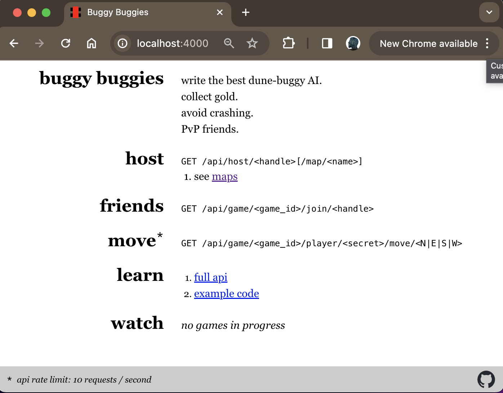
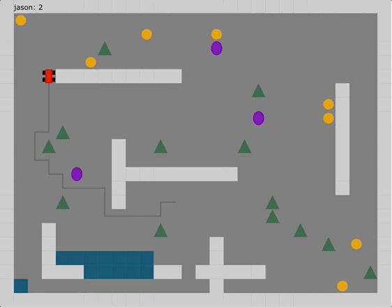

Welcome to Claro!
Claro is a statically typed JVM language that provides a well-lit path to building simple, highly concurrent, and scalable applications.
Dependency Management Done Right
Claro was designed with modern build tooling in mind:
- Swap any dependency without changing a single line of source code
- Runtime "Dependency Injection" frameworks are a thing of the past
- First class Module system
Fearless Concurrency
Developed by a Xoogler taking inspiration from years of hands-on development experience with Google-internal backend web frameworks, Claro moves well beyond async/await. Claro’s declarative, DAG-based structured concurrency model provides an easy-to-use abstraction to statically guarantee that programs are:
- Non-blocking
- Data-race free
- Deadlock free
- Optimally scheduled
- Scalable by default
Data Oriented
- Strict separation between data and functionality
- Mutability tracked at the type system level
- Extremely flexible built in algebraic data types
- Model arbitrary data structures with zero boilerplate
Unapologetically Practical
- Bi-directional type inference
- Robust standard library
- Builtin external package manager
- Build time metaprogramming
Designed to Scale with You
- Incremental compilation out of the box
- Code reuse made simple
- Develop codebases of any size without devolving into a spaghetti labyrinth
Actively In Development
Claro is in active development and is not yet ready for production use. While Claro has been in active development for more than 3 years, its design and implementation has been done entirely by its single maintainer, Jason Steving - while the foundation has been laid, contributions are welcome! Anyone with interest is actively encouraged to reach out and get involved!
[0.001s][warning][perf,memops] Cannot use file /tmp/hsperfdata_runner/3 because it is locked by another process (errno = 11)
Hello, World!
Fig 1:
print("Hello, world!");
Output:
Hello, world!
As you can already see from the most minimal program possible, Claro programs eliminate unnecessary boilerplate. Every Claro program is simply a sequence of statements that are executed from top-to-bottom as if it were a "script". You don't need to specify a "main" method" as in other languages like Java, instead, much like Python, you simply specify a starting file which will execute top-down at program start.
Create Your First Claro Project with Bazel!
Claro is fundamentally designed around a deep integration with the extremely powerful Bazel build system - which enables Claro's incremental builds, external package management, extremely flexible module system, and build-time metaprogramming capabilities - so you'll need to do a bit of Bazel-related setup to prepare your Claro project.
You'll only need to do this once! Bazel does not mandate monorepo style development, but it really shines when used in that context. From this single Bazel project, you'll be able to write, build, and run whatever (related or unrelated) Claro programs as you see fit.
Follow the below steps to set up your first Claro project with Bazel!
1 - Install Bazel (Required)
Simply install Bazel - follow these instructions to install via Bazelisk.
Note: It's an explicit non-goal of Claro to support any other non-Bazel build environment.
2 - Auto-Generate Your Project
Get create_claro_project.sh from the
latest Release
and run this command:
$ ./create_claro_project.sh <project name>
Note: The below recording was made with asciinema - try pausing and copying any text.
You can delete the create_claro_project.sh script once you're done with this initial setup.
2 (Alternative) - Manually Copy Configuration of Example Project
Follow the example Claro project configuration at examples/bzlmod/.
Supported Operating Systems
As Claro is still firmly in development, it has only been tested on macOS. You may run into trouble running it on another OS as there are some known portability issues building the Claro compiler from source (currently the only supported way to consume the compiler).
Your First Claro Program
Continue on to the next section to learn how to build and run your first Claro program!
Understanding the Starter Project
The create_claro_project.sh script generated several files:
Fig 1:
demo
|-- .bazelrc
|-- .bazelversion
|-- MODULE.bazel
|-- README.md
`-- example
|-- BUILD
|-- demo.claro
`-- input.txt
1 directory, 7 files
Let's take a brief tour through each file to get a high level understanding of what's going on.
If you're already familiar with Bazel, jump ahead to writing your first Claro program.
MODULE.bazel
See: Official Bazel reference - This file marks the root of your Bazel project.
Fig 2:
module(name = "example-claro-module")
bazel_dep(name = "claro-lang", version = "0.1.509")
module(name = "example-claro-module")
This is the one place where you'll see the term "module" overloaded to refer to Bazel's concept of
Modules relating to Bazel's external package
management solution. So, the name you pick for your top-level module(name = "...") declaration should be something
that you would be ok with using to publicly present your project to downstream users if you chose to publish your
project to the Bazel Central Registry later on.
bazel_dep(name = "claro-lang", version = "0.1.409")
This file is where you will declare your external dependencies for Bazel to resolve at build time. Every Claro project
will need to declare an external dependency on the claro-lang project to get access to the Build Rules (e.g.
claro_binary() and claro_module()) as well as the compiler itself. Keeping your installation of Claro up-to-date is
as simple as bumping the version number listed here.
Claro has been published to the BCR at https://registry.bazel.build/modules/claro-lang. Check for new releases there to make sure that you're using the latest and greatest.
.bazelversion
See: Official Bazelisk reference - This file configures Bazelisk to use the declared Bazel version.
Fig 3:
6.4.0
Claro depends on Bzlmod which was introduced in Bazel version 6, so you'll need to use at least version 6.
.bazelrc
See: Official Bazel reference - This file is used to configure optional Bazel flags.
Fig 4:
common --enable_bzlmod
common --java_runtime_version=remotejdk_11
build --java_language_version=11
build --tool_java_language_version=11
common --enable_bzlmod
This configures Bazel to opt in to enabling the Bzlmod, external package manager. This will be necessary in all Claro projects to at least enable Bazel to resolve your dependency on the Claro compiler.
common --java_runtime_version=remotejdk_11
This configures Bazel to download a remote version of the JVM to execute compiled Claro programs. Technically, you can opt in to using a local Java install, but keeping this flag as is ensures that you're running a JVM version that Claro's actually been tested against.
BUILD
See: Official Bazel reference - BUILD files are the fundamental building block of a Bazel project. Here you'll define "build targets" representing components of your program and their dependencies.
Fig 5:
load("@claro-lang//:rules.bzl", "claro_binary")
claro_binary(
name = "demo_bin",
main_file = "demo.claro",
resources = {
"Input": "input.txt",
}
)
load("@claro-lang//:rules.bzl", "claro_binary")
This loads (a.k.a. "imports") the claro_binary() Build Rule from the rules.bzl
Bazel extension file located in the root directory
of the claro-lang project. After this load, you're able to define claro_binary() targets in this BUILD file by
calling it just as you would a function in any other programming language (albeit with mandatory named parameters).
claro_binary(...)
As mentioned above, this declares a build target that represents an executable Claro program (*_binary() is the
conventional naming of executable build targets in the Bazel ecosystem).
name = "demo_bin"
All Bazel build targets include a mandatory name = "..." parameter - in combination with the full path from the
project root, this specific build target can be uniquely referenced as //example:demo_bin. Using this name, you can
execute Bazel build/run commands from the command line.
You can build the target to have Bazel invoke the Claro compiler to verify that your program is valid and if so generate the executable program artifacts that can be invoked separately:
bazel build //example:demo_bin
During local development you can directly build and run the target by using the below command which will trigger Bazel to build the target and then upon success invoke the built executable program automatically:
bazel run //example:demo_bin
main_file = "demo.claro"
Claro programs begin execution by running top-level statements of a given "main file" top-down, rather than looking for
some special main function.
resources = { "Input": "input.txt", }
This declares that this program should bundle the file input.txt into the final compiled Jar file so that it's
available at runtime no matter where the program is run. It makes this resource file available as resources::Input in
the compiled program. Find more details about resources in the Reference Guide.
input.txt
Just a resource file read by the demo program.
Fig 6:
look ma, no hands!
demo.claro
The main Claro file that contains the code to be executed.
Fig 7:
resources::Input
|> files::readOrPanic(^)
|> strings::trim(^)
|> strings::toUpperCase(^)
|> wrapInBox(^)
|> print(^);
function wrapInBox(s: string) -> string {
var line = strings::repeated("-", len(s) + 4);
return "{line}\n| {s} |\n{line}";
}
This program just reads in the contents of the input.txt resource file, trims extra
whitespace, converts it to all caps, wraps it in a box of "-" characters, and prints it to stdout.
Note the calls to functions like files::readOrPanic and strings::trim are calling into functions declared in dep
modules. In this case there's no explicit mention of those dependencies in the claro_binary(...) target declaration
because files and strings are modules in the
stdlib so no explicit
dependency is necessary.
Your First Program
Now that you've set up your starter Claro project in the previous section, let's go through the process of implementing your first program!
Create hello_world.claro
Fig 1:
print("Hello, world!");
Hello World is a one-liner in Claro, so it's a great place to start learning how to declare a new Claro program using
Bazel. Just to keep things simple, copy the above line into a new file at //example/hello_world.claro.
Fig 2:
demo
|-- .bazelrc
|-- .bazelversion
|-- MODULE.bazel
|-- README.md
`-- example
|-- BUILD
|-- demo.claro
|-- hello_world.claro
`-- input.txt
1 directory, 8 files
Declare a New claro_binary(...) Target in Your BUILD File
Now, we'll simply add a new build target for our Hello World program to the existing BUILD file that was generated as part of the starter project.
Fig 3:
load("@claro-lang//:rules.bzl", "claro_binary")
claro_binary(
name = "demo_bin",
main_file = "demo.claro",
resources = {
"Input": "input.txt",
}
)
claro_binary(
name = "hello_world",
main_file = "hello_world.claro",
)
Now Execute Your Program!
That's all there is to it! Now you can use the following command to have Bazel build and then run your program:
Note: The below recording was made with asciinema - try pausing and copying any text.
Congratulations! You just wrote and executed your first Claro program entirely from scratch!
Avoiding Bazel's Extra Output
Notice that when you used bazel run ... to run your executable build target, Bazel produced a bunch of INFO: ...
logs related to the build process. Since the program built successfully, this is something that you can usually just
ignore. However, if this extra noise bothers you, you can make use of Bazel's generated build artifacts to run the
program directly, without any of Bazel's extra logging. Notice the very last line in Bazel's output:
INFO: Running command line: bazel-bin/example/hello_world
This is a script that can be directly invoked to run the built executable program locally.
Note: The below recording was made with asciinema - try pausing and copying any text.
Generating a Portable Executable ("Deploy Jar")
As Claro is a JVM language, you can easily generate a self-contained Jar file that can be run anywhere that a JVM is
installed. Generate the "Deploy Jar" by appending _deploy.jar to the end of any claro_binary() build target, and can
then run it using java -jar ... as you would any executable Jar:
Note: The below recording was made with asciinema - try pausing and copying any text.
[0.001s][warning][perf,memops] Cannot use file /tmp/hsperfdata_runner/3 because it is locked by another process (errno = 11)
Intro to Modules
Now, the Hello World program that you wrote in the previous section was extremely simple - just a one-liner in a single file. Let's add a tiny bit more functionality to your first program as an excuse to learn about Claro's Module System!
Taking inspiration from the starter project's demo program, which printed the following to stdout:
----------------------
| LOOK MA, NO HANDS! |
----------------------
we'll extend our hello_world.claro program to also print out the classic greeting in the same boxed styling. We could
of course just copy-paste the demo program's wrapInBox function into hello_world.claro, but instead, in order to
avoid having multiple implementations of the same function that could drift over time, we'll walk through the process of
refactoring both programs so that each can share a single function implementation as a common dependency.
Create //example:styling.claro
First thing first, create the file //example:styling.claro to hold the wrapInBox function definition:
Fig 1:
function wrapInBox(s: string) -> string {
var line = strings::repeated("-", len(s) + 4);
return "{line}\n| {s} |\n{line}";
}
Define a Module API File
Claro Modules are extremely flexible by design (we'll only begin to scratch the surface here) and in order to achieve
that flexibility a Module API file is used to declare which definitions are exported to consumers of the Module. Any
definition not listed in the Module API file is "private" by default. In this case we just have the one function
definition so we'll add its signature to the new file styling.claro_module_api (the only naming requirement here is
that it must end with the .claro_module_api suffix).
Fig 2:
# Wraps the given string in a "box" of dashes.
# E.g.
# Input:
# "Foo"
# Output:
# -------
# | Foo |
# -------
function wrapInBox(s: string) -> string;
As a general rule of thumb, when working in a Claro project, you should prioritize writing documentation for anything exported in a Module API file. And when reading code, it's advisable to spend most of your time primarily referencing Module API files rather than their corresponding source files, unless of course you are curious to understand the implementation.
Your project should now have the following structure:
Fig 3:
demo
|-- .bazelrc
|-- .bazelversion
|-- MODULE.bazel
|-- README.md
`-- example
|-- BUILD
|-- demo.claro
|-- hello_world.claro
|-- input.txt
|-- styling.claro
`-- styling.claro_module_api
1 directory, 10 files
Add a claro_module(name = "styling", ...) Build Target
The final step in defining a Module in Claro is defining a claro_module(...) build target. Add the following to your
BUILD file to create a Module by declaring explicitly that the styling.claro file implements the interface declared
by styling.claro_module_api:
Fig 4:
load("//:rules.bzl", "claro_binary", "claro_module") # <-- New
claro_binary(
name = "demo_bin",
main_file = "demo.claro",
resources = {
"Input": "input.txt",
}
)
claro_binary(
name = "hello_world",
main_file = "hello_world.claro",
deps = { # <-- New
"Style": ":styling",
},
)
claro_module( # <-- New
name = "styling",
module_api_file = "styling.claro_module_api",
srcs = ["styling.claro"],
)
Updated load(...) Statement
The load(...) statement also needed to be updated to include the newly used claro_module Build Rule.
Added an Explicit Dependency on //example:styling
Claro handles dependencies entirely within Bazel BUILD files, and .claro source files themselves do not have any
mechanism for the traditional import style that you will have gotten accustomed to in other languages. This is the key
to Claro's extremely flexible Module system and provides many powerful advantages over the traditional import style,
but we won't get any further into that here.
For now, just note that claro_*() Build targets all accept an (optional) deps = {<dep name>: <module target>} map
that explicitly declares and names any dependencies the current compilation unit has on any other Module. Note that the
consuming compilation unit is free to choose any name to refer to the Module(s) that it depends on. Here we've
chosen to name the //example:styling Module Style.
Update hello_world.claro to Use Style::wrapInBox
Now we're finally ready to update our Hello World program to wrap its output in a box using its new module dependency!
Update hello_world.claro to:
Fig 5:
print(Style::wrapInBox("Hello, World!"));
Now Execute Your Updated Hello World!
Note: The below recording was made with asciinema - try pausing and copying any text.
On Your Own: Update //example:demo_bin to Use the New Module
Using what you've learned, it should now be straightforward to update //example:demo_bin to also depend on the newly
defined Module so that there's only a single definition of the wrapInBox function in your project.
On Your Own: Refactor //example:styling to its Own Directory
This will be a good way to test your understanding of how Claro and Bazel work together.
Hint: You can move the Module definition anywhere in the project that you want, but you'll need to update the
deps = {...} declarations to reference its new location.
Common Programming Concepts
Variables & Primitive Types
Claro is a statically-compiled, strictly typed language. Practically speaking, this means that the type of all variables must be statically determined upon declaration of the variable, and may never change thereafter.
Claro has several builtin "primitive" types representing generally small or low-level "value types" that are immutable to the programmer. They are referred to as "primitive" because they are foundational to the language's type system, and make up the basic building blocks of which every other type in the language is just some structured combination. Values of these primitive types are generally cheap to allocate on the stack, and are passed as copies to other functions (strings, being handled in typical JVM fashion, are actually heap allocated with references to strings passed instead of copying the value itself).
The supported set of primitives are: int, long, float, double, boolean, string, char. The example below shows how you'd define variables to represent values of each type:
Fig 1:
var i: int = 10; # Any whole number from -2^31 to 2^31-1.
var l: long = 10L; # Any whole number from -2^63 to 2^63-1.
var f: float = 1.15F; # A single-precision 32-bit IEEE 754 floating point number.
var d: double = 1.15; # A double-precision 64-bit IEEE 754 floating point number.
var b: boolean = true; # true or false.
var s: string = "very first string"; # An immutable sequence of chars. Heap allocated.
var c: char = 'a'; # A single 16-bit Unicode character.
To break the syntax down further:
var : Keyword introducing / declaring a new variable.
b : the name we chose for this particular var.
: : a syntactic divider between a variable's name and its type.
boolean : the type of the variable, which constrains the domain of values which this variable may hold.
Separate Variable Declaration & Initialization
The previous example demonstrates the simultaneous declaration and initialization of a new variable and its initial value. It is also possible to delay initialization to happen independently of declaration.
Fig 1:
var i: int;
i = 10;
(Note: this is particularly useful when you may want to initialize to different values in different branches of an if-else chain for example.)
[0.002s][warning][perf,memops] Cannot use file /tmp/hsperfdata_runner/3 because it is locked by another process (errno = 11)
Variable Reassignment
By definition, the value represented by a variable may vary, or change, over time throughout the program:
Fig 1:
var s: string = "Hello";
print(s);
s = "goodbye";
print(s);
Output:
Hello
goodbye
String Formatting
Formatting strings is an incredibly common programming task, whether it be for the sake of debugging or for building full-fledged CLI programs. Claro attempts to simplify this process by providing syntax sugar for directly templating arbitrary expressions directly into a string.
Note: At the moment, Claro only supports single-line strings, but multi-line strings are planned. Stay tuned for this in a future release.
To take advantage of this, any expression can be formatted into a string by wrapping it in {...}.
Fig 1:
var s = "!EXAMPLE!";
print("prefix---{s}--suffix");
provider foo() -> string {
return "WOW!";
}
# Formatted expressions really are arbitrary expressions, you can even call
# arbitrary procedures from them.
print("prefix---{foo()}---suffix");
# Format strings can even be nested, though you should probably have a good
# reason for doing this.
print("prefix---{"inner+++{s}+++inner"}---suffix");
# You can also use multiple fmt arg expressions!
print("Name:\t{getRandomName()}\nAge:\t{random::nextNonNegativeBoundedInt(random::forSeed(1), 20)}");
provider getRandomName() -> string {
# ...
var names = ["Milo", "Millie", "Ruby"];
random::forSeed(2)
|> random::nextNonNegativeBoundedInt(^, 3)
|> var ind = ^;
return names[ind];
}
Output:
prefix---!EXAMPLE!--suffix
prefix---WOW!---suffix
prefix---inner+++!EXAMPLE!+++inner---suffix
Name: Millie
Age: 5
Escaping Curly-Braces in Strings
While Format Strings are very convenient, this does have the consequence of giving curly-braces a special significance
in string literals. So, to type a string literal that contains the { char, you must escape it using \{, for example:
Fig 2:
print("This string has \{literal \{curlies} in it}");
Output:
This string has {literal {curlies} in it}
Control Flow
Claro has only a few control flow structures at the current moment. These structures allow programs to execute code both conditionally and repeatedly. The only thing to keep an eye on, coming from a dynamic language like Python, is that Claro will statically validate that do not misuse conditional execution to run code that may attempt to use a variable before initialization. The examples in the following sections will also demonstrate invalid code that Claro throw a compile-time error on.
If-Else
Fig 1:
var rng = random::forSeed(1);
var r = random::nextNonNegativeBoundedInt(rng, 100);
var s: string;
if (r < 33) { # Curly braces are mandatory.
s = "small";
} else if (r < 66) {
s = "medium";
} else {
s = "large";
}
print(s); # Prints "small", "medium", or "large".
Output:
large
Fig 2:
var rng = random::forSeed(1);
var r = random::nextNonNegativeBoundedInt(rng, 100);
var s: string;
if (r < 33) {
s = "red";
} else if (r < 66) {
s = "green";
}
print(s); # `s` is uninitialized if r >= 66.
Compilation Errors:
if_else_EX2_example.claro:11: Variable <s> may not have been initialized!
print(s); # `s` is uninitialized if r >= 66.
^
Warning! The following declared symbols are unused! [s]
2 Errors
Note: Claro's error messaging is a work in progress - the above error message will be improved.
While Loops
Fig 1:
var i = 0;
while (i < 10) {
print(i++);
}
Output:
[0.001s][warning][perf,memops] Cannot use file /tmp/hsperfdata_runner/6 because it is locked by another process (errno = 11)
0
1
2
3
4
5
6
7
8
9
Fig 4:
var s: string;
while (input("Should `s` be initialized? (Y/n)") == "Y") {
s = input("Enter the value for `s`:");
}
print(s);
Compilation Errors:
while_EX4_example.claro:5: Variable <s> may not have been initialized!
print(s);
^
Warning! The following declared symbols are unused! [s]
2 Errors
Exiting a While Loop Early
You can exit a loop early by using the break keyword as below.
Fig 2:
var i = 0;
while (i < 10) {
if (i == 5) {
break;
}
print(i++);
}
Output:
0
1
2
3
4
Skipping to the Next Iteration of the While Loop
You can also skip ahead to the loop's next iteration by using the 'continue' keyword as below.
Fig 3:
var i = 0;
while (i < 10) {
if (i % 2 == 0) {
++i;
continue;
}
print(i++);
}
Output:
1
3
5
7
9
For Loops
For loops in Claro are closely analogous to Java's "enhanced for-loops". They enable you to easily iterate over the elements of a collection.
For Loop Over Lists
Fig 1:
for (e in [1, 2, 3, 4, 5]) {
print(e);
}
Output:
1
2
3
4
5
For Loop Over Sets
Fig 2:
for (e in {1, 2, 3}) {
print(e);
}
Output:
[0.001s][warning][perf,memops] Cannot use file /tmp/hsperfdata_runner/6 because it is locked by another process (errno = 11)
1
2
3
For Loop Over Maps
Iterating over the elements of a map of type {K: V} using the for-loop construct will yield a loop variable whose type
is tuple<K, V>:
Fig 3:
for (e in {'a': 1, 'b': 2, 'c': 3}) {
print("Key: {e[0]} - Val: {e[1]}");
}
Output:
[0.002s][warning][perf,memops] Cannot use file /tmp/hsperfdata_runner/6 because it is locked by another process (errno = 11)
Key: a - Val: 1
Key: b - Val: 2
Key: c - Val: 3
Note 1:
Note 2:
Fig 4:
random::create()
|> random::nextNonNegativeBoundedInt(^, 10)
|> var r = ^;
var l: mut [int] = mut [];
while (r-- > 0) {
lists::add(l, r);
}
var s: int;
for (elem in l) { # <-- `l` could be empty.
s = elem;
}
print(s);
Compilation Errors:
for_EX4_example.claro:13: Variable <s> may not have been initialized!
print(s);
^
Warning! The following declared symbols are unused! [s]
2 Errors
Exiting a For Loop Early
You can exit a loop early by using the break keyword as below.
Fig 5:
for (e in [1, 2, 3, 4, 5]) {
if (e == 3) {
break;
}
print(e);
}
Output:
[0.002s][warning][perf,memops] Cannot use file /tmp/hsperfdata_runner/6 because it is locked by another process (errno = 11)
1
2
Skipping to the Next Iteration of the For Loop
You can also skip ahead to the loop's next iteration by using the 'continue' keyword as below.
Fig 6:
for (e in [1, 2, 3, 4, 5]) {
if (e % 2 == 0) {
continue;
}
print(e);
}
Output:
1
3
5
Repeat Loops
Repeat loops in Claro enable you to easily repeat a task some number of times:
Fig 1:
repeat (5) {
print("Repeating...");
}
Output:
Repeating...
Repeating...
Repeating...
Repeating...
Repeating...
The loop count can be computed at runtime:
Fig 2:
var loopCount = random::nextNonNegativeBoundedInt(random::create(), 10);
repeat (loopCount) {
print("Repeating...");
}
Output:
Repeating...
Repeating...
Pipes
Piping is a control flow mechanism that is not common to all languages, but is truly just syntactic sugar (one of the
few pure-sugar features in the language). Piping gives you a mechanism to decompose deeply nested function calls into a
linear chain of operations that happen one after the other much like any other imperative code you're familiar with. The
main thing to know is that on each line beginning with the "pipe" operator |>, the token ^ (known as the
"backreference" operator) refers to the value of the expression before the pipe operator. It is intended that the ^
operator, visually resembles an arrow pointing upwards to the value produced on the line above.
Fig 1:
["Claro", "piping", "is", "so", "cool"]
|> [^[0], ^[len(^) - 1]] # <-- Get the first and last element of the list.
|> strings::join(" is damn ", ^)
|> "{^}! I'll say it again... {^}!!" # <-- Can backreference prev value more than once.
|> print(^);
Output:
[0.002s][warning][perf,memops] Cannot use file /tmp/hsperfdata_runner/6 because it is locked by another process (errno = 11)
Claro is damn cool! I'll say it again... Claro is damn cool!!
Compare to the alternative code without piping. Notice how use of piping in the above example even allows elimination of multiple temporary variables - this is a powerful motivator for using pipelining as it's well known that naming is one of the two hard problems in computer science:
Fig 2:
# With piping, these temporary vars are unnecessary.
var nonPipingSource = ["Claro", "piping", "is", "so", "cool"];
var joinedTmp =
strings::join(
" is damn ",
[nonPipingSource[0], nonPipingSource[len(nonPipingSource) - 1]]
);
print("{joinedTmp}! I'll say it again... {joinedTmp}!!");
Output:
Claro is damn cool! I'll say it again... Claro is damn cool!!
Textually Linear Data Flow
It's worth noting that the primary motivation for pipelining support in Claro is to take what could otherwise be highly nested procedure calls whose data flow conceptually runs "inside-out", and allow it to instead be written in a style that has the data flowing in the same linear direction as the textual source code itself.
As such, Claro's pipelines introduce a concept of "source" and "sink". The "source" is the initial expression (data) that conceptually "enters the pipeline" and the "sink" is some terminal statement that consumes the data that "comes out of the end of the pipeline". This means that the pipeline's sink can be any valid Claro statement that uses the value computed by the penultimate step in the pipeline.
Notice how the following variable assignment allows data to flow top-to-bottom in the same direction as the source code is written textually:
Fig 3:
["Hello", "world!"]
|> [strings::toUpperCase(s) | s in ^]
|> strings::join(", ", ^)
|> var greeting = ^;
print(greeting);
Output:
HELLO, WORLD!
whereas, very confusingly, the non-pipelining style has source code written top-to-bottom, but yet the data is effectively flowing in a circuitous route from bottom-to-top and then back down again.
Fig 4:
var greeting =
strings::join(
", ",
[strings::toUpperCase(s) | s in ["Hello", "world!"]]
);
print(greeting);
Output:
HELLO, WORLD!
This may be something that we all get used to in other languages, but it's certainly an obstacle to readability particularly for new programmers.
[0.003s][warning][perf,memops] Cannot use file /tmp/hsperfdata_runner/3 because it is locked by another process (errno = 11)
Pattern Matching
In addition to the typical if-else style branching construct, Claro offers a more powerful construct called "Pattern Matching". In its simplest form, Pattern Matching can simply be used as a more concise replacement for if-else chains.
Compare the following if-else chain:
Fig 1:
var x = 2;
var sizeStr: string;
if (x <= 1) {
sizeStr = "small";
} else if (x == 2) {
sizeStr = "medium";
} else {
sizeStr = "large";
}
print(sizeStr);
with the comparable match-statement:
Fig 2:
var x = 2;
var sizeStr: string;
match (x) {
case 1 -> sizeStr = "small";
case 2 -> sizeStr = "medium";
case _ -> sizeStr = "large";
}
print(sizeStr);
The match statement takes in a single expression of any type, to be compared against the given cases clauses in
order - the first one to successfully match is executed (there is no fallthrough like in a Java or C++ style switch).
"Default" Case
The example above makes use of a "default" case that will match anything that the cases preceding it didn't match.
Fig 3:
var x = 2;
var sizeStr: string;
match (x) {
case 1 -> sizeStr = "small";
case 2 -> sizeStr = "medium";
case _ -> sizeStr = "large";
}
print(sizeStr);
In the context of pattern matching, the _ token represents a "wildcard" pattern. Learn more about this in the
Wildcard Patterns section.
Multi-Statement Cases
When a case is matched, the associated code block following the -> and preceding the next case (or until the
overall closing }) will all be executed. This code block can contain any number of statements.
Fig 4:
var x = 2;
var sizeStr: string;
match (x) {
case 1 ->
sizeStr = "small";
case 2 ->
print("More than one line of code is valid.");
sizeStr = "medium";
case _ ->
sizeStr = "large";
}
print(sizeStr);
Output:
More than one line of code is valid.
medium
Patterns Must Not Reference Existing Variables
The following is invalid:
Fig 5:
var x = # ...
2;
match (2) {
case x -> print("Matched variable {x}");
case 1 -> print("1!");
case _ -> print("default!");
}
Compilation Errors:
match_EX5_example.claro:4: Wildcard Binding Shadows Declared Variable: Names of wildcard bindings in Match case patterns must not shadow any already-declared variable in scope.
case x -> print("Matched variable {x}");
^
match_EX5_example.claro:3: Illegal Duplicate Match Case: All case patterns should be unique within a match block.
match (2) {
^
match_EX5_example.claro:3: Illegal Duplicate Match Case: All case patterns should be unique within a match block.
match (2) {
^
match_EX5_example.claro:3: Illegal Match Containing Multiple Default Cases: Each match block should contain at most one case matching the `_` wildcard.
match (2) {
^
4 Errors
Note: Claro's error messaging is a work in progress - the above error message will be improved.
Matching Structured Data
Pattern Matching is much more than just a classic C-style switch statement. In particular, it can be used to match arbitrarily structured data.
Fig 1:
var employee = {name = "Bob", title = "Intern"};
var permission: boolean;
match (employee) {
case {name = "Sarah", title = "Manager"} -> permission = true;
case {name = "Joe", title = "Manager"} -> permission = true;
case _ -> permission = false;
}
print("Permission granted for {employee.name}?: {permission}");
Output:
[0.002s][warning][perf,memops] Cannot use file /tmp/hsperfdata_runner/6 because it is locked by another process (errno = 11)
Permission granted for Bob?: false
Matching Arbitrarily Nested Structured Types
Claro supports pattern matching over arbitrary (i.e. tuple<...> and struct{...}) structured types as their
structures are fully known at compile time.
Fig 2:
var player = {name = "Jason", currLoc = (1, 2)};
match (player) {
case {name = "Sarah", currLoc = (3, 4)} -> print("Sarah wins!");
case {name = "Jason", currLoc = (1, 2)} -> print("Jason wins!");
case _ -> print("Keep playing...");
}
Output:
Jason wins!
Wildcard Patterns
The utility of Pattern Matching is dramatically increased by making use of wildcards. For example, they enable the below match with cases that only specify partial matches and then bind matched values to a variable:
Fig 1:
newtype Square : int
newtype Rectangle : struct {height: int, width: int}
newtype Line : int
consumer printShapeArea(shape: oneof<Square, Rectangle, Line>) {
var area: int;
match (shape) {
case Rectangle({height = H:int, width = W:int}) -> area = H * W;
case Square(W:int) -> area = W * W;
case _ -> area = 0;
}
print("Area of {shape}: {area}");
}
printShapeArea(Square(2));
printShapeArea(Rectangle({height = 10, width = 10}));
printShapeArea(Line(2));
Output:
Area of Square(2): 4
Area of Rectangle({height = 10, width = 10}): 100
Area of Line(2): 0
The syntax W:int is a "wildcard binding" that matches any int value and declares a variable that the int will be
assigned to in the case code block.
Case Ordering and Wildcards
Cases are semantically matched in the order that they appear in the source code. This means that it's possible to define unreachable cases if the cases above already cover the pattern:
Note: Claro's error messaging is a work in progress - the below error message will be improved.
Fig 2:
var t = (1, 2);
match (t) {
case (1, 3) -> # ...
print("(1, 3)");
case (_, 2) -> # ...
print("(_, 2)");
case (1, 2) -> # <-- This is unreachable.
print("(1, 2)");
case _ -> # ...
print("_");
}
Compilation Errors:
wildcards_EX2_example.claro:2: Illegal Duplicate Match Case: All case patterns should be unique within a match block.
match (t) {
^
1 Error
Simply changing the ordering of the cases above will fix this problem:
Fig 3:
var t = (1, 2);
match (t) {
case (1, 3) -> print("(1, 3)");
case (1, 2) -> print("(1, 2)");
case (_, 2) -> print("(_, 2)");
case _ -> print("_");
}
Output:
(1, 2)
Static Exhaustiveness Checks
Pattern Matching is not just convenient syntax sugar. By using a match statement instead of an if-else chain,
Claro is able to statically validate that every possible case is exhaustively handled by some case.
For example, the following match over a value of type oneof<Red, Yellow, Green> is missing a case to handle the
Green atom and Claro rejects the match at compile-time:
Fig 1:
atom Red
atom Yellow
atom Green
var lightColor: oneof<Red, Yellow, Green> = Green;
var lightColorStr: string;
match (lightColor) {
case _:Red -> lightColorStr = "red";
case _:Yellow -> lightColorStr = "yellow";
}
print(lightColorStr);
Compilation Errors:
exhaustiveness_checks_EX1_example.claro:8: Non-exhaustive Match: The given cases do not match every possible value of the matched type `oneof<Red, Yellow, Green>`.
For example the following case is unhandled:
case _:Green -> ...;
You can also ensure that all possible cases are being handled by adding a final fallback case as below:
case _ -> ...;
match (lightColor) {
^^^^^^^^^^
1 Error
By following the suggestion in the error message above, we can fix the program:
Fig 2:
atom Red
atom Yellow
atom Green
var lightColor: oneof<Red, Yellow, Green> = Green;
var lightColorStr: string;
match (lightColor) {
case _:Red -> lightColorStr = "red";
case _:Yellow -> lightColorStr = "yellow";
case _:Green -> lightColorStr = "green";
}
print(lightColorStr);
Output:
green
Non-Trivial Exhaustiveness Checks Example
The above example is fairly trivial, just validating that all oneof type variants are handled. However, Claro's
exhaustiveness checks are fairly sophisticated, and should be able to catch mistakes in much more complicated scenarios:
Fig 3:
newtype Foo<T> : T
var myStruct2 = {a = {x = 1, y = "ninety-nine"}, z = Foo(true)};
match (Foo(myStruct2)) {
case Foo({a = {x = 1, y = "two"}, z = Foo(false)}) -> print("Foo(\{a = \{x = 1, y = \"two\"}, z = Foo(false)})");
case Foo({a = {x = 3, y = "zero"}, z = Foo(false)}) -> print("Foo(\{a = \{x = 3, y = \"zero\"}, z = Foo(false)})");
case Foo({a = {x = 1, y = _}, z = Foo(false)}) -> print("Foo(\{a = \{x = 1, y = _}, z = Foo(false)})");
case Foo({a = {x = _, y = "two"}, z = Foo(false)}) -> print("Foo(\{a = \{x = _, y = \"two\"}, z = Foo(false)})");
case Foo({a = A, z = Foo(true)}) -> print("Foo(\{a = A, z = Foo(true)}) where A = {A}");
case Foo({a = {x = 3, y = "six"}, z = Foo(false)}) -> print("Foo(\{a = \{x = 3, y = \"six\"}, z = Foo(false)})");
}
Compilation Errors:
exhaustiveness_checks_EX3_example.claro:4: Non-exhaustive Match: The given cases do not match every possible value of the matched type `Foo<struct{a: struct{x: int, y: string}, z: Foo<boolean>}>`.
For example the following case is unhandled:
case Foo({a = {x = _, y = _}, z = Foo(false)}) -> ...;
You can also ensure that all possible cases are being handled by adding a final fallback case as below:
case _ -> ...;
match (Foo(myStruct2)) {
^^^^^^^^^^^^^^
1 Error
Again, following the suggestion from the error message, we can fix the program:
Fig 4:
newtype Foo<T> : T
var myStruct2 = {a = {x = 1, y = "ninety-nine"}, z = Foo(true)};
match (Foo(myStruct2)) {
case Foo({a = {x = 1, y = "two"}, z = Foo(false)}) -> print("Foo(\{a = \{x = 1, y = \"two\"}, z = Foo(false)})");
case Foo({a = {x = 3, y = "zero"}, z = Foo(false)}) -> print("Foo(\{a = \{x = 3, y = \"zero\"}, z = Foo(false)})");
case Foo({a = {x = 1, y = _}, z = Foo(false)}) -> print("Foo(\{a = \{x = 1, y = _}, z = Foo(false)})");
case Foo({a = {x = _, y = "two"}, z = Foo(false)}) -> print("Foo(\{a = \{x = _, y = \"two\"}, z = Foo(false)})");
case Foo({a = A, z = Foo(true)}) -> print("Foo(\{a = A, z = Foo(true)}) where A = {A}");
case Foo({a = {x = 3, y = "six"}, z = Foo(false)}) -> print("Foo(\{a = \{x = 3, y = \"six\"}, z = Foo(false)})");
# Adding the case suggested by the prior error message.
case Foo({a = {x = _, y = _}, z = Foo(false)}) -> print("Foo(\{a = \{x = _, y = _}, z = Foo(false)})");
}
Output:
Foo({a = A, z = Foo(true)}) where A = {x = 1, y = ninety-nine}
Note: Claro's suggestions for resolving non-exhaustiveness match statements are intelligent and reliable, but Claro
will only warn about a single missing case example at a time (even if there are multiple unhandled cases). You may have
to apply multiple suggestions in succession, but simply following the suggestions will definitely (eventually) lead to a
fully exhaustive match statement.
Collection Comprehension
Claro takes direct inspiration from Python's powerful "Comprehensions" syntax to provide powerful single-expression operation to encode the common pattern of iterating some collection's elements and putting them into a new collection after potentially filtering and transforming the elements. This allows you to do complex initializations of both mutable and immutable collections directly in-line without having to drop down to multi-line initialization using some form of loop.
List Comprehension
Compare the following loop-based initialization:
Fig 1:
var mutList: mut [string] = mut [];
for (x in [1, 3, 99, 2, 1]) {
if (x <= 10) {
lists::add(mutList, strings::repeated("*", x));
}
}
print(mutList);
Output:
[0.002s][warning][perf,memops] Cannot use file /tmp/hsperfdata_runner/6 because it is locked by another process (errno = 11)
mut [*, ***, **, *]
with the List Comprehension based alternative:
Fig 2:
# The `|` below is read either "for" or "given".
var mutList = mut [strings::repeated("*", x) | x in [1, 3, 99, 2, 1] where x <= 10];
print(mutList);
Output:
mut [*, ***, **, *]
As you can see, taking the time to get comfortable with Comprehension expressions can serve to significantly simplify your code.
Optional: it may be useful to read a bit about the "Set Builder Notation" that inspires this syntax in both Claro and Python.
Set Comprehension
The same convenient Comprehension-based initialization is also supported for Sets. Simply swap the square brackets
[...] for curly braces {...}:
Fig 3:
var immutableSet = {strings::repeated("*", x) | x in [1, 3, 99, 2, 1] where x <= 10};
print(immutableSet);
Output:
{**, *, ***}
Notice now, even though the same mapping and filtering is done over the same input collection as in the list
comprehension examples above, the output here does not duplicate the entry "*" as Set Comprehension honors set
semantics. (However, to be very explicit, strings::repeated("*", 1) was called twice).
Map Comprehension
And finally, Comprehension-based initialization is also supported for Maps. Again, use curly braces {...} instead of
square brackets [...], but this time a colon-separated key-value entry is computed from the input collection instead
of a single value:
Fig 4:
var mutMap = mut {x : strings::repeated("*", x) | x in [1, 3, 99, 2] where x <= 10};
print(mutMap);
Output:
mut {1: *, 2: **, 3: ***}
Warning: Map Comprehension will Panic at runtime if you attempt to create multiple entries yielding the same key. It's still up for debate whether this is desirable behavior - it's possible that this may be updated to some other model such as "last entry wins". TBD.
Comprehension is More Than Syntax Sugar
While the previous section emphasized the ergonomic and simplifying qualities of Comprehensions, it should be explicitly stated that this construct is not just syntax sugar. Specifically, there is no other way in the language to directly initialize a List/Set/Map with size and elements determined dynamically at runtime without incurring an extra copy:
Fig 1:
var mutList: mut [string] = mut [];
for (x in [1, 3, 99, 2, 1]) {
if (x <= 10) {
lists::add(mutList, strings::repeated("*", x));
}
}
# Claro is automatically coercing the copied list to be immutable.
var immutableList: [string] = copy(mutList);
print(immutableList);
Output:
[*, ***, **, *]
Using List Comprehension instead not only produces much simpler code, but will also allow you to drop the unnecessary copy:
Fig 2:
var immutableList = [strings::repeated("*", x) | x in [1, 3, 99, 2, 1] where x <= 10];
print(immutableList);
Output:
[*, ***, **, *]
Note: Read more about Claro's built-in copy(...) operator here (TODO(steving)).
Types
Claro is a statically typed, compiled programming language. This means that if you attempt to assign a value of the wrong type to a variable, Claro will emit a compiler error asking for a correction before your program will be able to run. This will prevent you from waiting until runtime to find many program errors.
Fig 1:
var s: string = 100.55;
Compilation Errors:
static_typing_EX1_example.claro:1: Invalid type:
Found:
double
Expected:
string
var s: string = 100.55;
^^^^^^
1 Error
Builtin Collections
Claro also rounds out its builtin types with a small set of convenient collection types that allow you to manipulate many values using a single variable. These are provided as builtins for your convenience, but their implementations have been hand selected to cover the majority of your general purpose programming use cases.
Ad-Hoc Declarations
Unlike many other languages (e.g. Java/C++/etc.) that require a formal declaration of any type before it can be instantiated, Claro's builtin collections can all be simply instantiated at will as if the type already exists. For example, any struct-like collection of named fields in Java would first require the declaration of a class, and potentially the declaration of other things like a constructor, hashCode() and equals() implementations. In Claro, you simply skip all the boilerplate.
For example, the following Claro procedure declares a struct {row: int, col: int} inline as the function's return type
and doesn't need any top-level declaration of that type before it's used:
Fig 1:
function findInNestedList<T>(l: [[T]], t: T) -> struct {row: int, col: int} {
var r = 0;
for (row in l) {
var c = 0;
for (elem in row) {
if (elem == t) {
return {row = r, col = c}; # <-- Just instantiate the struct.
}
++c;
}
++r;
}
return {row = -1, col = -1};
}
[[1, 2],
[3, 4],
[5, 6]]
|> findInNestedList(^, 4)
|> print(^);
Output:
{row = 1, col = 1}
Mutability
All of Claro's builtin collection types come in either a mutable or immutable variant - by default, Claro will assume that any collection literals are intended to be immutable.
Fig 2:
var l = [1, 2, 3]; # Immutable list of ints.
print(l);
# The below line would be illegal as `lists::add` expects a mutable list.
# lists::add(l, 4);
Output:
[1, 2, 3]
The following example demonstrates initialization of a mutable list of integers:
Fig 3:
var l = mut [1, 2, 3];
print("Before: {l}");
lists::add(l, 4); # <-- Mutation happens here.
print("After: {l}");
Output:
Before: mut [1, 2, 3]
After: mut [1, 2, 3, 4]
Mutability Annotations are Shallow
Claro's mutability annotations are shallow by design so that you maintain fine-grained control over creating arbitrarily complex nested data structures that mix mutability and immutability as needed. The following examples demonstrate different combinations of nested mutability annotations:
This example demonstrates a mutable list whose elements are immutable lists.
Fig 4:
var l: mut [[int]] = mut [];
for (i in [1, 2, 3]) {
lists::add(l, [i, i]); # <-- Add an immutable list to the mutable list.
}
print(l);
Output:
[0.001s][warning][perf,memops] Cannot use file /tmp/hsperfdata_runner/6 because it is locked by another process (errno = 11)
mut [[1, 1], [2, 2], [3, 3]]
This example demonstrates an immutable list whose elements are mutable lists.
Fig 5:
var l: [mut [int]] = [mut [], mut [], mut []];
var i = 1;
for (mutList in l) {
lists::add(mutList, i); # <-- Append an int to this inner mutable list.
lists::add(mutList, i++);
}
print(l);
Output:
[mut [1, 1], mut [2, 2], mut [3, 3]]
Data Race Safety via Deep Immutability
See the Concurrency section in this book for more details on how Claro will statically leverage knowledge of whether a type is deeply immutable or not to prevent unsafe data races.
Lists
The simplest collection type allows you to keep an arbitrary number of values in some ordering. The list is very much like a Python list in that it allows arbitrary appends, and random access to read values at a O-based index. Unlike Python, as Claro is statically typed, all values in the list must be of the same type, and this type must be pre-determined upon declaration of the variable which reference the list.
Fig 1:
var l: mut [int] = mut [1, 3, 7, 2, -115, 0];
lists::add(l, 99);
print(len(l)); # 7
print(l[1] == l[0]); # false
print(l[6] == 99); # true
Output:
7
false
true
Accessing List Elements
Lists support random-access indexing via traditional C-like syntax:
Fig 2:
var l = [1, 2];
print(l[0]);
print(l[1]);
Output:
1
2
Mutable List Element Reassignment
You can update the individual values stored at a particular list index via traditional C-like syntax:
Fig 3:
var l = mut [1, 2];
l[0] = 99;
print(l);
Output:
mut [99, 2]
Index-Out-Of-Bounds
As with most other languages that allow random-access to lists, you must be careful to always index into lists at valid positions. Any accesses of index, i, where i < 0 or i >= len(l) will result in the program Panicking (exiting in an unrecoverable way).
var l = mut [1, 2];
l[99] = 0; # <-- Panic: Index-out-of-Bounds!
(Note: it's possible that as the language evolves, Claro may instead opt to make all list subscripting operations inherently safe by returning some structured result that models the possibility that the list index was invalid. This is ideal for safety, however, this would impose a global runtime overhead so the tradeoff is still being evaluated.)
Stdlib lists Module
A large variety of list operations are available in the
stdlib's lists module. For example, the previous exapmle
added an element to the end of a mutable list by using the lists::add procedure whose signature is the following in
the lists.claro_module_api file:
# Appends the specified element to the end of this list.
consumer add<T>(l: mut [T], toAdd: T);
Empty Lists
It's worth noting that Claro has no way of inferring the correct element type of an empty list when it's type is not constrained by context. For example, the below variable declaration would be a compile-error:
var l = []; # Compiler Error: ambiguous type.
Empty List Type Inference By Later Usage (Will Never Be Supported)
You might think that Claro should be able to infer the type intended for this empty list based on the later usage of the variable it's assigned to. Claro takes the opinionated stance that this would be inherently undesirable behavior. Type inference shouldn't follow some esoteric resolution rules. It would be all too easy to implement a complex type inference system that can infer types far better than any real world human reader could - the end result would simply be enabling code to be written that is intrinsically difficult for your colleagues (and your future self) to read later on. This is an anti-goal of Claro.
The following will never be supported:
# Hypothetically, Claro could infer that the type of `l` is `mut [string]` based
# solely on the usage of `l` later on.
var l = mut [];
...a bunch of code...
append(l, "foo");
Sets
Claro sets are much like Python sets, with a fixed, single type for all elements. You may initialize them with many elements and then check for membership in the set later.
Fig 1:
var mySet: {int} = {1, 6, -12};
print(10 in mySet);
print(6 in mySet);
Output:
false
true
Adding Elements to a Mutable Set
Elements can be added to a set by making use of the sets::add function from the
stdlib's sets module.
Fig 2:
# Adds the specified element to this set if it is not already present. If this set already contains the element, the
# call leaves the set unchanged and returns false. This ensures that sets never contain duplicate elements.
#
# Returns: true if this set did not already contain the specified element.
function add<T>(s: mut {T}, t: T) -> boolean;
Fig 3:
var s = mut {1, 2};
print(10 in s);
_ = sets::add(s, 10); # <-- Explicitly ignoring output of function call.
print(10 in s);
Output:
false
true
Maps
A mapping of keys of a fixed value type, to values of a fixed type.
Fig 1:
var myMap: mut {string: int} = mut {};
myMap["Jason"] = 28;
print("Jason" in myMap); # true
myMap["Kenny"] = 29;
print(myMap); # mut {"Jason": 28, "Kenny": 29}
Output:
true
mut {Jason: 28, Kenny: 29}
Checking if a Key Exists
You can check for the existence of a key in a map by using the in keyword.
Fig 2:
var m = {"a": 1, "b": 2};
for (k in ["a", "b", "c"]) {
print("{k} in map: {k in m}");
}
Output:
a in map: true
b in map: true
c in map: false
Iterating Over the Entries of a Map
Claro's for loop supports iterating over the entries of a map, with each entry modeled as tuple<K, V>:
Fig 3:
var m = {"a": 1, "b": 2};
for (entry in m) {
var k = entry[0];
var v = entry[1];
print("{k} -> {v}");
}
Output:
a -> 1
b -> 2
Stdlib maps Module
A large variety of map operations are available in the
stdlib's maps module. For example, you can
declare a default value that will be used as fallback if the read key doesn't exist in the map by using the following
function declared in the maps.claro_module_api file:
Fig 4:
# Returns the value to which the specified key is mapped, or `defaultValue` if this map contains no mapping for the key.
function getOrDefault<K,V>(m: {K:V}, k: K, defaultValue: V) -> V;
Fig 5:
var m = {"a": 1, "b": 2};
for (k in ["a", "b", "c"]) {
print(maps::getOrDefault(m, k, -1));
}
Output:
1
2
-1
Tuples
Tuples are a fixed-order, fixed-size collection of values which do not all have to be of the same type.
Compile-Time Validated Indexing
You can see in the example below, tuples interact w/ type validation in an interesting way worth making note of. When you index into a tuple, you should generally prefer to use a literal int constant. When you do, Claro can statically determine the type of the value you're accessing at compile time, which allows safer and more efficient code.
For example, Claro is able to statically find the bugs in the below program:
Fig 1:
var myPair: tuple<int, string> = (1, "one");
# Claro will interpret literal int subscripts at compile-time for type validation.
var myInt: int = myPair[1]; # <-- Wrong index.
print(myInt);
var myStr: string = myPair[3]; # <-- Out-of-bounds index.
print(myStr);
Compilation Errors:
tuple_type_EX1_example.claro:4: Invalid type:
Found:
string
Expected:
int
var myInt: int = myPair[1]; # <-- Wrong index.
^^^^^^^^^
tuple_type_EX1_example.claro:6: Tuple Subscript Literal Out of Bounds:
For subscript on tuple of type: tuple<int, string>
Found:
3
Expected:
index in range [0, 2)
var myStr: string = myPair[3]; # <-- Out-of-bounds index.
^^^^^^^^^
2 Errors
Making it easy to apply the fix:
Fig 2:
var myPair: tuple<int, string> = (1, "one");
# Claro will interpret literal int subscripts at compile-time for type validation.
var myInt: int = myPair[0]; # <-- Correct index.
print(myInt);
var myStr: string = myPair[1]; # <-- Correct index.
print(myStr);
Output:
[0.002s][warning][perf,memops] Cannot use file /tmp/hsperfdata_runner/6 because it is locked by another process (errno = 11)
1
one
Runtime Validated Indexing
If your index value is hidden behind some indirection, Claro can't know the type at compile-time and will require a runtime type cast (which is slow & opens the door to runtime Panics if the actual type doesn't match the asserted type).
Claro will warn you at compile-time when this is necessary:
Fig 3:
var myPair: tuple<int, string> = (1, "one");
# Claro requires a type cast for non-literal index.
var index: int = 0;
var myInt = myPair[index];
print(myInt);
Compilation Errors:
tuple_type_EX3_example.claro:5: The type of this expression is UNDECIDED at compile-time! You must explicitly cast the Expr to the expected type to assert this type at compile-time.
var myInt = myPair[index];
^^^^^^^^^^^^^
tuple_type_EX3_example.claro:6: No variable <myInt> within the current scope!
print(myInt);
^^^^^
2 Errors
Fix the error by explicitly asserting the expected type by casting:
Fig 4:
var myPair: tuple<int, string> = (1, "one");
# Claro requires a type cast for non-literal index.
var index: int = 0;
var myInt = cast(int, myPair[index]); # OK, opting into runtime type validation.
print(myInt);
Output:
1
Mutable Tuples
Unlike some other languages with tuple support, Claro imposes no arbitrary restriction that all tuples must necessarily
be immutable. Just like any other builtin collection type, a Claro tuple may be declared mutable using the mut
keyword when declaring a variable or initializing the value. You may then update element values at will as long as the
initial type declaration for each element is honored.
Claro won't allow you to mutate a tuple that isn't explicitly declared mutable:
Fig 5:
var myPair = (1, "one"); # <-- This is an **immutable** tuple.
print(myPair);
myPair[0] = 99; # <-- Illegal attempted mutation happens here.
print(myPair);
Compilation Errors:
tuple_type_EX5_example.claro:4: Illegal Mutation of Immutable Value: Mutation of immutable values is forbidden!
Found the immutable type:
tuple<int, string>
In order to mutate this value, the value's type would need to be updated to:
mut tuple<int, string>
myPair[0] = 99; # <-- Illegal attempted mutation happens here.
^^^^^^
1 Error
The mutation is legal when the tuple is explicitly annotated mut:
Fig 6:
var myPair = mut (1, "one"); # <-- This is now a **mutable** tuple.
print(myPair);
myPair[0] = 99; # <-- Mutation happens here.
print(myPair);
Output:
mut (1, one)
mut (99, one)
Structs
Structs are similar to tuples with named field values of arbitrary pre-declared types.
Fig 1:
var myStruct: struct {x: int, y: int} = {x = 1, y = 2};
print(myStruct);
Output:
{x = 1, y = 2}
Field Access
Struct field values can be directly accessed using "dot-notation" as below:
Fig 2:
var myStruct: struct {x: int, y: int} = {x = 1, y = 2};
print(myStruct.x);
print(myStruct.y);
Output:
1
2
Mutable Structs
Just like any other builtin collection type, a Claro struct may be declared mutable using the mut keyword when
declaring a variable or initializing the value. You may then update element values at will as long as the initial type
declaration for each element is honored.
Fig 3:
var myStruct = mut {name = "Jason", age = 29}; # <-- Omitting optional type annotation.
print(myStruct);
myStruct.name = "Claro"; # <-- Mutation happens here.
myStruct.age = 3; # <-- Mutation happens here.
print(myStruct);
Output:
mut {name = Jason, age = 29}
mut {name = Claro, age = 3}
Oneofs
Something that's often left unaddressed by statically typed programming languages is the ability to model a value that
can take on one of an arbitrary set of types. Many other languages approximate this sort of ability through a notion of
"sub-typing" relationships between a hierarchy of types. While sub-typing as found broad use and much support throughout
the programming languages ecosystem, Claro has been designed under the belief that sub-typing leaves much to be desired
and opens the door to all sorts of unwanted and unnecessary complexity and leads to error-prone coding patterns. So,
on principle, Claro will never support sub-typing, and instead provides support for oneof types (also known as
tagged-unions in other languages).
Fig 1:
var intOrStr: oneof<int, string>;
Check the Concrete Type of a Oneof With the instanceof Operator
The entire point of a oneof type is to be able to write branching logic on the concrete type that is actually
represented by the oneof at runtime. One way of achieving this is with the instanceof boolean operator that allows
you to check the concrete type at runtime:
Fig 2:
var intOrStr: oneof<int, string>;
random::forSeed(20000)
|> random::nextNonNegativeBoundedInt(^, 2)
|> var r = ^;
match (r) {
case 0 -> intOrStr = 10;
case _ -> intOrStr = "ten";
}
print("intOrStr: {intOrStr}");
if (intOrStr instanceof int) {
print("Found an int!");
} else {
print("Found a string!");
}
Output:
intOrStr: 10
Found an int!
Fig 3:
if (10 instanceof int) {
print("Obviously an int");
}
if (10 instanceof string) {
print("Obviously not a string");
}
Compilation Errors:
oneofs_EX3_example.claro:1: Illegal instanceof Check: int is a statically known concrete type! Using instanceof over a statically known concrete type is never necessary.
if (10 instanceof int) {
^^^^^^^^^^^^^^^^^
oneofs_EX3_example.claro:4: Illegal instanceof Check: int is a statically known concrete type! Using instanceof over a statically known concrete type is never necessary.
if (10 instanceof string) {
^^^^^^^^^^^^^^^^^^^^
2 Errors
"Narrowing" / Type Guards
Inspired by TypeScript's support for this, when you perform an instanceof check on a variable with a oneof type
within a conditional statement, Claro automatically "narrows" the type of the variable to the checked type. This is
logically valid because the only way that control-flow could possibly reach that context is if that was actually the
type at runtime.
Fig 1:
var intOrStr: oneof<int, string> = 10;
if (intOrStr instanceof int) {
# Claro automatically "narrows" the variable to have type `int`.
var addRes = intOrStr + 10;
print("{intOrStr} + 10 = {addRes}");
}
Output:
[0.003s][warning][perf,memops] Cannot use file /tmp/hsperfdata_runner/6 because it is locked by another process (errno = 11)
10 + 10 = 20
Fig 2:
var intOrStr: oneof<int, string> = 10;
if (intOrStr instanceof int) {
# Claro automatically "narrows" the variable to have type `int`.
var addRes = intOrStr + 10;
print("{intOrStr} + 10 = {addRes}");
# Claro automatically "widens" the variable to `oneof<int, string>`.
intOrStr = "ten";
addRes = intOrStr + 10; # <-- This is no longer valid.
}
Compilation Errors:
narrowing_EX2_example.claro:10: Invalid type: found <oneof<int, string>>, but expected one of (<int, long, float, double>).
addRes = intOrStr + 10; # <-- This is no longer valid.
^^^^^^^^
1 Error
Non-Trivial Example Usage
For a less trivial example of working with oneof types, the below function is able to pretty-print a linked list by
checking if the current node is the end of the list or not by branching on the type of the next reference:
Fig 3:
newtype LinkedNode<T> : struct {
val: T,
next: oneof<LinkedNode<T>, std::Nothing>
}
alias SB : string_builder::StringBuilder
function renderLinkedList<T>(head: LinkedNode<T>, sb: SB) -> SB {
_ = string_builder::add(sb, "{unwrap(head).val} -> ");
var next = unwrap(head).next;
if (next instanceof LinkedNode<T>) {
return renderLinkedList(next, sb); # <-- Type of `next` was "narrowed" to `LinkedNode<T>`.
} else {
return string_builder::add(sb, "*END*");
}
}
var linkedList = LinkedNode({val = 1, next = LinkedNode({val = 2, next = LinkedNode({val = 3, next = std::Nothing})})});
string_builder::create()
|> renderLinkedList(linkedList, ^)
|> string_builder::build(^)
|> print(^);
Output:
1 -> 2 -> 3 -> *END*
The above example relies on concepts described in later sections, so consider checking out User Defined Types and Generics for some more info.
Atoms
Sometimes it's useful to represent a concept that doesn't necessarily have any meaningful "data" apart from a name. For example, you may want to represent the states of a simple street-light (i.e. red, yellow, or green).
Claro's atoms provide a clean solution for modelling these states:
Fig 1:
atom Red
atom Yellow
atom Green
Now, you can write code that directly uses these Red, Yellow and Green as values.
Fig 2:
random::forSeed(1)
|> random::nextNonNegativeBoundedInt(^, 3)
|> var r = ^;
var lightColor: oneof<Red, Yellow, Green>;
match (r) {
case 0 -> lightColor = Red;
case 1 -> lightColor = Yellow;
case _ -> lightColor = Green;
}
print(lightColor);
Output:
[0.011s][warning][perf,memops] Cannot use file /tmp/hsperfdata_runner/6 because it is locked by another process (errno = 11)
Red
Static Validation
Using atoms, Claro will catch any accidental typos for you at compile-time:
Fig 3:
random::forSeed(1)
|> random::nextNonNegativeBoundedInt(^, 3)
|> var r = ^;
var lightColor: oneof<Red, Yellow, Green>;
match (r) {
case 0 -> lightColor = Red;
case 1 -> lightColor = Yelow; # <-- Claro will catch this misspelling for you.
case _ -> lightColor = Green;
}
print(lightColor);
Compilation Errors:
atoms_EX3_example.claro:8: No variable <Yelow> within the current scope!
case 1 -> lightColor = Yelow; # <-- Claro will catch this misspelling for you.
^^^^^
atoms_EX3_example.claro:8: Invalid type: found <<UNKNOWABLE DUE TO PRIOR TYPE VALIDATION ERROR>>, but expected one of (<Red, Yellow, Green, oneof<Red, Yellow, Green>>).
case 1 -> lightColor = Yelow; # <-- Claro will catch this misspelling for you.
^^^^^
2 Errors
Ad-Hoc "Enums"
Unlike many other languages, if you want to define a type that has only a limited set of possible values you don't have
to declare an "enum" ahead of time. Instead, Claro encourages modeling this using the builtin oneof<...> type as in
the example above. It can be useful to define an alias to represent the "enum" in a concise way if it's widely used:
Fig 4:
alias LightColor : oneof<Red, Yellow, Green>
random::forSeed(1)
|> random::nextNonNegativeBoundedInt(^, 3)
|> var r = ^;
var lightColor: LightColor;
match (r) {
case 0 -> lightColor = Red;
case 1 -> lightColor = Yellow;
case _ -> lightColor = Green;
}
print(lightColor);
Aliases
Aliases are a powerful feature that allow the expression of arbitrary types. In their simplest form, they may be used as syntactic sugar to reduce keystrokes and cognitive overhead from typing out a full type literal.
Fig 1:
# You can imagine that typing this out could be verbose/annoying.
alias IntsToTupleFn: function<|int, int| -> tuple<int, int>>
consumer prettyPrint(name: string, fn: IntsToTupleFn, arg1: int, arg2: int) {
var res = fn(arg1, arg2);
print("{name}({arg1}, {arg2}) -> {res}");
}
var swapped: IntsToTupleFn = lambda (a, b) -> (b, a);
prettyPrint("swapped", swapped, 1, 2);
var doubled: IntsToTupleFn = lambda (a, b) -> (2*a, 2*b);
prettyPrint("doubled", doubled, 1, 2);
Output:
[0.002s][warning][perf,memops] Cannot use file /tmp/hsperfdata_runner/6 because it is locked by another process (errno = 11)
swapped(1, 2) -> (2, 1)
doubled(1, 2) -> (2, 4)
Aliases are Syntactic Sugar
To be absolutely clear, Aliases are simply syntactic sugar as shown in the example above. They provide a mechanism for
reducing the amount of boilerplate code that may need to be written where full type annotations are explicitly required.
They also allow you to communicate some sort of "intent" where you would like to communicate the purpose of a value to
other developers (or your future self) without actually committing to defining a fully new custom type (though aliases
should be used for this purpose with caution). For example, below you'll see an example of using aliases to indicate
that different int values have different interpretations.
Fig 2:
alias MPH : double
alias Hours : double # Arguably you should be using `duration::Duration`.
alias Miles : double
function timeTraveled(speed: MPH, distanceTraveled: Miles) -> Hours {
return distanceTraveled / speed;
}
var speed: MPH = 15.0;
var distance: Miles = 60.0;
print(timeTraveled(speed, distance));
Output:
4.0
Overuse of Aliases Can be a Code Smell
Fig 3:
var mySpeed: MPH = 15.0;
var myDistance: Miles = 60.0;
# Aliases provide zero compile-time protection from mistakenly passing these
# args out-of-order.
print(timeTraveled(myDistance, mySpeed));
Output:
[0.002s][warning][perf,memops] Cannot use file /tmp/hsperfdata_runner/6 because it is locked by another process (errno = 11)
0.25
See User Defined Types for an example of how to address this issue.
[0.007s][warning][perf,memops] Cannot use file /tmp/hsperfdata_runner/3 because it is locked by another process (errno = 11)
Aliases are Not a New Type Declaration
It's important to know that, in general, defining an Alias does not declare a "new type", instead it is just providing a shorthand for referring to some type. With an Alias definition, you are simply defining an alternative, more convenient way to refer to a type that is semantically equivalent to typing out the explicit type itself.
The example below demonstrates how variables with types declared using equivalent aliases, will in fact type-check as having the same type:
Fig 1:
alias IntList1 : [int]
alias IntList2 : [int]
var i1: IntList1 = [1];
var i2: IntList2 = [2];
var i3: [int] = [3];
i2 = i3; # <-- IntList2 is equivalent to [int].
i1 = i2; # <-- IntList1 is equivalent to IntList2.
print(i1);
print(i2);
print(i3);
Output:
[3]
[3]
[3]
Note on "Nominal Typing"
Nominal typing can actually be very useful for enforcing maintenance of semantic interpretations of even simple data types, and even for maintaining inter-field invariants of more complex structured data types. So, of course, Claro also provides a mechanism to define new, "nominally typed" type definitions. This will allow making a semantic distinction between two "structurally equivalent" types that have different names.
For more on this, see: User Defined Types.
[0.002s][warning][perf,memops] Cannot use file /tmp/hsperfdata_runner/3 because it is locked by another process (errno = 11)
User Defined Types
Claro's type system already provides a very expansive expressive power to represent arbitrarily complex data structures, so, technically speaking, there is no hard requirement for a user to ever define any new types in order write any program. However, by using only the builtin primitive and collection types, you will not be able to leverage Claro's static type validation to ensure that semantic differences between values with structurally equivalent types are actually maintained.
This section will attempt to clarify how you can make use of user defined types to enforce semantic constraints throughout your program.
Declaring a New Type
The example below demonstrates the declaration of a new type that wraps int.
Fig 1:
newtype Foo : int
In fact, user defined types can wrap any type - even other user defined types:
Fig 2:
# The order of `newtype` declarations is unimportant.
newtype Baz : int
newtype Foo : Bar
newtype Bar : Baz
Instantiating an Instance of a User Defined Type
Claro automatically provides a one-arg constructor that allows the user defined type to be instantiated by wrapping the declared type.
Fig 3:
var f = Foo(1);
print(f);
Output:
Foo(1)
User Defined Types "Wrap" an Instance of Another Type
Because Claro's builtin types already enable modelling any arbitrary data structure, the purpose of user defined types is solely to "wrap" an existing type in a statically enforceable, semantic layer that distinguishes instances of the user defined type, from the type that is being wrapped. As such, Claro does not do any automatic conversions from the wrapped type to the unwrapped type.
So, although newtype Foo : int simply wraps int, it is not interchangeable with int and therefore operations like
+ are not supported for Foo even though they are for int.
Fig 4:
newtype Foo : int
var f = Foo(1);
print(f + 9);
Compilation Errors:
user_defined_types_EX4_example.claro:3: Invalid type: found <Foo>, but expected one of (<int, long, float, double>).
print(f + 9);
^
1 Error
"Unwrapping" a User Defined Type
The wrapped type can be accessed by explicitly using the builtin unwrap() function.
Fig 5:
newtype Foo : int
var f = Foo(1);
print(unwrap(f) + 9);
Output:
10
Compile Time Enforcement
In the Aliases section an example was given that demonstrates the pitfall of the overuse of aliases.
One primary source of errors could be addressed by simply declaring a new type for each of MPH, Hours, and Miles.
In this case, this statically prevents accidentally passing args to the function out of order:
Fig 6:
newtype MPH : double
newtype Hours : double # Arguably you should be using `duration::Duration`.
newtype Miles : double
function timeTraveled(speed: MPH, distanceTraveled: Miles) -> Hours {
return Hours(unwrap(distanceTraveled) / unwrap(speed));
}
# Claro can identify this type mismatch.
print(timeTraveled(Miles(60.0), MPH(15.0)));
Compilation Errors:
user_defined_types_EX6_example.claro:10: Invalid type:
Found:
Miles
Expected:
MPH
print(timeTraveled(Miles(60.0), MPH(15.0)));
^^^^^^^^^^^
user_defined_types_EX6_example.claro:10: Invalid type:
Found:
MPH
Expected:
Miles
print(timeTraveled(Miles(60.0), MPH(15.0)));
^^^^^^^^^
2 Errors
The above error message would lead you to correct the order of arguments and thereby fix the problem:
Fig 7:
print(timeTraveled(MPH(15.0), Miles(60.0)));
Output:
Hours(4.0)
Parameterized Types
Claro supports the definition of types that may be parameterized with a generic type so that they can be used to contain
arbitrary types. For example the following is a definition of a type Maybe<T> that has the generic type param T:
Fig 1:
newtype Maybe<T> : oneof<T, std::Error<std::Nothing>>
This type definition is useful for describing the generic concept of a value that may or may not be present, without needing to define repeated declarations for each specific type that may or may not be present:
Note: Claro's error messaging is a work in progress - the below error message will be improved.
Fig 2:
var maybeInt: Maybe<int> = Maybe(10);
print(maybeInt);
var maybeStr = Maybe("hi");
print(maybeStr);
Output:
Maybe(10)
Maybe(hi)
Generic Type Param Must be Referenced in Type Declaration
Fig 3:
newtype Invalid<X> : struct {row: int, col: int}
Compilation Errors:
Warning! The following declared symbols are unused! [X]
1 Error
[0.002s][warning][perf,memops] Cannot use file /tmp/hsperfdata_runner/3 because it is locked by another process (errno = 11)
Concrete Type Inference
Claro is able to automatically infer the type of maybeStr whenever it would be possible to do so. Generally speaking,
this is possible when the concrete type is actually referenced in the initialization.
Fig 1:
newtype Maybe<T> : oneof<T, std::Error<std::Nothing>>
var maybeStr = Maybe("hi");
type(maybeStr);
print(maybeStr);
Output:
Maybe<string>
Maybe(hi)
Note: Claro's error messaging is a work in progress - the below error message will be improved.
Fig 2:
var maybeStr = Maybe(std::Error(std::Nothing));
print(maybeStr);
Compilation Errors:
concrete_type_inference_EX2_example.claro:1: Invalid Generic Procedure Call: For the call to the following generic procedure `Maybe$constructor` with the following signature:
`function<oneof<T, [module at //stdlib:std]::Error<Nothing>> -> Maybe<T>> Generic Over {T} Requiring Impls for Contracts {}`
The output types cannot be fully inferred by the argument types alone. The output type must be contextually constrained by either a type annotation or a static cast.
var maybeStr = Maybe(std::Error(std::Nothing));
^^^^^^^^^^^^^^^^^^^^^^^^^^^^^^^
1 Error
In these situations Claro will require you to provide an explicit type annotation to disambiguate your intentions:
Fig 3:
var maybeStr: Maybe<string> = Maybe(std::Error(std::Nothing));
print(maybeStr);
Output:
Maybe(Error(Nothing))
Recursive Types
Claro supports the definition of new types that contain recursive self-references. For example a binary tree structure is a classic recursive data structure where each Node in the tree contains a left and right child that may either be another Node or nothing. The below is the definition of a Node that can only hold ints:
Fig 1:
newtype IntNode : struct {
val: int,
left: oneof<IntNode, std::Nothing>,
right: oneof<IntNode, std::Nothing>
}
For example, the following initializes a simple tree with the root pointing to two children that have no children of their own:
Fig 2:
var tree =
IntNode({
val = 1,
left = IntNode({val = 2, left = std::Nothing, right = std::Nothing}),
right = IntNode({val = 3, left = std::Nothing, right = std::Nothing})
});
print(tree);
Output:
IntNode({val = 1, left = IntNode({val = 2, left = Nothing, right = Nothing}), right = IntNode({val = 3, left = Nothing, right = Nothing})})
Parameterized Recursive Types
Of course, the above IntNode definition is too constrained, so ideally we'd define a single Node type that's able to
represent trees of arbitrary data types. So, a better Node type definition looks like:
Fig 3:
newtype Node<T> : struct {
val: T,
left: oneof<Node<T>, std::Nothing>,
right: oneof<Node<T>, std::Nothing>
}
Initialization looks exactly the same as in the concrete IntNode example above:
Fig 4:
var tree =
Node({
val = 1,
left = Node({val = 2, left = std::Nothing, right = std::Nothing}),
right = Node({val = 3, left = std::Nothing, right = std::Nothing})
});
print(tree);
Output:
Node({val = 1, left = Node({val = 2, left = Nothing, right = Nothing}), right = Node({val = 3, left = Nothing, right = Nothing})})
[0.002s][warning][perf,memops] Cannot use file /tmp/hsperfdata_runner/3 because it is locked by another process (errno = 11)
Impossible-to-Initialize Recursive Alias Type Definitions
The issue with these type definitions is that the type recursion has no implicit "bottom" and implies an infinitely nested value. Because it's impossible to ever initialize a value composed of infinitely many values (you'd never finish typing the code), Claro lets you know right away at compile time that the infinitely recursive type is rejected for being unusable.
The below recursive type definitions all trigger compile-time warnings from Claro indicating that these types aren't usable and are therefore illegal.
Fig 1:
newtype IllegalUnboundedRecursiveAlias : tuple<int, IllegalUnboundedRecursiveAlias>
newtype InfiniteRecursion : InfiniteRecursion
newtype PartialUnbounded : tuple<PartialUnbounded, [PartialUnbounded]>
Compilation Errors:
Impossible Recursive Alias Type Definition: Alias `IllegalUnboundedRecursiveAlias` represents a type that is impossible to initialize in a finite number of steps. To define a recursive type you must ensure that there is an implicit "bottom" type to terminate the recursion. Try wrapping the Alias self-reference in some builtin empty-able collection:
E.g.
Instead of:
alias BadType : tuple<int, BadType>
Try something like:
alias GoodType : tuple<int, [GoodType]>
1 Error
Type Inference
So far, through each code snippet you've seen, each variable has always included an explicit type declaration. This may be useful for the sake of very explicit readability, however, these type annotations littering your entire codebase may begin to feel very clunky and inconvenient - particularly when the type is very obvious to the reader, or sometimes if it becomes very long to type (as the result of many layers of nested collections for example). In almost every case, however, these explicit type annotations are optional in Claro!
Claro is smart enough to be able to infer the vast majority of types in any given program. So, unless you feel that the type annotation being present makes the code more readable in a particular situation, then you can generally omit it entirely! Please keep in mind, however, that while this may indeed make your code visually resemble something like Python or JavaScript, Claro is 100% statically typed. Therefor, in this regard, Claro is much more alike Rust/Java/Haskell than it is like any dynamic language. And, importantly, Claro is not an "Optionally Statically Typed" language like Typescript - the compiler must always statically know the type of every value, you may at times simply choose to avoid explicitly including the type annotation in the source code.
Examples
Instead of:
Fig 1:
var i: int = 1;
var b: boolean = true;
var l: [tuple<int, boolean>] = [(1, true), (2, false)];
You could write:
Fig 2:
var i = 1;
var b = true;
var l = [(1, true), (2, false)];
Each corresponding statement has exactly the same meaning. They differ only syntactically. Each variable is still declared to have the same static type you'd expect.
Required Type Annotations
There are same specific situations where Claro will require a type annotation to understand your intent. Note that these situations are not just a limitation of the compiler, even if Claro would somehow implicitly decide a type for you in these situations, your colleagues (or your future self) would struggle to comprehend what type was being inferred.
For clarity and correctness in the following situations, you will be required to write an explicit type annotation:
Procedure Signatures
Most obvious is the fact that all procedure signatures must fully encode the types of any arguments and, if the procedure returns a value, its return type.
Fig 1:
function add(lhs: int, rhs: int) -> int {
# ...
return lhs + rhs;
}
If you're thinking, "but sometimes I want to write procedures that can accept values of more than one type!", then you have a couple options:
- If you know the possible set of types ahead of time: use
oneof<...> - Otherwise: use generics
Lambda Expressions assigned to variables
As lambdas are just anonymous procedures, they must either be used in a context that already "asserts" the lambda's signature, such as in this variable declaration:
Fig 2:
var add: function<|int, int| -> int> = lambda (lhs, rhs) -> lhs + rhs;
Note: Claro does support an alternative syntax sugar to bake the type annotation directly into the lambda expression:
Fig 3:
var add = (lhs: int, rhs: int) -> int { return lhs + rhs; };
Initializing Empty Builtin Collections
Claro would have no way of knowing what type the below list was intended to be without an explicit type annotation:
Fig 4:
var l: [int] = [];
Non-literal Tuple Subscript
Unlike with literal integer tuple subscript indices, when you use a non-literal tuple subscript index value, you have hidden the index from Claro's type inference behind a layer of indirection that Claro will not attempt to follow. In these cases you'll be required to assert your intent via a runtime type cast:
Fig 5:
var t = (1, "one", 1.1);
var i = random::nextNonNegativeBoundedInt(random::create(), 3);
# This program crashes at runtime a third of the time...
var t_int = cast(int , t[i]);
print(t_int);
Warning: Claro allows this simply to avoid being too restrictive, but you should arguably take these runtime casts as a code-smell and find a statically safe way to rewrite your code to avoid this sort of dynamic tuple subscripting.
(Advanced) Calls to Generic Procedure With Unconstrained Return Type
When a generic return type can't be inferred from arg(s) referencing the same generic type, you must explicitly assert the type that you intend for the procedure to return.
This is something that will likely only come up in more advanced usage of the language. Getting into this situation requires using multiple language features together in a rather intentional way, but for completeness here's an example of how this may happen:
Fig 6:
function assertVariant<A, B, Asserted>(o: oneof<A, B>) -> oneof<Asserted, std::Error<std::Nothing>> {
if (o instanceof Asserted) {
return o;
}
return std::Error(std::Nothing);
}
var myOneof: oneof<int, string> = "hello";
var assertedInt = cast(oneof<int, std::Error<std::Nothing>>, assertVariant(myOneof));
var assertedStr = cast(oneof<string, std::Error<std::Nothing>>, assertVariant(myOneof));
print(assertedInt);
print(assertedStr);
Output:
Error(Nothing)
hello
See the Generic Return Type Inference section for more on this.
Any Ambiguously-Typed Expression Passed to a Generic Function Arg Position
Because Claro monomorphizes generic procedures, Claro must determine the called procedure's concrete types based on the types of the arguments. In the case that the type of an argument expression is ambiguous, it must be explicitly annotated with a cast:
Fig 7:
consumer foo<A>(a: A) {
# ...
print(a);
}
var t = (1, "one");
var i: int = # ...
random::nextNonNegativeBoundedInt(random::create(), 2);
foo(cast(int, t[i]));
However, the effect of this can be limited in generic procedures with multiple arguments. The type cast may not be necessary if the type parameter is already constrained by another preceding argument:
Fig 8:
consumer apply<A>(a: A, c: consumer<A>) {
c(a);
}
apply(1, x -> { print(x + 10); });
Output:
11
Procedures
All languages tend to have a way to encapsulate a block of logic in one place so that it can be reused throughout the program. Generally, however, languages tend to provide only a single tool for this job, the function. The problem I see with this is that not all functions in these languages are created equal - but yet they're all forced to share the same structure which has some unfortunate implications. The general idea is straightforward: a function takes in some data, manipulates it somehow, and possibly returns some data. However, not all functions take input, and not all of them return data ("void" is not data... looking at you, Java and friends). To me, this is very unclear using a single structure, functions, for meaningfully different purposes. Claro addresses this by getting specific. Claro provides "Procedures" broken into a few sub-categories: Functions, Consumers, and Providers.
Functions
A Procedure that takes in same data and returns some data.
Fig 1:
function add(x: int, y: int) -> int {
return x + y;
}
print(add(10, 5));
Output:
15
Consumers
A Procedure that takes in some data but doesn't return any data.
Fig 1:
consumer show(s: string, age: int, heightFt: int) {
# String formatting.
print("{s} is {age} years old and {heightFt}ish feet tall.");
}
# Calling the consumer. Syntactically, consumers are always used as statements,
# never as an expression (something that has a value).
show("Laura", 29, 5);
Output:
Laura is 29 years old and 5ish feet tall.
Note: Consumers tend to be an inherent waste of computation time unless that consumer does some side-effecting operation observable outside the program scope. So, it may be a useful hint that if you're reading code that includes a call to a consumer, some I/O is very likely taking place (if not, you should delete the call entirely as it's a waste of work).
Providers
A Procedure that takes in no data but returns some data.
Fig 1:
provider getInt() -> int {
return 10;
}
print(getInt());
Output:
10
Lambdas & First Class Procedures
Claro opens you up to taking full advantage of functional programming techniques by allowing you to assign Procedures to variables and to pass them around as data, allowing you to hand them off to be called later.
Defining Lambdas
Lambdas expressions look something like the examples below.
Fig 1:
var f: function<int -> int> = x -> x + 1;
var c: consumer<int> = x -> { print(x); };
var p: provider<int> = () -> 10;
Note: lambdas require explicit type annotations , but Claro does support an alternative syntax sugar to bake the type annotation directly into the lambda expression:
Fig 2:
var add = (lhs: int, rhs: int) -> int { return lhs + rhs; };
First Class Procedure References
You may also reference named procedures as first-class data just like lambdas:
Fig 3:
function add(x: int, y: int) -> int {
return x + y;
}
var applyBiConsumer =
lambda (x: int, y: int, mapFn: function<|int, int| -> int>) -> {
print(mapFn(x, y));
};
# Pass a reference to the `add()` function as a first class arg.
applyBiConsumer(10, 5, add); #15.
Output:
15
Lambdas are Restricted "Closures"
A "closure" is an anonymous procedure that is able to capture long-lived references to the variables defined outside the body of the lambda, importantly, keeping that reference even as the lambda itself leaves the scope. This is exactly how Python or Java lambdas work, for example.
Unfortunately, this leads to hard-to-understand code as you end up with "spooky action at a distance" where calling a lambda can cause some faraway data to be changed without necessarily realizing or intending for that to be happening. This would be fatal for Claro's more advanced "Fearless Concurrency" goal, because it represents hidden mutable state which would invalidate Claro's goals of guaranteeing that multithreaded code unable to run into data races.
So, to address these issues, when lambdas reference variables in outer scopes, the variables are captured as a local copy of the current value referenced by that variable. Claro's Lambdas have no mechanism to mutate anything not passed in as an explicit argument, and they cannot carry any mutable state.
Read more about how Claro prevents data-races here.
Static Validation
Claro will statically validate that lambdas don't violate the above restrictions:
Fig 1:
var i = 0;
var f = (x: int) -> int {
i = x + i; # `i` is captured, and illegally updated.
return i;
};
Compilation Errors:
lambda_closures_EX1_example.claro:3: Illegal Mutation of Lambda Captured Variable: The value of all variables captured within a lambda context are final and may not be changed. This restriction ensures that lambdas do not lead to so-called "spooky action at a distance" and is essential to guaranteeing that Graph Procedures are data-race free by construction.
i = x + i; # `i` is captured, and illegally updated.
^
Warning! The following declared symbols are unused! [f]
2 Errors
Captured Variables "Shadow" Variables in the Outer Scope
When a lambda captures a variable from the outer scope, the captured variable inside the lambda is effectively completely independent from the original variable in the outer scope. It simply "shadows" the name of the outer scope variable. In this way, lambdas are guaranteed to be safe to call in any threading context as thread-related ordering alone can't affect the value returned by the lambda:
Fig 2:
var i = 1;
var f = (x: int) -> int {
# This lambda captures a **copy** of the variable `i`.
return x + i;
};
for (x in [0, 1, 5, 5]) {
print("i: {i}");
print("f({x}): {f(x)}\n");
i = i * 10; # <-- This update of `i` is not observed by the lambda.
}
Output:
i: 1
f(0): 1
i: 10
f(1): 2
i: 100
f(5): 6
i: 1000
f(5): 6
Manually Emulating Traditional "Closures"
While Claro's design decisions around Lambdas make sense in the name of enabling "Fearless Concurrency", the restrictions may seem like they prevent certain design patterns that may be completely valid when used carefully in a single-threaded context. But worry not! You can of course implement "closure" semantics yourself (albeit in a more C++ style with explicit variable captures).
Fig 3:
newtype ClosureFn<State, Out> : struct {
state: State,
fn: function<State -> Out>
}
function callClosure<State, Out>(closureFn: ClosureFn<State, Out>) -> Out {
var toApply = unwrap(closureFn).fn;
return toApply(unwrap(closureFn).state);
}
var mutList = mut [1];
var getAndIncrClosure: ClosureFn<mut [int], int> =
ClosureFn({
state = mutList,
fn = l -> {
var res = l[0];
l[0] = l[0] + 1; # Update the "captured" state.
return res;
}
});
print(mutList); # mut [1]
print(callClosure(getAndIncrClosure)); # 1
print(callClosure(getAndIncrClosure)); # 2
print(callClosure(getAndIncrClosure)); # 3
# "Spooky Action at a Distance" mutating `mutList` on the lines above when
# `mutList` was never directly referenced.
print(mutList); # mut [4]
Output:
mut [1]
1
2
3
mut [4]
Note: The beauty of this design is that even though Claro doesn't prevent you from emulating traditional "closures"
on your own if you so chose, Claro can still statically identify that this ClosureFn<State, Out> type is unsafe for
multithreaded contexts and will be able to prevent you from using this to create a data race!
Error Handling
Claro takes a very principled stance that all control flow in the language should be modeled in a way that is self-consistent within the type system - as such, Claro chooses not to model errors around "throwing Exceptions". While many languages (e.g. Java/Python/C++/etc.) were designed around thrown exceptions as their error modeling tool, they all suffer from the same antipattern that make it impossible to determine strictly from looking at a procedure signature whether it's possible for the call to fail, and if so, what that failure might look like. This leads users into unnecessary digging to read implementation details to determine how and why certain unexpected error cases inevitably arise.
So, taking inspiration from many prior languages such as Rust, Haskell, and Go, Claro requires errors to be modeled explicitly in procedures' signatures as possible return types so that all callers must necessarily either handle any potential errors, or explicitly ignore them or propagate them up the call stack.
std::Error<T>
Claro's std module exports the following type definition:
Fig 1:
newtype Error<T> : T
This type is a trivial wrapper around any arbitrary type. Its power is in the special treatment that the compiler gives to this type to power Claro's error handling functionality. But first, let's take a look at how a procedure might make use of this type to represent states in practice - the below example demonstrates a function that models safe indexing into a list:
Fig 2:
atom IndexOutOfBounds
function safeGet<T>(l: [T], i: int) -> oneof<T, std::Error<IndexOutOfBounds>> {
if (i < 0 or i >= len(l)) {
return std::Error(IndexOutOfBounds);
}
return l[i];
}
var l = [1, 2, 3];
match (safeGet(l, getRandomIndex())) {
case _:std::Error<IndexOutOfBounds> -> print("Index out of bounds!");
case X -> print("Successfully retrieved: {X}");
}
# ...
provider getRandomIndex() -> int {
random::forSeed(1)
|> random::nextNonNegativeBoundedInt(^, 8)
|> var i = ^;
return i;
}
Output:
[0.001s][warning][perf,memops] Cannot use file /tmp/hsperfdata_runner/6 because it is locked by another process (errno = 11)
Index out of bounds!
To drive the example home, instead of wrapping an atom which doesn't provide any information beyond the description of the error itself, the error could wrap a type that contains more information:
Fig 3:
atom TooHigh
atom TooLow
newtype IndexOutOfBounds : struct {
reason: oneof<TooHigh, TooLow>,
index: int
}
function safeGet<T>(l: [T], i: int) -> oneof<T, std::Error<IndexOutOfBounds>> {
if (i < 0) {
return std::Error(IndexOutOfBounds({reason = TooLow, index = i}));
} else if (i >= len(l)) {
return std::Error(IndexOutOfBounds({reason = TooHigh, index = i}));
}
return l[i];
}
var l = [1, 2, 3];
match (safeGet(l, getRandomIndex())) {
case std::Error(ERR) ->
var unwrappedErr = unwrap(ERR);
match (unwrappedErr.reason) {
case _:TooHigh ->
print("Index {unwrappedErr.index} is too high!");
case _:TooLow ->
print("Index {unwrappedErr.index} is too low!");
}
case X -> print("Successfully retrieved: {X}");
}
# ...
provider getRandomIndex() -> int {
random::forSeed(1)
|> random::nextNonNegativeBoundedInt(^, 8)
|> var i = ^;
return i;
}
Output:
[0.001s][warning][perf,memops] Cannot use file /tmp/hsperfdata_runner/6 because it is locked by another process (errno = 11)
Index 5 is too high!
Continue on to the next section to learn about how Claro enables simple propagation of std::Error<T> values.
Error Propagation via ?= Operator
As mentioned in the previous section, the power of Claro's builtin std::Error<T> type comes from the special treatment
that the compiler gives to values of that type. Specifically, Claro gives you the ability to early-return an error value
from a procedure. If for some reason a procedure has no way of actually handling a potential error itself, it can opt to
delegate the handling of the error to any callers. This allows the procedure doing error propagation to be written to
handle only the "happy path".
This example demonstrates a procedure that propagates potential errors to its callers:
Fig 1:
atom IndexTooHigh
atom IndexTooLow
function safeGet<T>(l: [T], i: int)
-> oneof<T, std::Error<IndexTooHigh>, std::Error<IndexTooLow>> {
# ...
if (i < 0) {
return std::Error(IndexTooLow);
} else if (i >= len(l)) {
return std::Error(IndexTooHigh);
}
return l[i];
}
function getRandomPairFromList<T>(l: [T], rng: random::RandomNumberGenerator)
-> oneof<tuple<T, T>, std::Error<IndexTooHigh>, std::Error<IndexTooLow>> {
# std::Error may propagate from either call to safeGet(...).
var first: T ?= safeGet(l, random::nextNonNegativeBoundedInt(rng, 5));
# Note the type annotation isn't necessary.
var second ?= safeGet(l, random::nextNonNegativeBoundedInt(rng, 5));
return (first, second);
}
var rng = random::forSeed(0);
var firstPair = getRandomPairFromList([1, 2, 3, 4], rng);
print(firstPair);
var secondPair = getRandomPairFromList([1, 2, 3, 4], rng);
print(secondPair);
Output:
(1, 4)
Error(IndexTooHigh)
Note: The error propagation above doesn't allow the caller to know details about whether the error came from the
first or second call to safeGet(). This may or may not be desirable - but the design space is left open to Claro users
to decide how they want to signal errors to best model the noteworthy states of their problem domain.
?= Operator Drops All Error Cases
You can observe in the above example that the ?= operator will propagate any std::Error<T> found on the
right-hand-side of the assignment. So, as a result, the value that reaches the variable on the left-hand-side of the
assignment will drop all std::Error<T> variants from the oneof<...>.
Below, some examples are listed to indicate the resulting type of the ?= operator:
Fig 2:
atom A
atom B
atom C
provider demoErrorPropagation() -> oneof<A, B, std::Error<B>, std::Error<C>> {
# When there would be multiple non-error variants, the result type remains a oneof<...>.
var firstPotentialErr: oneof<A, B, std::Error<C>> = # ...
A;
var firstTypeDemo: oneof<A, B> ?= firstPotentialErr;
_ = firstTypeDemo;
# When there would only be a single non-error variant, the result type is narrowed to a concrete type.
var secondPotentialErr: oneof<A, std::Error<B>, std::Error<C>> = # ...
A;
var secondTypeDemo: A ?= secondPotentialErr;
return secondTypeDemo;
}
Generics
Oftentimes, you'll find that some code patterns keep coming up over and over and you'll want to find same way to factor out the major commonalities in logic from the minor specific details that you'd want to just plug in as needed. For example, you might realize that you're writing loops to filter lists based on conditions all over your code; the only difference between the implementation in any of these occurrences of filtering being the element types and the specific condition. But because you want to filter lists of all kinds of types you might not immediately think you could write a single function that could be called wherever filtering is needed. Enter Generics!
Fig 1:
function reduce<A, B>(l: [A], fn: function<|B, A| -> B>, accum: B) -> B {
for (e in l) {
accum = fn(accum, e);
}
return accum;
}
The function reduce<A, B>(...) is defined to take a list of elements of some arbitrary (generic) type, A, and an
accumulation function that takes in the current accumulated value, of type B, and the current element of that generic
type, A. In this example, the particular types A and B are "unconstrained". The only constraint is the typical
constraint that the given function's first arg must have the same type as the initial accumulated value, and the second
arg must have the same type as the elements of the reduced list.
So, the generic types take on the "concrete" types of the data that happens to be passed into the function's callsite:
Fig 2:
var sum: int = reduce([1, 2, 3, 4], lambda (accum, x) -> accum + x, 0);
var totalChars: int =
reduce(
["Count", "the", "total", "chars", "in", "these", "strings"],
lambda (accum, s) -> accum + len(s),
0
);
print(sum);
print(totalChars);
Output:
10
32
Contracts
Consider the example of the generic function:
Fig 1:
function filter<A>(l: [A], pred: function<A -> boolean>) -> [A] {
# ...
return [a | a in l where pred(a)];
}
If you really squint, you might notice that there's very little information available in the body of the
filter<T>(...) function to tell you about the type T. As a result, you're unable to do much with values of such an
unconstrained generic type beyond passing the value along to another generic function accepting an unconstrained generic
arg, or putting it into some collection defined over the same generic type. This would be very limiting if this was
all that could be done with generics.
Enter Contracts! It will take a bit of a buildup, but we should be able to write generic functions that will be able
to put constraints on the acceptable types, for example saying something like "this procedure will accept any type, T,
for which the function foo(arg1: T, arg2: T) exists."
For example, we should be able to write the following generic function:
Fig 2:
requires(Operators<T>) # <-- What is this `requires(...)`?
function sum<T>(l: [T]) -> T {
var res = l[0];
var i = 0;
while (++i < len(l)) {
res = Operators::add(res, l[i]); # <-- What is this `Operators::add`?
}
return res;
}
The function above has a new requires(...) clause in the signature which we haven't seen before. This is the mechanism
by which a function constrains the set of types that may be passed into this function to only types that definitely have
a certain associated procedure implementation existing. The requires(...) clause takes in a list of "Contracts" that
must be implemented over the generic type. In this case that contract's definition looks like:
Fig 3:
contract Operators<X> {
function add(lhs: X, rhs: X) -> X;
}
This Contract specifies a single function signature that any implementation of this Contract must implement. Other Contracts may specify more than one signature, or even more than one generic type param. There are no restrictions on where the generic Contract param(s) may be used in the procedure signatures, so it may even be included in the return type as shown in the example above.
The only requirement on signatures is that each one must make use of each generic arg type listed in the Contract's signature. This is mandatory as Claro looks up the particular implementations by inspecting the arg types provided at the Contract procedure's call-sites.
Contracts are Not Interfaces
Coming from an Object-Oriented background, you may be tempted to compare Contracts to "Interfaces", but you'll find that while they may be used to a similar effect, they are not the same thing. The intention of an "Interface" is to encode subtyping relationships between types, whereas Claro has absolutely no notion of subtyping. All defined types are strictly independent of one another. Claro asks you to simplify your mental model and simply think of Contracts as a mechanism for encoding a required bit of functionality that needs to be implemented uniquely over values of unrelated, arbitrary (generic) types.
Implementing a Contract
Simply defining a contract is not sufficient to actually be useful, however, since the definition itself doesn't provide any logic. So, to actually use a Contract, we must implement it for a certain (set of) concrete type(s):
Fig 1:
implement Operators<int> {
function add(lhs: int, rhs: int) -> int {
return lhs + rhs;
}
}
implement Operators<string> {
function add(lhs: string, rhs: string) -> string {
return "{lhs}{rhs}";
}
}
Now that you have implementations, you can either call them directly:
Fig 2:
print(Operators::add(10, 20));
print(Operators::add("Hello, ", "world"));
Output:
30
Hello, world
Or, even more valuable, you can also call the generic sum function from the
previous section over concrete types int or string because the requirements are
met for both!
Fig 3:
print(sum([1, 2, 3]));
print(sum(["a", "bc", "d"]));
Output:
6
abcd
In this way, Claro's Contracts interact with Generics to create a powerful form of code reuse where custom behavior can be uniquely dictated by type information. And, unlike in an Object-Oriented language, this code reuse did not rely on creating any subtyping relationships.
Static Enforcement of requires(...) Clauses
Of course, if you attempted to call a generic procedure that requires some contract(s) to be implemented, a compilation error will be triggered if the contract was not actually implemented.
Fig 4:
# Operators<double> hasn't been implemented, so this call will be rejected.
print(sum([1.0, 2.0, 3.0]));
Compilation Errors:
Invalid Generic Procedure Call: For the call to the following generic procedure `sum` with the following signature:
`function<[T] -> T> Generic Over {T} Requiring Impls for Contracts {Operators$<T>}`
No implementation of the required contract Operators$<double>.
1 Error
Note: Claro's error messaging is a work in progress - the above error message will be improved.
A Note on Static Dispatch via "Monomorphization"
As a performance note - even beyond the conceptual simplification benefits of avoiding dependence on subtyping
relationships to achieve custom behaviors, Claro also achieves performance gains through its ability at compile-time to
statically know which custom Contract implementation will be called. In the Object-Oriented approach, generally
speaking the procedure receiving an arg of an interface type doesn't know which particular implementation will be called
at runtime. This leads to the situation where a runtime "dispatch table"/"vtable" lookup is required to determine which
particular implementation to call for each particular value passed into the procedure. Claro is a "monomorphizing"
compiler, meaning that during compilation each Generic Procedure has a customized implementation codegen'd for each set
of concrete types the procedure is actually called with. In this way, there's no runtime dispatch overhead when types
are statically known (which is always true unless you're explicitly calling a generic procedure over a oneof<...>
type - but in this case you're consciously opting into dynamic dispatch overhead).
Contracts with Multiple Type Params
So far we've only demonstrated very simple contracts with over a single generic type parameter - however, there is no hard restriction on the number of type parameters that a contract can reference. (Of course, typical software design principles still apply, a contract with many type params is probably going to be too complex to actually be used effectively in practice.)
Here's a contract defined over multiple type params:
Fig 1:
atom IndexOutOfBounds
contract RandomAccess<C, E> {
function read(collection: C, index: int) -> oneof<E, std::Error<IndexOutOfBounds>>;
function write(collection: C, index: int, elem: E) -> oneof<std::OK, std::Error<IndexOutOfBounds>>;
}
And an implementation of that contract:
Fig 2:
newtype Node<T> : mut struct {
val: T,
next: oneof<Node<T>, std::Nothing>
}
function findNode<T>(head: Node<T>, index: int) -> oneof<Node<T>, std::Error<IndexOutOfBounds>> {
# ...
if (index < 0) { return std::Error(IndexOutOfBounds); }
repeat (index) {
var next = unwrap(head).next;
if (next instanceof Node<T>) {
head = next;
} else {
return std::Error(IndexOutOfBounds);
}
}
return head;
}
implement RandomAccess<Node<string>, string> {
function read(head: Node<string>, index: int) -> oneof<string, std::Error<IndexOutOfBounds>> {
var found ?= findNode(head, index);
return unwrap(found).val;
}
function write(head: Node<string>, index: int, elem: string) -> oneof<std::OK, std::Error<IndexOutOfBounds>> {
var found ?= findNode(head, index);
unwrap(found).val = elem;
return std::OK;
}
}
Note: Learn more about the ?= operator used in the above example in the
Error Handling section.
Calling a Contract Procedure Over Multiple Type Params
A contract procedure is always called in exactly the same way regardless of how many type parameters the contract was defined over.
Fig 3:
newtype Node<T> : mut struct {
val: T,
next: oneof<Node<T>, std::Nothing>
}
function findNode<T>(head: Node<T>, index: int) -> oneof<Node<T>, std::Error<IndexOutOfBounds>> {
if (index < 0) { return std::Error(IndexOutOfBounds); }
repeat (index) {
var next = unwrap(head).next;
if (next instanceof Node<T>) {
head = next;
} else {
return std::Error(IndexOutOfBounds);
}
}
return head;
}
implement RandomAccess<Node<string>, string> {
function read(head: Node<string>, index: int) -> oneof<string, std::Error<IndexOutOfBounds>> {
var found ?= findNode(head, index);
return unwrap(found).val;
}
function write(head: Node<string>, index: int, elem: string) -> oneof<std::OK, std::Error<IndexOutOfBounds>> {
var found ?= findNode(head, index);
unwrap(found).val = elem;
return std::OK;
}
}
var myLinkedList = Node(mut {val = "head", next = Node(mut {val = "middle", next = Node(mut {val = "tail", next = std::Nothing})})});
for (i in [-1, 0, 1, 2, 3]) {
var readRes =
# Explicitly constrain the return type, so Claro knows which contract implementation to dispatch to.
cast(
oneof<string, std::Error<IndexOutOfBounds>>,
RandomAccess::read(myLinkedList, i)
);
print("index {i}: {readRes}");
}
Output:
index -1: Error(IndexOutOfBounds)
index 0: head
index 1: middle
index 2: tail
index 3: Error(IndexOutOfBounds)
Limitation of the Above Contract Definition
Notice that in the prior example, the call to
RandomAccess::read(...) is wrapped in an explicit static cast(...). If you read closely, you can see that this is
because the arguments alone do not fully constrain the type that the call should return (it could be that you intend
to dispatch to some other impl RandomAccess<Node<string>, Foo>). Read more about this situation in
Required Type Annotations.
By allowing this sort of contract definition, Claro actually opens up a design space for contracts that can have multiple slight variations implemented, enabling callers can conveniently just get the return type that they need based on context.
However, you could argue that this particular contract definition does not benefit from that flexibility. This contract
would arguably be more useful if RandomAccess::read(...) didn't have an ambiguous return type.
Learn how to address this issue using "Implied Types"
(Advanced) Implied Types
In the previous section we noticed a problem with the definition of the contract:
Fig 1:
atom IndexOutOfBounds
contract RandomAccess<C, E> {
function read(collection: C, index: int) -> oneof<E, std::Error<IndexOutOfBounds>>;
function write(collection: C, index: int, elem: E) -> oneof<std::OK, std::Error<IndexOutOfBounds>>;
}
Specifically, we decided that this contract definition is too unconstrained: knowing the types of the arguments in a
RandomAccess::read(...) call is insufficient to know which contract implementation the call should dispatch to.
To drive this point home, in the below example there are two implementations of the contract both over the same collection type, but over different element types. In this definition of the contract, there's nothing stopping this from happening.
Fig 2:
newtype Node<T> : mut struct {
val: T,
next: oneof<Node<T>, std::Nothing>
}
function findNode<T>(head: Node<T>, index: int) -> oneof<Node<T>, std::Error<IndexOutOfBounds>> {
# ...
if (index < 0) { return std::Error(IndexOutOfBounds); }
repeat (index) {
var next = unwrap(head).next;
if (next instanceof Node<T>) {
head = next;
} else {
return std::Error(IndexOutOfBounds);
}
}
return head;
}
implement RandomAccess<Node<string>, string> {
function read(head: Node<string>, index: int) -> oneof<string, std::Error<IndexOutOfBounds>> {
# ...
var found ?= findNode(head, index);
return unwrap(found).val;
}
function write(head: Node<string>, index: int, elem: string) -> oneof<std::OK, std::Error<IndexOutOfBounds>> {
# ...
var found ?= findNode(head, index);
unwrap(found).val = elem;
return std::OK;
}
}
implement RandomAccess<Node<string>, int> {
function read(head: Node<string>, index: int) -> oneof<int, std::Error<IndexOutOfBounds>> {
# ...
var found ?= findNode(head, index);
return len(unwrap(found).val);
}
function write(head: Node<string>, index: int, elem: int) -> oneof<std::OK, std::Error<IndexOutOfBounds>> {
# ...
var found ?= findNode(head, index);
unwrap(found).val = "{elem}";
return std::OK;
}
}
As a result, any calls to the RandomAccess::read(...) function are inherently ambiguous, and require the return type
to be explicitly, statically constrained. Any unconstrained calls to this contract procedure would result in a
compilation error where Claro tries to ask the user which contract implementation they actually intend to dispatch to:
Fig 3:
var myLinkedList = Node(mut {val = "head", next = Node(mut {val = "middle", next = Node(mut {val = "tail", next = std::Nothing})})});
print(RandomAccess::read(myLinkedList, 1));
Compilation Errors:
implied_types_EX3_example.claro:3: Ambiguous Contract Procedure Call: Calls to the procedure `RandomAccess$<C, E>::read` is ambiguous without an explicit type annotation to constrain the expected generic return type `oneof<E, [module at //stdlib:std]::Error<IndexOutOfBounds>>`.
print(RandomAccess::read(myLinkedList, 1));
^^^^^^^^^^^^^^^^^^^^^^^^^^^^^^^^^^^
1 Error
Note: This ambiguity is an inherent feature of the RandomAccess<C, E> definition itself. Claro would still
produce a compilation error if there happened to only be a single implementation because another conflicting
implementation could be added at any time.
Statically Preventing Ambiguous Contract Definitions with Implied Types
Of course, there's arguably very little reason for this particular contract to actually allow multiple
implementations over the same collection type (the second implementation RandomAccess<Node<string>, int> above is very
contrived). So ideally this contract definition should statically encode a restriction on such implementations. It
should only be possible to implement this contract once for a given collection type - meaning that there would be
no more ambiguity on the return type of calls to RandomAccess::read(...).
Thankfully, you can encode this restriction directly into contract definition using "Implied Types":
Fig 4:
atom IndexOutOfBounds
# Type `C` implies type `E`. There can only be a single RandomAccess impl for any given `C`.
contract RandomAccess<C => E> {
function read(collection: C, index: int) -> oneof<E, std::Error<IndexOutOfBounds>>;
function write(collection: C, index: int, elem: E) -> oneof<std::OK, std::Error<IndexOutOfBounds>>;
}
The only change is in the declaration of the contract's generic type parameters: <C => E> (read: "C implies E")
was used instead of <C, E>. This explicitly declares to Claro that this implication must be maintained for all
types, C, over which the contract is implemented throughout the entire program.
As a result, it will now be a compilation error for two separate implementations RandomAccess<C, E1> and
RandomAccess<C, E2> (where E1 != E2) to coexist, as this would violate the constraint that C => E.
So now, attempting to define the two implementations given in the previous example would result in a compilation error:
Fig 5:
newtype Node<T> : mut struct {
val: T,
next: oneof<Node<T>, std::Nothing>
}
function findNode<T>(head: Node<T>, index: int) -> oneof<Node<T>, std::Error<IndexOutOfBounds>> {
# ...
if (index < 0) { return std::Error(IndexOutOfBounds); }
repeat (index) {
var next = unwrap(head).next;
if (next instanceof Node<T>) {
head = next;
} else {
return std::Error(IndexOutOfBounds);
}
}
return head;
}
implement RandomAccess<Node<string>, string> {
function read(head: Node<string>, index: int) -> oneof<string, std::Error<IndexOutOfBounds>> {
# ...
var found ?= findNode(head, index);
return unwrap(found).val;
}
function write(head: Node<string>, index: int, elem: string) -> oneof<std::OK, std::Error<IndexOutOfBounds>> {
# ...
var found ?= findNode(head, index);
unwrap(found).val = elem;
return std::OK;
}
}
implement RandomAccess<Node<string>, int> {
function read(head: Node<string>, index: int) -> oneof<int, std::Error<IndexOutOfBounds>> {
# ...
var found ?= findNode(head, index);
return len(unwrap(found).val);
}
function write(head: Node<string>, index: int, elem: int) -> oneof<std::OK, std::Error<IndexOutOfBounds>> {
# ...
var found ?= findNode(head, index);
unwrap(found).val = "{elem}";
return std::OK;
}
}
Compilation Errors:
Invalid Contract Implementation: The Contract you're attempting to implement is defined as RandomAccess$<C => E> which means that there can only be exactly one implementation of RandomAccess$ for the unconstrained type params C.
However, the following conflicting implementations were found:
RandomAccess$<Node<string>, int>
AND
RandomAccess$<Node<string>, string>
1 Error
Now, by eliminating one of the implementations you fix the compilation error. In addition, you're now able to call
RandomAccess::read(...) without any ambiguity!
Fig 6:
newtype Node<T> : mut struct {
val: T,
next: oneof<Node<T>, std::Nothing>
}
function findNode<T>(head: Node<T>, index: int) -> oneof<Node<T>, std::Error<IndexOutOfBounds>> {
# ...
if (index < 0) { return std::Error(IndexOutOfBounds); }
repeat (index) {
var next = unwrap(head).next;
if (next instanceof Node<T>) {
head = next;
} else {
return std::Error(IndexOutOfBounds);
}
}
return head;
}
# This is now the only implementation in the entire program.
implement RandomAccess<Node<string>, string> {
function read(head: Node<string>, index: int) -> oneof<string, std::Error<IndexOutOfBounds>> {
# ...
var found ?= findNode(head, index);
return unwrap(found).val;
}
function write(head: Node<string>, index: int, elem: string) -> oneof<std::OK, std::Error<IndexOutOfBounds>> {
# ...
var found ?= findNode(head, index);
unwrap(found).val = elem;
return std::OK;
}
}
var myLinkedList = Node(mut {val = "head", next = Node(mut {val = "middle", next = Node(mut {val = "tail", next = std::Nothing})})});
print(RandomAccess::read(myLinkedList, 1));
Output:
middle
Deciding Whether to Use Implied Types to Constrain a Contract's Implementations is a Judgement Call
If you made it through this entire section, you should have a strong understanding of the purpose and value add of implied types. However, keep in mind that both unconstrained and implied types have their uses! In particular, the return type ambiguity demonstrated in this section may actually be used to good effect, particularly in the case of designing more "fluent" APIs.
Don't just assume that every contract should be defined using implied types. You should be applying good design judgement to determine if and when to use this feature or to leave a contract's type parameters unconstrained.
Dynamic Dispatch
"Dynamic Dispatch" is a fancy term for a call to an overloaded procedure (one with multiple implementations whose signatures differ only in the types of args/return value) being routed (a.k.a. "dispatched") to the appropriate implementation based on type information solely available at runtime.
TLDR;
The short version of this section is that Claro supports the following:
Fig 1:
requires(Stringify<T>)
consumer prettyPrintList<T>(l: [T]) {
for (e in l) {
print(Stringify::displayStr(e));
}
}
var elems: [oneof<Foo, Bar, Buzz>] = [Foo(1234), Bar("some string"), Buzz("another")];
prettyPrintList(elems);
contract Stringify<T> {
function displayStr(t: T) -> string;
}
newtype Foo : int
implement Stringify<Foo> {
function displayStr(t: Foo) -> string {
var boundingLine = strings::repeated("*", len("{unwrap(t)}") + len("* Foo() *"));
return "{boundingLine}\n* {t} *\n{boundingLine}";
}
}
newtype Bar : string
implement Stringify<Bar> {
function displayStr(t: Bar) -> string {
var boundingLine = strings::repeated("-", len(unwrap(t)) + len("| Bar() |"));
return "{boundingLine}\n| {t} |\n{boundingLine}";
}
}
newtype Buzz : string
implement Stringify<Buzz> {
function displayStr(t: Buzz) -> string {
var boundingLine = strings::repeated("#", len(unwrap(t)) + len("# Buzz() #"));
return "{boundingLine}\n# {t} #\n{boundingLine}";
}
}
Output:
[0.001s][warning][perf,memops] Cannot use file /tmp/hsperfdata_runner/6 because it is locked by another process (errno = 11)
*************
* Foo(1234) *
*************
--------------------
| Bar(some string) |
--------------------
#################
# Buzz(another) #
#################
Feel free to ponder how this works. But keep reading if it's not immediately obvious what's going on here.
By Comparison to Object-Oriented Programming
Skip ahead TODO(steving) Add link if you're already familiar with the concept of Dynamic Dispatch, or keep reading for something of a deep dive.
Claro is truly a procedural language, and so is philosophically opposed to the personification of data that is a fundamental property of "Object-Oriented" programming (OOP) languages like Java/Python/C++/etc. So, you won't find anything resembling "Objects" or "Classes" in Claro. Additionally, Claro is philosophically opposed to the complexity of inheritance, so again Claro's type system does not support it.
However, though Claro takes issue with the path OOP takes to achieve it, the paradigm provides some obviously useful abstractions that help programmers write very expressive code. Of particular interest in this section is the ability to write code that treats values of distinct types interchangeably for the sake of dispatching to procedures that are known to be implemented over each of the distinct types in question.
In a language like Java, you'll accomplish this either by using interfaces, or by creating subtype relationships between types using inheritance.
Using an Interface "Type" as a Procedure Arg (in an OOP language)
For example, the below Java code defines an interface with a single "method" that three classes implement.
Fig 2:
/*** JAVA ***/
import java.util.List;
import java.util.ArrayList;
import java.lang.StringBuilder;
interface Stringify {
String displayStr();
}
class Foo implements Stringify {
// ...
private final int wrapped;
public Foo(int wrapped) {
this.wrapped = wrapped;
}
@Override
public String displayStr() {
// ...
String boundingLine = Util.repeated('*', String.valueOf(this.wrapped).length() + "* Foo() *".length());
return String.format("%s\n* Foo(%s) *\n%s", boundingLine, this.wrapped, boundingLine);
}
}
class Bar implements Stringify {
// ...
private final String wrapped;
public Bar(String wrapped) {
this.wrapped = wrapped;
}
@Override
public String displayStr() {
// ...
String boundingLine = Util.repeated('-', this.wrapped.length() + "| Bar() |".length());
return String.format("%s\n| Foo(%s) |\n%s", boundingLine, this.wrapped, boundingLine);
}
}
class Buzz implements Stringify {
// ...
private final String wrapped;
public Buzz(String wrapped) {
this.wrapped = wrapped;
}
@Override
public String displayStr() {
// ...
String boundingLine = Util.repeated('#', this.wrapped.length() + "# Buzz() #".length());
return String.format("%s\n# Buzz(%s) #\n%s", boundingLine, this.wrapped, boundingLine);
}
}
class Util {
public static String repeated(char c, int n) {
StringBuilder sb = new StringBuilder();
for (; n > 0; n--) {
sb.append(c);
}
return sb.toString();
}
}
And so a Java programmer can write a method that accepts an argument of type Stringify... but in Java parlance
any type that implements the Stringify interface can be considered a subtype of Stringify and passed in its
place:
Fig 3:
/*** JAVA ***/
public class Demo {
public static void main(String... args) {
// Foo, Bar, and Buzz are all "subtypes" of Stringify.
prettyPrint(new Foo(1234));
prettyPrint(new Bar("some string"));
prettyPrint(new Buzz("another"));
}
static void prettyPrint(Stringify x) {
System.out.println(x.displayStr());
}
}
This is a very convenient abstraction. However, in Java this single method implementation must handle multiple
possible concrete subtypes of Stringify (in this case Foo, Bar, and Buzz). Java addresses this by dispatching to
the correct implementation of the displayStr() method at runtime, by dynamically checking the actual concrete type
of the object currently being handled. This is already an example of Dynamic Dispatch. In Java, Dynamic Dispatch
is the norm.
Requiring a Contract to Be Implemented Over Generic Type Params (In Claro)
But subtyping is by no means essential for this to be possible. By now you've already seen that Contracts provide a mechanism to express the same thing without resorting to creating any subtyping relationships between types.
Fig 4:
#### CLARO ####
prettyPrint(Foo(1234));
prettyPrint(Bar("some string"));
prettyPrint(Buzz("another"));
requires(Stringify<T>)
consumer prettyPrint<T>(t: T) {
print(Stringify::displayStr(t));
}
contract Stringify<T> {
function displayStr(t: T) -> string;
}
newtype Foo : int
implement Stringify<Foo> {
function displayStr(t: Foo) -> string {
var boundingLine = strings::repeated("*", len("{unwrap(t)}") + len("* Foo() *"));
return "{boundingLine}\n* {t} *\n{boundingLine}";
}
}
newtype Bar : string
implement Stringify<Bar> {
function displayStr(t: Bar) -> string {
var boundingLine = strings::repeated("-", len(unwrap(t)) + len("| Bar() |"));
return "{boundingLine}\n| {t} |\n{boundingLine}";
}
}
newtype Buzz : string
implement Stringify<Buzz> {
function displayStr(t: Buzz) -> string {
var boundingLine = strings::repeated("#", len(unwrap(t)) + len("# Buzz() #"));
return "{boundingLine}\n# {t} #\n{boundingLine}";
}
}
Output:
*************
* Foo(1234) *
*************
--------------------
| Bar(some string) |
--------------------
#################
# Buzz(another) #
#################
And additionally, as Claro's
generic procedures are "monomorphized",
there is actually no Dynamic Dispatch going on in the above example. And when you stop and think about it, why would
there be? As a human looking at the three calls to prettyPrint(...), there's zero uncertainty of the types in
question. Unlike in the Java case, the Claro compiler actually takes advantage of this type information as well to
generate code that statically dispatches to the correct implementations without requiring any runtime type checks.
A (Not So) Brief Aside on the Limitations of Subtyping
You may be thinking that Java's use of subtyping makes the language simpler because it allows you to avoid the use of
Generics, but this is debatable at best. Consider a very slightly modified version of the above prettyPrint() function
that instead takes two arguments:
Fig 5:
/*** JAVA ***/
public class Demo {
public static void main(String... args) {
// Java allows **both** of these calls - whether you want this or not.
prettyPrintPair(new Foo(1234), new Foo(56678));
prettyPrintPair(new Foo(1234), new Bar("some string"));
}
static void prettyPrintPair(Stringify x, Stringify y) {
System.out.println("First:" + x.displayStr());
System.out.println("Second:" + x.displayStr());
}
}
As it's currently defined, there's nothing requiring the two arguments to actually have the same type. In this trivial example, that may be fine, but if I were to actually want to ensure that two arguments both implement an interface and they both actually have the same type, then I'm out of luck - there's no way to statically encode this constraint in Java!
In Claro, you would simply write:
Fig 6:
#### CLARO ####
requires(Stringify<T>)
consumer prettyPrintPair<T>(x: T, y: T) {
print("First:\n{Stringify::displayStr(x)}");
print("Second:\n{Stringify::displayStr(y)}");
}
And it will be a compilation error to pass arguments of different types:
Fig 7:
#### CLARO ####
prettyPrintPair(Foo(1234), Bar("some string"));
Compilation Errors:
dynamic_dispatch_EX7_example.claro:2: Invalid type:
Found:
Bar
Expected:
Foo
prettyPrintPair(Foo(1234), Bar("some string"));
^^^^^^^^^^^^^^^^^^
1 Error
But yet it will still be completely valid to pass arguments of the same type just like we wanted:
Fig 8:
#### CLARO ####
prettyPrintPair(Foo(1234), Foo(5678));
print("");
prettyPrintPair(Bar("some string"), Bar("another"));
Output:
First:
*************
* Foo(1234) *
*************
Second:
*************
* Foo(5678) *
*************
First:
--------------------
| Bar(some string) |
--------------------
Second:
----------------
| Bar(another) |
----------------
And for the sake of completeness, Claro's generics also allow you to explicitly express that you would like to allow both arguments to potentially have different types:
Fig 9:
requires(Stringify<T>, Stringify<V>)
consumer prettyPrintPair<T, V>(x: T, y: V) {
print("First:\n{Stringify::displayStr(x)}");
print("Second:\n{Stringify::displayStr(y)}");
}
prettyPrintPair(Foo(1234), Bar("some string"));
*For the sake of transparency, as Claro's a WIP, there's actually currently an open compiler regression that broke this functionality at the moment. TODO(steving) Fix this.
HOT TAKE: While Java's support for subtyping may seem like a powerful tool (and sometimes it really is convenient), it's actually explicitly taking away type information. You in fact end up with a less expressive language as a result of depending on subtyping.
Values Of Unknown Type
So far we've seen that Claro programs do not need to resort to Dynamic Dispatch in situations where the types are actually statically guaranteed to be fixed. However, it's not that difficult to conceive of a situation where a specific type cannot be known until runtime.
For example, consider a simple game where different units are dynamically created throughout the course of gameplay. It would be very convenient for the game to be able to implement drawing arbitrary units without being forced to resort to painstakingly hand-write rendering logic for each unit explicitly. In fact, the below video demonstrates a simple Asteroids game written in Claro that accomplishes exactly that:
The game's implementation contains a function with the following signature that fully handles the game's rendering logic (see the game's full implementation here):
Fig 10:
contract Unit<T> {
consumer move(t: T);
function hasSpeedBoost(t: T) -> boolean;
}
contract Render<T> {
function render(t: T) -> char;
function getLoc(t: T) -> Location;
}
requires(Unit<T>, Render<T>)
function gameTick<T>(gameUnits: mut [T], gameBoard: [mut [char]], spaceship: Spaceship, onlyUnitsWSpeedBoost: boolean)
-> tuple<GameOverStatus, ExplosionCount> {
# The full implementation is too long for these docs. For the full implementation, see:
# See https://github.com/JasonSteving99/claro-lang/blob/d6177ff8719e894f709c42811bd0b7f0a3d6c4d9/examples/claro_programs/asteroids.claro#L121-L123
# ...
# Update unit locations.
for (unit in gameUnits) {
# ...
Unit::move(unit);
}
# ...
# Populate gameBoard.
for (unit in gameUnits) {
# ...
gameBoard[loc.r][loc.c] = Render::render(unit);
}
# ...
}
Looking more closely, the function accepts an argument gameUnits: mut [T] that contains all of the units, including
the asteroids, the player's ship, and any missiles that the player fired. This function is able to actually handle all
of these unit types without the programmer needing to hardcode any specific details about them explicitly because of the
requires(Unit<T>, Render<T>) constraint on the function that ensures that whatever is inside the gameUnits list,
all elements will certainly implement the specified contracts. As a result, the function is able to treat all elements
within the gameUnits list interchangeably, even though it has no knowledge whatsoever of what types are actually
represented within.
To make things even more interesting, the call (see
full source
) to the gameTick() function, passes a gameUnits list defined to contain various different unit types:
Fig 11:
var gameUnits: mut [oneof<Asteroid, Missile, Spaceship>];
# ...
var gameTickRes = gameTick(gameUnits, ...);
This goes to demonstrate that Claro is smart enough to actually understand that the type
oneof<Asteroid, Missile, Spaceship> satisfies the requires(Unit<T>, Render<T>) constraint, because each variant
implements the required contract (if any didn't, the call would be rejected with a compilation error).
This is Dynamic Dispatch! Because the call was made over types that can't be known until runtime, Claro generates code that will perform the necessary type checks to dispatch to the appropriate procedures at runtime.
Dynamic Dispatch is Rare
If you've made it this far, then congrats! You should have a deep understanding of Dynamic Dispatch in Claro!
The last thing to mention is that Dynamic Dispatch is very intentionally something that you have to explicitly opt into in Claro. It is slower and more complicated than the typical Static Dispatch, and Claro has been carefully designed to make Dynamic Dispatch a rare occurrence as it's actually only necessary in very specific, limited situations. Your takeaway from this section should be that while it is very simple to achieve Dynamic Dispatch in Claro, it is actually not a very common situation that you are very likely to run into on a regular basis. But when it does, Claro makes your life easy.
Generic Return Type Inference
One very interesting capability that you get from the combination of Claro's bidirectional type inference and generics is the ability to infer which Contract implementation to defer to based on the expected/requested return type at a procedure call-site. Let's get more specific.
Fig 1:
contract Index<T, R> {
function get(l: T, ind: int) -> R;
}
implement Index<[int], int> {
function get(l: [int], ind: int) -> int {
return l[ind];
}
}
atom IndexOutOfBounds
newtype SafeRes<T> : oneof<T, std::Error<IndexOutOfBounds>>
implement Index<[int], SafeRes<int>> {
function get(l: [int], ind: int) -> SafeRes<int> {
if (ind >= 0 and ind < len(l)) {
return SafeRes(l[ind]);
}
return SafeRes(std::Error(IndexOutOfBounds));
}
}
For the above implementations of Index<T, R>, you'll notice that each function, Index::get, only differs in its
return type but not in the arg types. So, Claro must determine which implementation to defer to by way of the
contextually expected return type. This, I believe leads to some very convenient ergonomics for configurability, though
the onus for "appropriate" use of this feature is a design decision given to developers.
Fig 2:
var l = [1,2,3];
var unsafeRes: int = Index::get(l, 1);
var safeRes: SafeRes<int> = Index::get(l, 1);
print(unsafeRes);
print(safeRes);
safeRes = Index::get(l, 10);
print(safeRes);
# Out of bounds runtime err.
# unsafeRes: int = Index::get(l, 10);
Output:
2
SafeRes(2)
SafeRes(Error(IndexOutOfBounds))
Ambiguous Calls
As described in further detail in the section on Required Type Annotations, certain generic procedures that return a value of a generic type may require the call to be explicitly constrained by context. In particular, this will be the case when the generic type does not appear in any of the procedure's declared arguments.
For example, calling the above Index::get Contract Procedure will statically require the "requested" return type to be
statically constrained by context:
Fig 3:
# Ambiguous Contract Procedure Call - should the call return `int` or `SafeRes`?
var ambiguous = Index::get(l, 10);
Compilation Errors:
generic_return_type_inference_EX3_example.claro:2: Ambiguous Contract Procedure Call: Calls to the procedure `Index$<T, R>::get` is ambiguous without an explicit type annotation to constrain the expected generic return type `R`.
var ambiguous = Index::get(l, 10);
^^^^^^^^^^^^^^^^^
1 Error
Ambiguity via Indirect Calls to Contracts
Note that while this specific ambiguity can only possibly arise as a result of calls to a Contract procedure, even indirect calls can cause this problem:
Fig 4:
requires(Index<C, R>)
function pickRandom<C, R>(collection: C, maxInd: int) -> R {
return Index::get(collection, random::nextNonNegativeBoundedInt(random::create(), maxInd + 1));
}
# Ambiguous Contract Procedure Call - should the call return `int` or `SafeRes`?
var ambiguous = pickRandom([1, 2, 3], 10);
Compilation Errors:
generic_return_type_inference_EX4_example.claro:7: Invalid Generic Procedure Call: For the call to the following generic procedure `pickRandom` with the following signature:
`function<|[int], int| -> R> Generic Over {[int], R} Requiring Impls for Contracts {Index$<[int], R>}`
The output types cannot be fully inferred by the argument types alone. The output type must be contextually constrained by either a type annotation or a static cast.
var ambiguous = pickRandom([1, 2, 3], 10);
^^^^^^^^^^^^^^^^^^^^^^^^^
1 Error
Again, you can resolve this issue by explicitly declaring the "requested" return type:
Fig 5:
requires(Index<C, R>)
function pickRandom<C, R>(collection: C, maxInd: int) -> R {
return Index::get(collection, random::nextNonNegativeBoundedInt(random::create(), maxInd + 1));
}
# Ambiguous Contract Procedure Call - should the call return `int` or `SafeRes`?
var unambiguous: SafeRes<int> = pickRandom([1, 2, 3], 10);
print(unambiguous);
Output:
SafeRes(Error(IndexOutOfBounds))
Copying Data
In the course of writing software, it can be very common that you'll need to copy some data. In particular, when dealing with collections that are either themselves mutable, or contain mutable elements, copying can be needed so that one copy of the data can be updated while leaving the other unchanged.
However, you may find that many languages (e.g. Java/C++) make this extremely simple task prohibitively difficult
requiring planning ahead to explicitly implement copying support on every data type that you think you'll want to copy
in the future. To address this, Claro supports deep copying out-of-the-box with the builtin copy(...) function.
Fig 1:
var l = mut [1, 2, 3];
var myCopy = copy(l);
print("Before update:");
print("l: {l}");
print("myCopy: {myCopy}");
myCopy[2] = -99999;
print("\nAfter update:");
print("l: {l}");
print("myCopy: {myCopy}");
Output:
Before update:
l: mut [1, 2, 3]
myCopy: mut [1, 2, 3]
After update:
l: mut [1, 2, 3]
myCopy: mut [1, 2, -99999]
Deep Copying
Claro's builtin copy(...) function performs a deep copy, meaning that the entire nested structure is traversed
and copied (as needed). The below example copies some nested data and demonstrates that the resulting internal data can
be mutated in isolation:
Fig 2:
var original = {left = mut (1, [10]), right = (["aaa"], mut ["bbb"])};
var copied = copy(original);
print(original);
print(copied);
print("");
copied.left[0] = -99;
copied.right[1][0] = "MODIFIED";
print(original);
print(copied);
print("");
Output:
[0.003s][warning][perf,memops] Cannot use file /tmp/hsperfdata_runner/6 because it is locked by another process (errno = 11)
{left = mut (1, [10]), right = ([aaa], mut [bbb])}
{left = mut (1, [10]), right = ([aaa], mut [bbb])}
{left = mut (1, [10]), right = ([aaa], mut [bbb])}
{left = mut (-99, [10]), right = ([aaa], mut [MODIFIED])}
Mutability Coercion on Copy
Claro's builtin copy(...) function supports the ability to coerce the mutability of the data being copied. This is
primarily a matter of convenience to, in as many cases as possible, avoid Claro programmers to needing to manually write
custom copy implementations.
In order to convey that a mutability coercion is being requested, the return type of the copy(...) call simply needs
to be constrained to some variant of the original value's type with mutability annotations updated as desired. Claro
will automatically codegen the appropriate logic to perform the requested copying + coercion. Note that this feature
relies on compile-time knowledge to ensure that any coercions would not actually invalidate any language semantics or
violate type system rules.
In the below example, a mut [[int]] is copied, with the type simultaneously coerced to [mut [int]]:
Fig 1:
var original = mut [[1, 2, 3], [4, 5], [6]];
var coercedCopy: [mut [int]] = copy(original);
type(coercedCopy);
print("Elements of `coercedCopy` match `original`?: {checkElementsMatch(original, coercedCopy)}\n");
# Now demonstrate that the lists are now independent.
print("Before mutation -");
print("original: {original}");
print("coercedCopy: {coercedCopy}\n");
original[0] = [-11111111];
coercedCopy[0][0] = -22222222; # <-- Outer list is now immutable, so modifying now mutable inner list.
print("After mutation -");
print("original: {original}");
print("coercedCopy: {coercedCopy}");
function checkElementsMatch(original: mut [[int]], coercedCopy: [mut [int]]) -> boolean {
# ...
var i = 0;
while (i < len(original)) {
var j = 0;
while (j < len(original[i])) {
if (original[i][j] != coercedCopy[i][j]) {
return false;
}
++j;
}
++i;
}
return true;
}
Output:
[mut [int]]
Elements of `coercedCopy` match `original`?: true
Before mutation -
original: mut [[1, 2, 3], [4, 5], [6]]
coercedCopy: [mut [1, 2, 3], mut [4, 5], mut [6]]
After mutation -
original: mut [[-11111111], [4, 5], [6]]
coercedCopy: [mut [-22222222, 2, 3], mut [4, 5], mut [6]]
Mutability Coercion Can Apply to Type Parameters of a User Defined Type
It's worth noting explicitly that Claro's newtype declarations statically encode the mutability any collections they
happen to wrap. Claro's builtin copy(...) cannot be used to invalidate these explicit mutability declarations,
for example:
Fig 2:
# There's nothing that can possibly be done to make Foo<T> wrap a mutable list.
newtype Foo<T> : [T]
However, parameterized User Defined Types may accept any concrete type in the place of the generic type parameter, and
Claro's builtin copy(...) function can be used to do mutability coercion on these values.
The below example demonstrates setting the concrete type T = mut tuple<string, int> meaning that Foo<T> originally
wraps the type [mut tuple<string, int>]. Then, upon copying the original value, the type is coerced to
T = tuple<string, int> resulting in Foo<T> wrapping the deeply immutable type [tuple<string, int>]:
Fig 3:
newtype Foo<T> : [T]
var original: Foo<mut tuple<string, int>> = Foo([mut ("original", 1)]);
var coercedCopy: Foo<tuple<string, int>> = copy(original);
unwrap(original)[0][0] = "UPDATED";
unwrap(original)[0][1] = 2;
print("original: {original}");
print("coercedCopy: {coercedCopy}");
Output:
original: Foo([mut (UPDATED, 2)])
coercedCopy: Foo([(original, 1)])
Performance Optimizations
As Claro's builtin copy(...) performs a deep copy, performance becomes an important consideration when data can
become arbitrarily large (whether as a result of a deeply nested type or not). Fortunately, Claro is able to perform one
significant optimization that can have an incredible effect on the runtime performance of copying large data structures.
Claro's copy(...) is Aware of Mutability
The key observation that enables this performance optimization is that, as Claro does not expose a value's memory location to users, if a piece of data is deeply-immutable (and in a few other situations that Claro takes advantage of), there is no possible way to distinguish between the two situations below:
- having equal values located at different addresses in memory
- having "shared references" to the exact same value in memory
Claro takes advantage of this fact to generate the most efficient possible code to copy the specific type in question. It does so by eliminating any actual copying of deeply immutable data found nested anywhere within a copied value.
For example, take the below mutable list containing immutable lists. When it is copied, a new mutable list must be initialized to represent the outer list so that the original and copied values may be mutated independently. However, the internal immutable lists can just be referenced directly in the copied list (thus establishing what are known as "shared references" to the underlying memory).
Fig 1:
var original = mut [[1, 2, 3], [4, 5], [6]];
var copied = copy(original);
print(original);
print(copied);
Output:
mut [[1, 2, 3], [4, 5], [6]]
mut [[1, 2, 3], [4, 5], [6]]
Demonstrating the Performance Win
Again, I'll reiterate that it's impossible to directly observe from Claro code itself that this optimization has taken place as Claro doesn't provide any mechanism for actually checking a value's memory address. So, instead, I'll try to demonstrate indirectly that this optimization must actually be occurring.
The below example sets up an experiment where a very large, nested list is populated and then copied twice. The first
copy is done manually using list comprehension. Then, the second copy uses the builtin copy(...). Each copy is timed
to get a sense of the impact of this optimization.
To make things interesting, the outermost level of the list is mutable so that the overall copy is not a no-op. However, the performance gain comes from being able to avoid the unnecessary copies all of the inner lists.
Note: I'm not claiming that this is a rigorous "benchmark" of any sort - just that this broadly demonstrates the claim.
Fig 2:
# Claro's list comprehension needs to support unused elem variable: [someExpr | _ in coll]
function discardFirst<A,B>(a: A, b: B) -> B {
_ = a;
return b;
}
var numbers: mut [int] = mut [];
lists::ensureCapacity(numbers, 1000);
var i = 0;
while (i++ < 1000) {
lists::add(numbers, i);
}
var GIANT_TEST_LIST: mut [[[int]]] = mut [];
repeat (100) {
var innerList = [discardFirst(unused, [x | x in numbers]) | unused in numbers];
lists::add(GIANT_TEST_LIST, innerList);
}
# Compute the number of ints in the test list.
print("GIANT_TEST_LIST dimensions: {len(GIANT_TEST_LIST)}x{len(GIANT_TEST_LIST[0])}x{len(GIANT_TEST_LIST[0][0])}\n");
# Now, manually copy the test lest using list comprehension.
var firstTestStart = instant::now();
var manuallyCopied = mut [[[x | x in l2] | l2 in l1] | l1 in GIANT_TEST_LIST];
var firstTestEnd = instant::now();
# Now, copy using the builtin `copy(...)` function.
var secondTestStart = instant::now();
var efficientlyCopied = copy(GIANT_TEST_LIST);
var secondTestEnd = instant::now();
# Let's see approximately how much time each took!
var MILLIS_PER_SECOND = 1000.0;
var NANOS_PER_SECOND = 1000000000.0;
duration::between(firstTestStart, firstTestEnd)
|> duration::toMillis(^)
|> print("Manual copy time: {^/MILLIS_PER_SECOND} seconds");
duration::between(secondTestStart, secondTestEnd)
|> duration::toNanos(^)
|> print("Builtin copy time: {^/NANOS_PER_SECOND} seconds");
# Now just to really finish the demonstration, let's confirm that these copies actually contain equal elements to the
# giant copied list.
print("\nmanuallyCopied == GIANT_TEST_LIST: {manuallyCopied == GIANT_TEST_LIST}");
print("efficientlyCopied == GIANT_TEST_LIST: {efficientlyCopied == GIANT_TEST_LIST}");
Output:
GIANT_TEST_LIST dimensions: 100x1000x1000
Manual copy time: 2.669 seconds
Builtin copy time: 8.9E-5 seconds
manuallyCopied == GIANT_TEST_LIST: true
efficientlyCopied == GIANT_TEST_LIST: true
Known copy(...) Bugs
Currently Claro's copy implementation suffers from two different implementation problems that will be resolved in a future release. I'll describe them below just for the sake of clarity.
Compiler Stack Overflows on Copying Recursive Types
Currently, the Claro compiler doesn't do any special handling of recursively defined types, and so as it attempts to generate code for an inlined copy of a recursive type, it ends up infinitely looping over the codegen phase.
Fig 1:
# This type is recursive (with int as its "bottom" to terminate recursion).
newtype ComplexData : oneof<int, tuple<ComplexData, ComplexData>, {ComplexData}>
function generateRandomComplexData(rng: random::RandomNumberGenerator, maxDepth: int) -> ComplexData {
# ...
return generateRandomComplexData_impl(rng, 0, maxDepth);
}
function generateRandomComplexData_impl(rng: random::RandomNumberGenerator, currDepth: int, maxDepth: int) -> ComplexData {
if (currDepth == maxDepth) {
return ComplexData(-1); # Let's just avoid attempting to create some infinitely large data structure.
}
var next = lambda () -> ComplexData { return generateRandomComplexData_impl(rng, currDepth + 1, maxDepth); };
match (random::nextNonNegativeBoundedInt(rng, 3)) {
case 0 -> # int
return ComplexData(random::nextNonNegativeBoundedInt(rng, 100));
case 1 -> # tuple<ComplexData, ComplexData>
return ComplexData((next(), next()));
case _ -> # {ComplexData}
return ComplexData({next(), next(), next()});
}
}
var someComplexData = generateRandomComplexData(random::forSeed(3), 3);
print(someComplexData);
# KNOWN COMPILER BUG: CURRENTLY CLARO IS UNABLE TO CORRECTLY GENERATE COPY LOGIC OVER RECURSIVE TYPES!
# This currently causes the compiler to stack overflow. This will be resolved in a future release.
# var copied = copy(someComplexData);
# print(copied);
Output:
ComplexData({ComplexData((ComplexData((ComplexData(-1), ComplexData(-1))), ComplexData(82))), ComplexData({ComplexData(37), ComplexData(6), ComplexData((ComplexData(-1), ComplexData(-1)))}), ComplexData({ComplexData(64), ComplexData(81), ComplexData(2)})})
In the future, this will be fixed by statically identifying when a recursive type is being copied, and then generating
a custom copy function for that particular type that will actually recurse at runtime rather than at compile time.
Note, this will put the onus on the programmer to ensure that they never call copy(...) on any cyclical data
structure.
Generated Copy Logic Severs Shared References to Mutable Data
Potentially more nefarious than the previous bug, Claro's current copy implementation handles the copying of shared references to mutable data in a way that is potentially likely to cause confusion or lead to bugs. A piece of nested data that contains multiple fields of the same mutable type has the potential to contain shared references to the same mutable value. This is a semantically meaningful feature, not just some esoteric feature of the low-level memory layout. Mutation of this shared mutable data will be observable via each reference in the containing structure. Problematically, when a copy is made, every single mutable value within the entire recursive structure will be guaranteed to have a single, unique reference. This may be a useful guarantee in some contexts, but I believe that this goes against Claro's goals of being as unsurprising as possible.
The copied data should have the exact same semantics as the original data that it was derived from, but in this one subtle way that is not currently the case. This will be fixed in a future release.
Fig 2:
var X = mut [99];
var l1 = [X, X];
var l2 = copy(l1);
print("l1: {l1}");
print("l2: {l2}");
l1[0][0] = -1;
print("\nl1: {l1} # <-- Notice that both list elements have updated after a single write to the shared reference.");
print("l2: {l2}");
l2[0][0] = -2;
print("\nl1: {l1}");
print("l2: {l2} # <-- This is arguably a bug. The shared reference was severed.");
Output:
l1: [mut [99], mut [99]]
l2: [mut [99], mut [99]]
l1: [mut [-1], mut [-1]] # <-- Notice that both list elements have updated after a single write to the shared reference.
l2: [mut [99], mut [99]]
l1: [mut [-1], mut [-1]]
l2: [mut [-2], mut [99]] # <-- This is arguably a bug. The shared reference was severed.
Mutability Coercion Can Circumvent a User Defined Type's initializers Restrictions
User Defined Types support the declaration of initializers that restrict the usage of the type's default constructor
to only the procedures defined within the initializers block. Claro's builtin copy(...) currently provides a
backdoor to initialize and instance of a user defined type without actually using one its initializers.
This is fortunately of limited impact as the worst thing a user can do is create instances with a mutability declaration that the type would otherwise not support. But regardless, this will be addressed in a future release.
Fig 3:
newtype Foo<T> : T
initializers Foo {
# Calling this function should be the **only** way to get an instance of Foo<T>.
function getFooForInts(ints: [int]) -> Foo<[int]> {
return Foo(ints);
}
}
var original: Foo<[int]> = getFooForInts([0, 1, 2]);
# The fact that this is somehow permitted is arguably a bug... why are you able
# to initialize a Foo<T> without invoking the declared initializer?? This seems
# to break the semantic intent of declaring initializers to restrict the direct
# instantiation of user defined types to have to "go through the front door".
var coercedCopy: Foo<mut [int]> = copy(original);
print(coercedCopy);
Output:
[0.001s][warning][perf,memops] Cannot use file /tmp/hsperfdata_runner/6 because it is locked by another process (errno = 11)
Foo(mut [0, 1, 2])
Resource Files
Strangely, bundling files into builds to be read at runtime regardless of where the executable program gets moved and run from can be a significant pain point in many languages. Of course, each language provides some mechanism to address this concern, but it typically requires either learning about some external build system feature, or figuring out how to pass the correct sequence of flags to compilers. And then even once you do, figuring out the correct incantation to successfully read that resource file can be just as frustrating (looking at you Java).
Claro tries to make this much simpler by directly modelling Resource Files as part of the exposed claro_binary() and
claro_module() build rules that you'll be using already. Declaring a Resource File to be bundled into the final deploy
Jar is as simple as listing it in your Build target similarly to how a Module dependency would be declared:
Fig 1:
load("//@claro-lang:rules.bzl", "claro_binary")
claro_binary(
name = "example",
main_file = "ex1.claro",
resources = {
"MyReource": "example_resource.txt",
}
)
The Build target above has an explicit build time dependency on a Resource File named example_resource.txt. As you've
by now come to expect, if the file is missing for some reason Bazel will raise a Build error letting you know. You won't
simply have to try running your program and go through a whole debugging process just to find out 5 minutes later that
you misspelled the file name.
Now, your program has access to the Resource File MyResource by using the auto-generated resources::MyResource
static value. It can then be read using one of the available functions exported by the StdLib's
files Module:
Fig 2:
resources::MyResource
|> files::readOrPanic(^)
|> print("Resource File Content:\n\n{^}");
Output:
Resource File Content:
this is just
some arbitrary text
in a file
to use as an example
Module System
All but the most trivial programs will require some mechanism for decomposing a larger program into smaller, reusable components that can be composed into a larger whole. In Claro projects, this is accomplished via the Module System whereby distinct functionality can be organized logically to facilitate encapsulation. In addition, Claro's Module System is the source of Claro's build incrementality - modules are compiled in isolation, allowing caching such that modules do not need to be recompiled unless its own or its dependencies implementations have changed.
Defining a Module
A Module exposes an API that is implemented by some set of source files which may depend on other modules.
API
Module APIs are explicitly defined using a .claro_module_api file that will list exported procedure signatures, type declarations, static values, and Contract implementations that are publicly exposed to consumers that place a dependency on this module.
Fig 1:
# example.claro_module_api
contract Numeric<T> {
function add(lhs: T, rhs: T) -> T;
function multiply(lhs: T, rhs: T) -> T;
}
newtype Foo : int
implement Numeric<Foo>;
consumer prettyPrint(lhs: Foo);
Sources
An API alone simply defines an interface that the module will satisfy in its implementation sources. So implementations must be provided in the form of one or more .claro files. The above API could be satisfied by the below implementation files (note: this could be done in a single source file, but here it's split into multiple just as an example):
Fig 2:
# contract_impl.claro
implement Numeric<Foo> {
function add(lhs: Foo, rhs: Foo) -> Foo {
return Foo(unwrap(lhs) + unwrap(rhs));
}
function multiply(lhs: Foo, rhs: Foo) -> Foo {
return Foo(unwrap(lhs) * unwrap(rhs));
}
}
Fig 3:
# pretty_print.claro
consumer prettyPrint(f: Foo) {
unwrap(f)
|> "Foo: {^}"
|> Boxes::wrapInBox(^) # <-- Calling dep Module function.
|> print(^);
}
Dependencies
While Modules are intended to be consumed as a reusable component, it may also itself depend on other modules in order to implement its public API.
Notice that the implementation of prettyPrint above makes a call to Boxes::wrapInBox(...). This is an example of
calling a procedure from a downstream dep Module in Claro. In order to build, this Module must place a dep on some
Module that has at least the following signature in its API: function wrapInBox(s: string) -> string;. As you'll see
below, this Module will choose to give that downstream dependency Module the name Boxes, but any other name could've
been chosen.
Dependency Naming: While consumers are allowed to pick any name they want for Modules that they depend on, it should be noted that Claro will adopt the convention that all non-StdLib Module names must begin with an uppercase letter. All StdLib Modules will be named beginning with a lowercase letter. This is intended to allow the set of StdLib modules to expand over time without ever having to worry about naming collisions with user defined Modules in existing programs.
Static enforcement of this convention hasn't been implemented yet, but just know that it's coming in a future release.
Defining BUILD Target
A Claro Module is fully defined from the above pieces by adding a claro_module(...) definition to the corresponding
Bazel BUILD file:
Fig 4:
# BUILD
load("@claro-lang//:rules.bzl", "claro_module")
claro_module(
name = "example",
module_api_file = "example.claro_module_api",
srcs = [
"contract_impl.claro",
"pretty_print.claro",
],
deps = {
"Boxes": ":box", # <-- Notice the name "Boxes" is chosen by the consumer.
},
# This Module can be consumed by anyone.
visibility = ["//visibility:public"],
)
claro_module(
name = "box",
module_api_file = "boxes.claro_module_api",
srcs = ["boxes.claro"],
# No visibility declared means that this Module is private to this Bazel package.
)
# ...
Building a Module
In order to validate that a claro_module(...) target compiles successfully, you can run a Bazel command like the
following:
(Assuming the BUILD file is located at //path/to/target)
$ bazel build //path/to/target:example
This will build the explicitly named target and its entire transitive closure of dependencies (assuming their build results have not been previously cached in which case they'll be skipped and the cached artifacts reused).
Executable Using Above Example Module
To close the loop, the above example Module could be consumed and used in the following executable Claro program in the following way.
Fig 5:
# BUILD
load("@claro-lang//:rules.bzl", "claro_binary")
...
claro_binary(
name = "test",
main_file = "test.claro",
deps = {
"Ex": ":example",
},
)
Fig 6:
# test.claro
var f1 = Ex::Foo(1);
var f2 = Ex::Foo(2);
var addRes = Ex::Numeric::add(f1, f2);
Ex::prettyPrint(addRes);
var mulRes = Ex::Numeric::multiply(f2, Ex::Foo(5));
Ex::prettyPrint(mulRes);
Output:
----------
| Foo: 3 |
----------
-----------
| Foo: 10 |
-----------
Module APIs
As you've seen in the previous section, a Claro Module is defined by its API which fully declares what downstream
consumers of the Module will gain access to by placing a dependency on it. In Claro, this API is explicitly declared
using a .claro_module_api file that simply contains type information, signatures, and names of what's implemented
within, but does not contain any concrete implementations itself. This may seem like it's just extra boilerplate, but in
fact, this separation of API and implementation is actually the source of the extreme modularity that Claro programs can
leverage.
In particular, it's very important to note that this separation implies that it is impossible for two separate modules to be "tightly coupled"! Whereas in other programming languages like Java or Python, you must consciously plan ahead in order to maintain "loose coupling" between program components.
This guarantee of loose coupling between Modules will be evaluated in more detail in a following section, but for now, we'll just take a moment to explicitly outline exactly what can be exported by a Module's API.
Procedure Signatures
Of course, the most obvious reason to create a new Module is to factor out some logic for the sake of making it reusable
in multiple places in your program, or even just to keep another Module's implementation from growing in size
indefinitely. So, the first thing that you're likely to export from a Module are procedures. To do so, you will simply
declare the signature of the procedure(s) to be exported - that is, everything but the implementation of the procedure.
A procedure signature ends with a ; instead of the usual implementation logic inside curly braces.
For example, the following signatures are exported from the StdLib's strings module:
Fig 1:
# strings.claro_module_api
function fromChar(c: char) -> string;
function charAt(s: string, i: int) -> char;
# ...
Including a procedure signature in a Module's API file is a declaration that any dependent of this Module will have
access to a procedure with the given signature, so Claro will statically validate that any claro_module(...) target
exporting any procedure signatures actually implements that procedure within its given srcs.
So, your build target will be required to declare which .claro source file(s) actually implement the exported
procedures as explained in the introduction to defining Modules.
[0.002s][warning][perf,memops] Cannot use file /tmp/hsperfdata_runner/3 because it is locked by another process (errno = 11)
Type & Alias Definitions
Modules can also be used to export definitions of Types or Aliases that are intended to be used throughout your overall program.
Exporting Type Definitions
Exporting a Type definition can be as simple as just using the same Type definition syntax that you'd use within a
.claro source file.
For example, the std module exports the following Type:
Fig 1:
# std.claro_module_api
newtype Error<T> : T
# ...
And beyond mutability, perhaps more subtly, you should also consider whether there will be lots of downstream users directly accessing the Type's internal representation, and if so whether the representation is ever subject to any future change. If so, in the future, it may unknowingly become very hard to ever make changes to the Type's internal representation as, to do so, you would simultaneously be forced to update all of the downstream references to the Type's internal representation.
Thankfully, Claro actually has mechanisms to hide the internal representation of a Type definition from downstream consumers. Learn more in the sections on Unwrappers and Opaque Types.
Exporting Atoms
Exporting an Atom is something of a hybrid between exporting a
static value and a Type definition, as an atom defines a new type
whose only value is the Atom itself. But again, you may export Atoms from Module APIs exactly as it would be defined
within a .claro source file.
For example, the strings module exports the following atom and several functions that reference it.
Fig 2:
# strings.claro_module_api
atom NOT_FOUND
function indexOf(s: string, of: string) -> oneof<int, NOT_FOUND>;
function indexOfFromIndex(s: string, of: string, from: int) -> oneof<int, NOT_FOUND>;
function lastIndexOf(s: string, of: string) -> oneof<int, NOT_FOUND>;
function lastIndexOfFromIndex(s: string, of: string, from: int) -> oneof<int, NOT_FOUND>;
# ...
Exporting Aliases
While Aliases largely exist to allow you to create your own convenient syntax sugar for complex types, it can sometimes
be useful for a Module to provide a standardized Alias for long or complex types that downstream usages could benefit
from having a shorthand for. Syntax for exporting an Alias in a Module API is exactly the same as the syntax for
declaring an Alias in a .claro source file.
Fig 3:
# ex1.claro_module_api
alias ComplexStruct : struct {
fieldA: tuple<
struct {
innerA: int,
innerB: [[char]]
},
int,
float
>,
fieldB: provider<oneof<int, string>>
}
# It'll be much easier for users to be able to refer to this type using the exported
# alias rather than the type itself.
provider getRandomComplexStruct() -> ComplexStruct;
Modules Exporting Only Types/Aliases Don't Require any .claro Source Files
In general, if your Module exclusively exports Type or Alias definitions, you actually do not need to provide any
.claro srcs to the defining claro_module(...) target, as the definitions themselves fully specify the Module in
their own right.
Fig 4:
# ex4.claro_module_api
alias UserLookupError : oneof<USER_NOT_FOUND, USER_DELETED, USER_SUSPENDED>
atom USER_NOT_FOUND
atom USER_DELETED
atom USER_SUSPENDED
Fig 5:
load("//:rules.bzl", "claro_module")
claro_module(
name = "user_error_types",
module_api_file = "ex4.claro_module_api",
# You could optionally, explicitly declare an empty list.
# srcs = [],
)
[0.004s][warning][perf,memops] Cannot use file /tmp/hsperfdata_runner/3 because it is locked by another process (errno = 11)
Initializers & Unwrappers
Claro's builtin types are already fully capable of expressing any data structure, and so the entire purpose of User-Defined Types is to allow user code to overlay new semantic meaning onto types beyond just the raw data values themselves. Claro supports two simple constructs that allow User-Defined Types to constrain, and reinterpret the raw data types that they wrap. Note that both of these constructs should likely only be used in limited cases where you have a very specific reason to be doing so.
Initializers
Initializers provide a mechanism for a User-Defined Type to constrain the domain of possible values that a type may represent beyond what the raw data types imply on their own.
To demonstrate the problem being addressed, take for example the type declaration below:
Fig 1:
# ex1-no-init.claro_module_api
newtype OddInt : int
There's nothing about the type definition alone that actually imposes any sort of constraint that actually guarantees
that the wrapped int is in fact odd. So a consumer could place a dep (Nums) on the Module and directly construct a
completely invalid instance of the OddInt type:
Fig 2:
# BUILD
load("//:rules.bzl", "claro_binary", "claro_module")
claro_module(
name = "ex1_no_initializer",
module_api_file = "ex1-no-init.claro_module_api", # `newtype OddInt : int`
)
claro_binary(
name = "bad_init_example",
srcs = "ex1-bad-init.claro",
deps = {
"Nums": ":ex1_no_initializer",
}
)
Fig 3:
# ex1-bad-init.claro
var invalidOddInt = Nums::OddInt(8);
print(invalidOddInt);
Output:
[0.002s][warning][perf,memops] Cannot use file /tmp/hsperfdata_runner/6 because it is locked by another process (errno = 11)
OddInt(8)
Of course, it'd be very much preferable for it to be impossible to ever construct an instance of a Type that violates
its semantic invariants. You can enforce this in Claro by defining Initializers over the Type. Initializers are
simply procedures that become the only procedures in the entire program that are allowed to directly use the Type's
constructor. Therefore, if a Type declares an initializers block, the procedures declared within become the only
way for anyone to receive an instance of the type.
Fig 4:
# ex1-with-init.claro_module_api
newtype OddInt : int
atom NOT_ODD
initializers OddInt {
function getOddInt(x: int) -> oneof<OddInt, std::Error<NOT_ODD>>;
}
Fig 5:
# BUILD
load("//:rules.bzl", "claro_binary", "claro_module")
claro_module(
name = "ex1_with_initializer",
module_api_file = "ex1-with-init.claro_module_api",
)
claro_binary(
name = "rejected_init_example",
srcs = "ex1-bad-init.claro", # Same as before. We'll expect an error.
deps = {
"Nums": ":ex1_with_initializer", # Now defines an Initializer.
}
)
Now, the exact same attempt to construct an invalid instance of OddInt is statically rejected at compile-time - and
even better, Claro's able to specifically recommend the fix, calling the Nums::getOddInt(...) function:
Fig 6:
# ex1-bad-init.claro
var invalidOddInt = Nums::OddInt(8);
print(invalidOddInt);
Compilation Errors:
initializers_and_unwrappers_EX6_example.claro:2: Illegal Use of User-Defined Type Constructor Outside of Initializers Block: An initializers block has been defined for the custom type `[module at //mdbook_docs/src/module_system/module_apis/type_definitions/initializers_and_unwrappers:ex1_with_initializer]::OddInt`, so, in order to maintain any semantic constraints that the initializers are intended to impose on the type, you aren't allowed to use the type's default constructor directly.
Instead, to get an instance of this type, consider calling one of the defined initializers:
- Nums::getOddInt
var invalidOddInt = Nums::OddInt(8);
^^^^^^^^^^^^^^^
1 Error
Note: Claro's error messaging is a work in progress - the above error message will be improved.
And now finally, you can use the initializer by simply calling it like any other procedure:
Fig 7:
# ex1-good-init.claro
var invalidOddInt = Nums::getOddInt(8);
print(invalidOddInt);
var oddInt = Nums::getOddInt(7);
print(oddInt);
Output:
Error(NOT_ODD)
OddInt(7)
Now you know for a fact that anywhere where you initialize an instance of an OddInt in the entire program, it will
certainly satisfy its semantic invariants.
Warning: Still, keep in mind that if your type is mutable, declaring Initializers is not, on its own, sufficient to guarantee that any constraints or invariants are maintained over time. Keep reading to learn about how Unwrappers and Opaque Types can give you full control over this.
Unwrappers
Initializers are a very useful concept, but on their own they don't allow full control over maintaining a mutable type's semantic invariants or constraints. For example, consider the following type definition:
Fig 1:
# person.claro_module_api
newtype Person : mut struct {name: string, age: int}
atom InvalidAge
initializers Person {
function getPerson(name: string, age: int) -> oneof<Person, std::Error<InvalidAge>>;
}
If we wanted to impose the semantic constraint on legal values for a Person's age, defining the initializer alone is
only sufficient to ensure the constraint is enforced for the initial value. But it doesn't help maintain this after init
as users could still freely unwrap and mutate the type directly:
Fig 2:
# Negative age can be rejected on init...
var invalidAge = Person::getPerson("Jason", -1);
print(invalidAge);
var p = Person::getPerson("Jason", 29);
# Prove that we didn't get a std::Error<InvalidAge>.
if (p instanceof Person::Person) {
print(p);
# But we can violate the semantics of the type by unwrapping and mutating directly.
unwrap(p).age = -1;
print(p);
}
Output:
[0.001s][warning][perf,memops] Cannot use file /tmp/hsperfdata_runner/6 because it is locked by another process (errno = 11)
Error(InvalidAge)
Person(mut {name = Jason, age = 29})
Person(mut {name = Jason, age = -1})
Fortunately, Claro provides a couple different ways to actually control semantic constraints/invariants like this. The
first approach is to define Unwrappers. Analogous to Initializers that constrain the usage of a Type's default
constructor, Unwrappers constrain the usage of the built-in unwrap(...) operation. For example, the above violation of
the intended constraints on a Person's age can be enforced by adding an Unwrapper procedure that will handle all
allowed updates:
Fig 3:
# person.claro_module_api
newtype Person : mut struct {name: string, age: int}
atom InvalidAge
initializers Person {
function getPerson(name: string, age: int) -> oneof<Person, std::Error<InvalidAge>>;
}
unwrappers Person {
function setAge(p: Person, newAge: int) -> oneof<std::OK, std::Error<InvalidAge>>;
}
And now, the workaround that previously allowed violating the type's constraints has been patched. Attempts to directly mutate the value w/o going through approved procedures that handle updates will be rejected at compile-time:
Fig 4:
# Negative age can be rejected on init...
var invalidAge = Person::getPerson("Jason", -1);
print(invalidAge);
var p = Person::getPerson("Jason", 29);
# Prove that we didn't get a std::Error<InvalidAge>.
if (p instanceof Person::Person) {
print(p);
# But we can violate the semantics of the type by unwrapping and mutating directly.
unwrap(p).age = -1;
print(p);
}
Compilation Errors:
unwrappers_EX4_example.claro:11: Illegal Use of User-Defined Type Unwrapper Outside of Unwrappers Block: An unwrappers block has been defined for the custom type `[module at //mdbook_docs/src/module_system/module_apis/type_definitions/initializers_and_unwrappers/unwrappers:person_with_unwrappers]::Person`, so, in order to maintain any semantic constraints that the unwrappers are intended to impose on the type, you aren't allowed to use the type's default `unwrap()` function directly.
Instead, to unwrap an instance of this type, consider calling one of the defined unwrappers:
- Person::setAge
unwrap(p).age = -1;
^^^^^^^^^
1 Error
Now, if you actually tried to update the age to something invalid using the official setAge(...) function, the update
will be rejected:
Fig 5:
var p = Person::getPerson("Jason", 29);
if (p instanceof Person::Person) {
print(p);
# Now the update must be done via the provided `setAge(...)` function
# which first validates the update, and in this case rejects.
var updateRes = Person::setAge(p, -1);
print(updateRes);
print(p);
}
Output:
Person(mut {name = Jason, age = 29})
Error(InvalidAge)
Person(mut {name = Jason, age = 29})
Recommended Use of Unwrappers and Initializers
It's worth noting that initializers and unwrappers blocks exist largely to be used independently. The above
example is fairly contrived, and would likely be better defined as an
"Opaque Type". A good rule of thumb is that if you catch yourself
thinking that you need to define both for the same Type, you should likely be defining the Type to be "Opaque" instead.
In particular, initializers can be well-used in isolation for immutable Types where you would like to validate the
values on init, but would like to maintain the ergonomics of allowing users to directly access the internals themselves
(and as the data is immutable, there's no risk in allowing them to do so).
For example, with the immutable type newtype GameLocation : struct {x: int, y: int} you may want to require that x
and y are actually within the game's boundaries, but otherwise you want to allow users of the type to directly
access x and y without having to write/use annoying "getters".
On the other hand, unwrappers can be well-used in isolation for mutable values that can start with any value, but
for which all subsequent changes must be constrained. For example, with
newtype MonotonicallyIncreasingValue: mut struct {val: long} you may be happy to allow arbitrary starting values,
but after that point you would want to ensure that any updates to its value are in fact increasing its value, perhaps by
simply exposing an Unwrapper like consumer increment(count: MonotonicallyIncreasingValue);.
Opaque Types
Programs of any significant size, particularly those developed among potentially large groups of developers, require a significant level of coordination to ensure the program evolves in a controlled manner throughout entire development lifecycle. Claro aspires to provide users with tools to that end. One particular technique that can aid this is hiding the internal representation of a data structure. There are various reasons why this may be desirable:
| Concern | Example Undesirable Outcome |
|---|---|
| Internal representation is subject to significant future change | Many downstream usages of the Type's internal representation arise, making future changes to the Type's internal representation unbearably onerous |
| Internal representation must restrict the legal domain of values | Users directly manipulating the value can invalidate these necessary constraints and produce invalid data |
| Internal representation is encoded in some way not explicitly described by the types themselves | Complex data structures, such as a Heap, may be represented internally as a simple mut [int] but a downstream user mutating this structure is inherently bug-prone |
| Internal representation contains Type's that give access to sensitive behaviors | A database connection, for example, may have various open channels to the DB itself, but this doesn't mean it's safe to use this to manually send it arbitrary network reqs |
To address all of these, developers typically hide the internal representation of such sensitive Types so that any direct interaction with them must necessarily go through "the front door" of a certain published, verified API. Claro honors this as a first class capability, by allowing Types exported by a Module definition to be marked "Opaque":
Fig 1:
# ex1.claro_module_api
opaque newtype Person
Now, consumers of a Module with the above Type definition will not be exposed whatsoever to any internal details of its internal representation, which may initially look like:
Fig 2:
# ex1-impl.claro
newtype Person : struct {
name: string,
userID: int
}
but then, in the future, it could be updated to something like:
Fig 3:
# ex1-impl.claro
newtype Person : struct {
name: string,
userID: ID::UUID # UPDATED
}
and you'd have a guarantee that you wouldn't have to make any changes outside the defining Module itself because it was never possible for any downstream consumer to actually depend on the internal representation directly.
Static Values
In addition to Type definitions and Procedure signatures, Modules are also able to export static (read: unchanging) values. This seemingly simple feature actually addresses the core value add of heavyweight "Dependency Injection" frameworks like Guice, Dagger, or Spring1 while providing the static compile-time validation that you'd expect of a first-class programming language feature.
The below Module API exports a struct containing a simple server config that's fixed (static) throughout the server's lifecycle:
Fig 1:
# ex1.claro_module_api
# Throughout the server's lifetime this configuration won't change.
static SERVER_CONFIG : ServerConfig;
alias ServerConfig : struct {
server_name: string,
port: int,
logging: struct {
filename: string
},
database: struct {
host: string,
port: int,
database_name: string
}
}
The value itself will be provided by implementing a provider static_<static value name>() -> <static value type>, for
example, the following provider implementation reads and parses2 the config values from a JSON resource3 file:
Fig 2:
{
"server_name": "My Server",
"port": 8080,
"logging": {
"filename": "server.log"
},
"database": {
"host": "localhost",
"port": 5432,
"database_name": "my_database"
}
}
Fig 3:
# ex1-impl.claro
provider static_SERVER_CONFIG() -> ServerConfig {
resources::ConfigJSON
|> files::readOrPanic(^)
|> var parsedConfig: std::ParsedJson<ServerConfig> = fromJson(^);
var parsedResult = unwrap(parsedConfig).result;
if (parsedResult instanceof ServerConfig) {
# Config has correct format and was parsed successfully.
return parsedResult;
}
# ... Invalid Config File Format Handling ...
# TODO(steving) In the future Claro should support an explicit `Panic("Reason")`.
# TODO(steving) This server shouldn't even be allowed to actually startup.
return {
server_name = "Fake Server",
port = -1,
logging = {
filename = "server.log"
},
database = {
host = "localhost",
port = -1,
database_name = "Fake Database"
}
};
}
And now, a downstream dependent of the Module exporting the SERVER_CONFIG static value can just directly use the value
as it was initialized at program startup by the given provider.
Fig 4:
var config = Config::SERVER_CONFIG;
print("Server Name: {config.server_name}");
print("Port: {config.port}");
Output:
Server Name: My Server
Port: 8080
Static Values Must be Deeply Immutable
The primary restriction placed on Static Values is that they must be deeply immutable to prevent static values from being used in such a way could lead to data races. Because Static Values can be directly referenced anywhere in your program, this means they can be referenced directly or transitively by Graph Procedures or by Lambdas directly scheduled to execute off the main thread using the StdLib's futures module. This must be prevented in order to keep with Claro's philosophy of making it impossible for two threads to share mutable state.
Initialization Order
In general, Static Values are initialized on program startup4 before a single line of the "main file" (determined by
claro_binary(name = ..., main_file = ..., deps = ...)) ever actually ran. To demonstrate this, let's add a
print(...) statement to both the Static Value's provider, and to the main file that references it:
Fig 5:
# ex1-impl.claro
provider static_SERVER_CONFIG() -> ServerConfig {
log("STATIC VALUE INITIALIZATION");
# ...
resources::ConfigJSON
|> files::readOrPanic(^)
|> var parsedConfig: std::ParsedJson<ServerConfig> = fromJson(^);
var parsedResult = unwrap(parsedConfig).result;
if (parsedResult instanceof ServerConfig) {
# Config has correct format and was parsed successfully.
return parsedResult;
}
# ... Invalid Config File Format Handling ...
# TODO(steving) In the future Claro should support an explicit `Panic("Reason")`.
# TODO(steving) This server shouldn't even be allowed to actually startup.
return {
server_name = "Fake Server",
port = -1,
logging = {
filename = "server.log"
},
database = {
host = "localhost",
port = -1,
database_name = "Fake Database"
}
};
}
consumer log(msg: string) {
print("LOG: {msg}");
}
Fig 6:
Config::log("START MAIN FILE");
var config = Config::SERVER_CONFIG;
print("Server Name: {config.server_name}");
print("Port: {config.port}");
Output:
[0.001s][warning][perf,memops] Cannot use file /tmp/hsperfdata_runner/6 because it is locked by another process (errno = 11)
LOG: STATIC VALUE INITIALIZATION
LOG: START MAIN FILE
Server Name: My Server
Port: 8080
"Lazy" Static Values
It's possible, however, that it might not be desirable for this sort of static initialization to happen eagerly like
this (for example if the value isn't guaranteed to even be used). So, Claro allows static values to optionally be
declared lazy:
Fig 7:
# ex1.claro_module_api
# Throughout the server's lifetime this configuration won't change.
lazy static SERVER_CONFIG : ServerConfig;
alias ServerConfig : struct {
server_name: string,
port: int,
logging: struct {
filename: string
},
database: struct {
host: string,
port: int,
database_name: string
}
}
which will effectively wrap every reference to the value in logic that will first check if the value still needs to be initialized and the initialization logic will be performed exactly once the very first time a read of the Lazy Static Value is actually executed at runtime:
Fig 8:
Config::log("START MAIN FILE");
var config = Config::SERVER_CONFIG;
print("Server Name: {config.server_name}");
print("Port: {config.port}");
Output:
LOG: START MAIN FILE
LOG: STATIC VALUE INITIALIZATION
Server Name: My Server
Port: 8080
In the case of this example, lazy initialization could mean that the file read of the JSON config resource never actually needs to occur if it would never actually be read. This is a fairly insignificant performance optimization, but one that will be welcome to any developers that have become accustomed to this sort of capability being provided by more heavyweight dependency injection frameworks.
Static Value Providers May Depend on Other Static Values
Finally, it's worth explicitly noting that Static Value providers may depend on other Static Values, with the only restriction being that circular dependencies between Static Value providers are forbidden. In fact, Claro will reject them at compile time to ensure that you don't accidentally create an infinite loop during initialization.
Claro doesn't support these DI frameworks' concept of "scopes" explicitly, but Claro's Static Values could be conceptually considered to be in the "Singleton" scope in any of the mentioned DI frameworks.
Learn more about Claro's support for automatic JSON Parsing.
Learn more about Claro's support for Resource Files in the StdLib's files module.
To be very explicit, technically Static Values are instantiated the first time that the JVM's ClassLoader loads
the generated Class representing the Module exporting the Static Value. Hence the calls to Config::log(...) to
make the example more compelling.
Flags
An incredibly common pattern in many software projects is parsing command line flags on startup to configure the behavior of a program. For example in backend web services the same service frequently gets reconfigured via flags to run in various different environments (e.g. test/dev/prod). However, in spite of the pattern's universality, most languages seem to ignore the fact and leave Flag parsing as an exercise for the user. This realistically leaves users either running off to download some 3rd-party library or writing some often poorly maintained boilerplate parsing code themselves. Claro aims to provide a lightweight Flag parsing mechanism as a first-class language feature so that you can skip most of the manual toil for such a simple need.
Claro's Flags are a special case of Static Values that can be defined and exported by a Module API1:
Fig 1:
# ex1.claro_module_api
# Set this flag on the command line.
flag env: string;
Then, just like any other Static Value, it can be referenced directly by anyone with a dependency on the defining Module as in the example below:
Fig 2:
load("//@claro-lang:rules.bzl", "claro_module", "claro_binary")
# This module is the one defining the `env` Flag.
claro_module(
name = "config",
module_api_file = "ex1.claro_module_api",
# Notice no srcs are specified as Flags do not require a provider like other Static Values do.
)
claro_binary(
name = "demo",
main_file = "ex1-test.claro",
deps = {"Config": ":config"},
)
Fig 3:
# ex1-test.claro
Config::env |> print("env: \"{^}\"");
Output:
env: ""
Flags are different than general Static Values simply in the way their values are instantiated. Rather than implementing a provider that will be automatically run to instantiate the value, Flags are actually automatically parsed from the command line args passed to the program at runtime. In the example above, the Flag wasn't explicitly set when the program was run, so the value was defaulted to the empty string.
Setting a Flag Value on the Command Line
As there are multiple ways to run Claro programs during development, you'll need to know how to actually set Flag values using each approach.
Passing Flags to Programs Executed via bazel run ...
Of course, as you've seen in the
Getting Started Guide
the easiest way to run a Claro program during development is using the bazel run ... command. But because Bazel
itself accepts command line Flags, you'll need to explicitly indicate which command line args should be consumed by
Bazel and which should be passed along to the Claro program. You'll do this by simply using a standalone --. Bazel
consumes every arg to the left, and anything following gets passed along to the program you're trying to run.
Note: The below recording was made with asciinema - try pausing and copying any text.
Passing Flags to Deploy Jar
Instead, you can build your program as an executable "Deploy Jar" and execute the Jar using the java command, passing
command line Flags as you would to any other command:
Note: The below recording was made with asciinema - try pausing and copying any text.
Deriving Static Values From Flags
Now, the power of Flags is often exposed when used to determine the initialization of Static Values. For example,
expanding upon the simple env example above, we could export another Static Value, and determine its value based on
whatever value was assigned to the env Flag on the command line.
Fig 4:
# Set this flag on the command line.
flag env: string;
static SUBJECT: string;
Fig 5:
provider static_SUBJECT() -> string {
# `env` here is referring to the flag defined in this module's API.
match (env) {
case "dev" -> return "DEVS";
case "prod" -> return "Users";
# If the flag wasn't set, it will default to the empty string.
case "" -> return "is anyone out there?";
case _ -> return env;
}
}
And now, a test program could reference the Static Value, and the program's output will be dependent on the Flag value passed on the command line at runtime:
Fig 6:
# ex1-test2.claro
Config::SUBJECT |> print("Hello, {^}!");
Note: The below recording was made with asciinema - try pausing and copying any text.
Supported Flag Types
Claro has to manually emit logic to parse command line args, and as such there's currently only support for parsing the following basic types that are most likely to be found in command line args:
booleanstringint[string]
Claro will statically reject any Flags of unsupported types. For example, Claro won't automatically parse arbitrary structs from the command line. (Although it's likely that in the future Claro will standardize its string encoding of all types and provide some extended support for automatically decoding them from strings).
Command line Flag parsing in most other languages can only be done by explicitly handling the command line args list in the program's "main method" (or equivalent). But in Claro, Flags can be arbitrarily defined by any Module in the entire program. The only thing to keep in mind is that the very nature of Flags being given on the command line means that their names must be globally unique. So, if you plan to include Flags in a Module that you're publishing for a wide audience, make sure that you use somehow try to ensure that your Flag names can at least be reasonably expected to be globally unique. One suggestion would be to prefix all Flag names with the published name of your Bazel module that's been pushed to the Bazel Central Registry.
HTTP Services
As Claro provides simple HTTP support out of the box, you can export HTTP Service definitions from Module APIs. For example, the following Buggy Buggies game1 can be controlled by sending HTTP GET requests to the endpoints defined below:
So, we can encode this api as an HTTP Service that can be called programmatically by Claro programs by exporting the following from a Module API:
Fig 1:
# ex1.claro_module_api
# This encodes the public API of the Buggy-Buggies HTTP service.
# Claro will generate a non-blocking RPC client for you via the following:
# `var myClient: HttpClient<BuggyBuggies> = http::getHttpClient("https://buggy-buggies.gigalixirapp.com");`
HttpService BuggyBuggies {
hostGame: "/api/host/{handle}",
friendsJoin: "/api/game/{gameId}/join/{handle}",
move: "/api/game/{gameId}/player/{secret}/move/{direction}",
worldInfo: "/api/game/{gameId}/player/{secret}/info",
reset: "/api/game/{gameId}/player/{secret}/reset"
}
# Now there's a single static definition of which client will be used for sending reqs to the Buggy Buggies server.
static BUGGY_BUGGIES_CLIENT: HttpClient<BuggyBuggies>;
In this case the static HTTP client being exported by this Module will allow messages to be sent to the local port that the Buggy Buggies game is running on:
Fig 2:
# ex1-impl.claro
provider static_BUGGY_BUGGIES_CLIENT() -> HttpClient<BuggyBuggies> {
# This client will send reqs to localhost but could use a public endpoint.
return http::getHttpClient("http://localhost:4000");
}
Now, a dependent can easily make calls to the various HTTP endpoints exposed by the service and from the dependent's
perspective it appears just like any other procedure call returning a future<...>.
Fig 3:
var hostGameRes: oneof<string, std::Error<string>>
<-| BuggyBuggies::hostGame(BuggyBuggies::BUGGY_BUGGIES_CLIENT, "jason");
print("Host Game Response:\n{hostGameRes}");
Output:
Host Game JSON Response:
{"reason":null,"success":true,"result":{"watch":"http://localhost:4000/game/04cfad01","secret":"7f3b8ae5","game_id":"04cfad01","example":"curl -X GET http://localhost:4000/api/game/04cfad01/player/7f3b8ae5/move/N"}}
Now, you can imagine how a more complex Claro program could use the HTTP client to this service to make a bot that automatically plays the game collecting as much gold as possible.

Check out the full-fledged implementation of the Claro program controlling the buggy in the above gif.
Buggy Buggies was built by Jake Wood, thank you for sharing this!
[0.002s][warning][perf,memops] Cannot use file /tmp/hsperfdata_runner/3 because it is locked by another process (errno = 11)
Visibility
Claro's deep integration with Bazel allows it to isolate all dependency-related concerns to the Build system rather than cluttering the core language itself with such concerns. Claro's leveraging of Bazel's builtin visibility enforcement features is a powerful example of this. Whereas most programming languages tend to only expose very coarse-grained visibility controls (e.g. public/private), Bazel provides Claro programs with access to a wide range of extremely fine-grained visibility controls.
You can read more in detail about Visibility in Bazel's docs, or you can get the important overview below.
If you're using GitHub to host your codebase, Bazel's Visibility enforcement becomes even more powerful when used in
combination with
CODEOWNERS
which gives you a mechanism to ensure that Visibility declarations are actually enforceable and can't simply be changed
by someone without first taking into account why the visibility was constrained to a certain level in the first place.
Private Visibility
All targets are "private" by default. So, if you don't want to allow any other targets defined outside the current BUILD
file to take a dependency on a given target, you can simply omit a visibility = ... declaration:
Fig 1:
load("//@claro-lang:rules.bzl", "claro_module")
claro_module(
name = "example",
# ...
module_api_file = "example.claro_module_api",
srcs = ["example.claro"],
# Visibility defaults to "private".
# Alternatively you could explicitly declare the target "private" using:
# visibility = ["//visibility:private"],
)
Note: All targets defined in the same BUILD file are implicitly Visible to each other - meaning that they can
place a dependency on one another freely no matter what visiblity = ... declaration is listed in each target's
declaration.
Target Visibility
In many cases, you'll be designing Modules to only be consumed by a very specific set of dependents. In this case, you can explicitly name the specific targets that should be allowed to place a dependency on your target:
Fig 2:
load("//@claro-lang:rules.bzl", "claro_module")
claro_module(
name = "example",
# ...
module_api_file = "example.claro_module_api",
srcs = ["example.claro"],
# Now, visibility is granted to the specifically mentioned target.
visibility = ["//some/other/specific:target"],
)
This is by far the recommended approach. All other more permissive Visibility declarations detailed below should be approached with caution.
Package Visibility
Depending on how your codebase gets organized, you'll likely run into the situation where a certain Module can be generally useful for many Modules in a package. Rather than needing to list each target individually, you can whitelist the entire package to have Visibility on a certain module.
Fig 3:
load("//@claro-lang:rules.bzl", "claro_module")
claro_module(
name = "example",
# ...
module_api_file = "example.claro_module_api",
srcs = ["example.claro"],
# Now, visibility is granted to every target in the `//some/other` directory (package).
visibility = ["//some/other:__pkg__"],
)
Subpackages Visibility
Somewhat more rarely, you may also end up with a codebase where a particular Module is useful for many Modules in both a package and all subpackages beneath it. Rather than needing to explicitly list each package, you can make the target Visible to all other targets at or "below" a certain package.
Fig 4:
load("//@claro-lang:rules.bzl", "claro_module")
claro_module(
name = "example",
# ...
module_api_file = "example.claro_module_api",
srcs = ["example.claro"],
# Now, visibility is granted to every target at or below the `//some/other` directory (package).
visibility = ["//some/other:__subpackages__"],
)
Public Visibility (Discouraged)
While it's possible to make a certain target visible to every other target in the entire project, this is discouraged. You will find that public Visibility can lead to a proliferation of dependencies that can sometimes make the long-term maintenance of the overall project that much more difficult. The more dependencies that a particular Module has, the more difficult it gets to make any changes to that Module's public API. Feel free to use this feature, but please do it consciously, don't just get in a habit of doing this by default for convenience.
Fig 5:
load("//@claro-lang:rules.bzl", "claro_module")
claro_module(
name = "example",
# ...
module_api_file = "example.claro_module_api",
srcs = ["example.claro"],
# Now, visibility is granted to every target globally.
visibility = ["//visibility:public"],
)
Swapping Dependencies
Claro's Module system was very carefully designed to guarantee that it's statically impossible for two separate modules to be "tightly coupled". In this section we'll dive into exactly what that means.
As you've already seen in previous sections, Claro Modules explicitly declare a public API that indicates the full set
of procedures/values/Types that the Module's consumers will gain access to. Of course, some form of this is present in
every language. The unique distinction is that Claro Module dependencies can be directly swapped out to any other Module
with an appropriate API without changing a single line of code in any .claro source files.
For example, the below API...
Fig 1:
# get_message.claro_module_api
provider getMessage() -> string;
...could be implemented by multiple Modules...
Fig 2:
# BUILD
load("@claro-lang//:rules.bzl", "claro_binary", "claro_module")
claro_module(
name = "hello_world",
module_api_file = "get_message.claro_module_api",
srcs = ["hello_world.claro"],
)
claro_module(
name = "look_ma",
module_api_file = "get_message.claro_module_api",
srcs = ["look_ma.claro"],
)
# ...
...and then the exact same .claro source code...
Fig 3:
# example.claro
print(Msg::getMessage());
...could be compiled against either Module...
Fig 4:
# BUILD
claro_binary(
name = "test",
main_file = "example.claro",
deps = {
"Msg": ":hello_world",
}
)
Fig 5:
[0.001s][warning][perf,memops] Cannot use file /tmp/hsperfdata_runner/3 because it is locked by another process (errno = 11)
Hello, World!
...and the behavior would depend on which dependency was chosen...
Fig 6:
# BUILD
claro_binary(
name = "test",
main_file = "example.claro",
deps = {
"Msg": ":look_ma", # Swapped for `:hello_world`.
}
)
Fig 7:
[0.002s][warning][perf,memops] Cannot use file /tmp/hsperfdata_runner/3 because it is locked by another process (errno = 11)
----------------------
| Look ma, no hands! |
----------------------
Dep Validity is Based on Usage
The other subtle point that's likely easy to miss if it's not pointed out explicitly is that the validity of a Module dependency is completely dependent upon the usage of the dependency. In less opaque terms, this just means that a Module dependency is valid if the Module's API actually exports everything that is used by the consuming code. The consuming code doesn't make any constraints on anything other than what it actually uses. So, a dependency can be swapped for another that actually exports a completely different API, so long as it at least exports everything that the consuming code actually used from the original Module's API.
For example, if a third Module actually implemented a totally different API such as:
Fig 8:
# extra_exports.claro_module_api
provider getMessage() -> string;
provider getMessageFromDB() -> future<string>;
opaque newtype SecretMessage
static SOME_OTHER_MESSAGE : SecretMessage;
the dependency would still be valid because example.claro only actually uses the getMessage(...) procedure that
is exported by both :look_ma and :hello_world.
This single design decision actually enables a huge amount of Build time configurability options. If you'd like to see more about how you can take advantage of this, read about how you can swap dependencies programmatically using Build flags. And if you're interested in becoming a power-user, this feature can be leveraged in some very powerful ways via Build Time Metaprogramming.
Concurrency
There is one remaining significant factor that a programming language should provide builtin mechanisms for in order to enable programmers to develop very highly performant code that can take full advantage of the available CPU hardware: concurrency.
Sometimes you have already squeezed every last drop of performance out of your algorithmic designs, or you are constrained by waiting for slow operations to complete (DB requests, networked API calls, file I/O) before your program may even make progress through its workload. In these situations, often the only way possible to get more work done is to do more than one thing at the same time.
In order to achieve this, Claro asks you to first think about the dependencies between the various steps in your desired workflow. These dependencies come in the form of data, so you should be asking yourself, "At any given step in my workflow, what data do I need to be available in order to make the decisions I'll need to make or to take the actions needed?". When you start to reason in this way, you will likely come across opportunities where certain components of your workflow are completely independent, in the sense that they do not rely at all upon the same data in order to do their work. Examples of this are easy to see in web service request handling (each reg can typically be handled independently of any others), or if you look a bit closer it can also be seen in MapReduce style batch processing (the large input is partitioned for the workers to map independently of other partitions. There will be many more examples, but the key takeaway is that if these work items can be partitioned to be completely independent like this, then they should be run at exactly the same time rather than sequentially. In a single-machine context, you achieve this by using multiple threads to execute your program, or portions of your program, concurrently.
Unfortunately, using threads is known to have inherent dangers. Mistakes with threaded programs have been known to cause "deadlocking" or other issues where a program becomes completely stock and is unable to make forward progress. Alternatively, you may run into "data races" where multiple threads attempt to read/write the same shared data simultaneously, each not knowing that another thread may be impacting or be impacted by the state change - this leads to consistency problems where threads end up operating on stale, corrupted, or inconsistent data. These have tended to be reasons for people to fully avoid working with multithreaded code at all - but that caution is just leaving performance on the table. Thankfully, Claro addresses these issues and provides convenient, fearless concurrency!
Graph Procedures
A Graph Procedure is much like a regular Procedure, with the only difference coming in how you structure code in the body. As its mame implies, the body of a Graph Procedure will be structured as a graph of operations. Specifically it is a DAG (directed-acyclic-graph) where each node in the DAG represents some isolated unit of work which may depend on data produced by one or more other nodes and will produce its own resulting data. This structure is inherently parallelizable as Claro can analyze the provided DAG to schedule nodes to run as soon as possible once all of the data depended on by that node is ready. If any two nodes happen to have all of their dependent data ready at the same time, then Claro may schedule those nodes to run concurrently.
In fact, not only does Claro enable concurrency, it actually is able to create the optimal schedule to run your nodes. You don't need to think about scheduling at all, simply encode the data relationships between your operations, and Claro does the rest.
All of this is achieved by scheduling nodes to run cooperatively on a threadpool currently configured to have a single thread per CPU core (as of this writing, this default is the only option, but it will become configurable in the future (i.e. Google Java services default to 50 request threads)). This allows you to trivially achieve significantly better utilization of your available hardware resources than single threaded code, and much more safely and more easily than can generally be achieved with a handcrafted threaded program.
The example below shows syntax vs DAG visualization:
Fig 1:
graph function getWatchlist(userId: UserId) -> future<Watchlist> {
root recWatchlist <- mergeTopTen(@movies, @shows);
node movies <- getTopMovies(@profile);
node shows <- getTopShows(@profile);
node profile <- getUserFromDB(userId);
}
As you can see clearly in the diagram below, profile must run first but movies and shows may be computed
concurrently:
graph TD
profile(profile) --> movies
profile --> shows
movies(movies) --> recWatchList
shows(shows) --> recWatchList
Graph Procedure Composition
Great! Now Graph Procedures have given us free concurrency just by structuring our code declaratively rather than imperatively. But as we'd realistically only want to put a few nodes in a single Graph Procedure from a code maintenance and readability point of view, how do we write DAGS that are larger than just a few nodes? Composition! By this I mean simply calling another Graph Procedure from within the current one.
For Example:
Fig 1:
graph function bar(argB: int, argC: C) -> future<BarRes> {
root barRes <- doBar(@barA);
node barA <- doBarA(@barB, @barC);
node barB <- doBarB(argB);
node barC <- doBarC(argC);
}
graph TD
barC(barC) --> barA
barB(barB) --> barA
barA(barA) --> barRes
Fig 2:
graph function foo(argA: A) -> future<FooRes> {
root fooRes <- doFoo(@fooA, @fooB);
node fooA <- doFooA(@fooC);
node fooB <- bar(10, @fooC); # <-- Graph Composition via Call to `bar`.
node fooC <- doFooC(argA);
}
graph TD
fooC --> fooA
fooC --> fooB
fooB --> fooRes
fooA --> fooRes
Because foo(...) includes a call to bar(...) as a subgraph, you can imagine that node fooB in graph foo actually
composes around the entire bar graph.
graph TD
fooC --> fooA
fooC --> barC
barRes --> fooRes
subgraph fooB
barC --> barA
barB --> barA
barA --> barRes
end
fooA --> fooRes
This composition is extremely simple to understand in this way. The entire subgraph is started after all data dependencies of the node wrapping it are ready.
Calling Graph Procedures
As you've already seen, if you call a Graph Procedure from within another Graph (composition) then Claro will
automatically handle the scheduling for you so that downstream nodes receive the value when it's ready. If you tried
calling a Graph Procedure from the top-level of a file, or from a non-Graph Procedure, then you'll see you receive a
value wrapped in a future<...>. This is because, as Claro follows the Async pattern for concurrent execution, some
nodes in the Graph Procedure may not be done running yet meaning that the overall Graph result may not be ready either.
For example, the getWatchlist Graph Procedure defined earlier could be
called as if it were a typical procedure call:
Fig 1:
var someUserId: UserId = "Jake";
var graphRes: future<Watchlist> = getWatchlist(someUserId);
There's not much you can do with a future<...> as it's really just a handle representing work whose result you'd like
to be able to access when it's ready. In this situation (outside a Graph), as a future<...> represents some
computation that may not be done yet, the only way to get the actual result is to block the current thread until the
other threads running the graph backing the future<...> have finished. To do so, use the "blocking unwrap" op <-|:
Fig 2:
var someUserId: UserId = "Jake";
var graphRes: Watchlist <-| getWatchlist(someUserId);
print(graphRes);
Output:
Watchlist([{name = Arrival}, {name = Doctor Who, episodeCount = 1000}])
Graphs Execute off the "Main" Thread
The number one thing to keep in mind is that between calling a Graph and blocking on its result, any operations between
may be running concurrently with the graph backing the future<...> (you don't know when the graph actually finishes
except that it will certainly have finished after the <-| operation).
Fig 3:
var graphFuture: future<Foo> = fooGraph(...);
# These two instructions are likely running concurrently with respect to
# `graphFuture`, as `graphFuture` likely hasn't finished yet, but they are
# definitely serialized with respect to each other.
doSomething(...);
doAnotherThing(...);
# Blocking the current thread to "unwrap" the `future<Foo>` into a raw `Foo`
# value we can operate on.
var graphRes: Foo <-| graphFuture;
(Advanced) Conditional Subgraph Execution
There will be times when you actually only want to execute some portion of the graph upon satisfying some condition.
In this case, you may inject the node to a procedure expecting a provider<future<...>> so that you may conditionally
trigger execution yourself after checking the condition:
Fig 1:
graph function getHomepage(userId : UserId) -> future<Homepage> {
root homepage <- renderPage(@basePage, @maybeUpgradeBanner);
node basePage <- getBasePageFromDB();
node maybeUpgradeBanner
<- getOptionalUpgradeBannerFromDB(
@userIsPremium,
@upgradeBanner # <-- "Lazy Subgraph" injection requested.
);
node userIsPremium <- checkPremiumFromDB(userId);
node upgradeBanner <- getUpgradeBannerFromDB(@specialOffers);
node specialOffers <- getSpecialOffers();
}
function getOptionalUpgradeBannerFromDB(
alreadyPremium: boolean,
getUpgradeBannerFromDBProvider: provider<future<Html>>
) -> future<Html> {
if (alreadyPremium) {
return futures::immediateFuture(getBasicBanner());
}
# Actually invoke the lazy subgraph here since the user isn't premium.
return getUpgradeBannerFromDBProvider();
}
function getUpgradeBannerFromDB(specialOffers: [Offer]) -> future<Html> {
# ...
# Just an example - real implementation would send DB query.
_ = specialOffers;
return futures::immediateFuture(Html("<div>some html</div>"));
}
provider getSpecialOffers() -> future<[Offer]> {
# ...
# Just an example - real implementation would send an RPC to some downstream service.
var res: [Offer] = [];
return futures::immediateFuture(res);
}
# ...
Read closely above. The getOptionalUpgradeBannerFromDB() function above expects an arg of type
provider<future<Html>> which is injected as a lazy subgraph rooted at node upgradeBanner. In this way, two of the
nodes within the overall getHomepage() graph will only run conditionally upon determining that the user is not already
a "premium" member.
graph TD
basePage --> homePage
maybeUpgradeBanner --> homePage
userIsPremium --> maybeUpgradeBanner
upgradeBanner -.-> maybeUpgradeBanner
specialOffers -.-> upgradeBanner
subgraph Conditional Subgraph
upgradeBanner
specialOffers
end
Fearless Concurrency
Developed by a Xoogler taking inspiration from years of hands-on development experience with Google-internal backend web frameworks, Claro moves well beyond async/await. Claro’s declarative, DAG-based structured concurrency model provides an easy-to-use abstraction to statically guarantee that programs are:
- Non-blocking
- Data-race free
- Deadlock free
- Optimally scheduled
- Scalable by default
The following sections will introduce you to the language features that enable Claro's safe concurrency guarantees.
Guaranteed Data-Race-Free Concurrency
One of Claro's most powerful advantages is that it is able to statically analyze your concurrent code to ensure that it is impossible to run into a data-race at runtime.
A data race occurs when two or more threads in a single process access the same memory location concurrently, and at least one of the accesses is for writing, and the threads are not using any exclusive locks to control their accesses to that memory.
While there are situations where a race condition may be desirable, they are accidental bugs far more often than not. So, Claro has been carefully designed to statically prevent you from writing any program with such a data race. There are a few primary mechanisms in the language that, together, ensure that data races are impossible to encode. At their core, these restrictions boil down to preventing any two threads from sharing references to the same mutable data.
Thread-Local Data Can be Mutated at Will
Claro requires the use of immutable data when passing data between threads. By enforcing this constraint globally, Claro programs in turn receive a static guarantee that all non-Graph procedure interactions with mutable data are happening over mutable data that is local to the current thread only and therefore doesn't require any synchronization whatsoever.
So, while you'll read about restrictions on Graph Procedures below, keep in mind that the internal implementations of any given node (e.g. the implementation of a procedure called by a node) may create whatever mutable data it wants, and mutate it freely, including by passing the data around to other procedures that do the mutation.
All Graph Procedure Args Must be Deeply-Immutable
Claro's Graph Procedures are an inherently concurrent control flow structure, with nodes executing concurrently by definition. Importantly, Graphs are executed on multiple threads using a threadpool, and Claro takes responsibility for this execution being thread safe. As nodes may be executing simultaneously, it would be fundamentally unsafe for any two nodes to share a reference to the same mutable data as nothing would prevent one of the threads from mutating the data while another thread is reading from it.
Claro's approach to addressing this is to track mutability in the type system, and to make use of that information to ensure that no two threads ever share mutable state by statically requiring that all Graph procedure arguments and node outputs are deeply immutable.
Fig 1:
graph function someGraph(mutArg: mut [int]) -> future<SomeRes> {
root res <- computeRes(@nodeB, @nodeC);
node nodeB <- doNodeBThing(mutArg);
node nodeC <- doNodeCThing(mutArg);
}
Compilation Errors:
guaranteed_data_race_free_EX1_example.claro:1: Illegal Mutable Graph Procedure Arg: As Graph Procedures are multi-threaded by nature, all args must be deeply-immutable in order to guarantee that Graph Procedures are data-race free by construction.
Found the mutable type:
mut [int]
To correct this, consider converting the arg's type to its deeply-immutable variant:
[int]
graph function someGraph(mutArg: mut [int]) -> future<SomeRes> {
^^^^^^
guaranteed_data_race_free_EX1_example.claro:3: Invalid type:
Found:
mut [int]
Expected:
int
node nodeB <- doNodeBThing(mutArg);
^^^^^^
guaranteed_data_race_free_EX1_example.claro:4: Invalid type:
Found:
mut [int]
Expected:
int
node nodeC <- doNodeCThing(mutArg);
^^^^^^
3 Errors
graph TD
nodeB --> res
nodeC --> res
Here, Claro has correctly identified that nodeB and nodeC would be susceptible to creating a data race, and so a
compilation error is raised. Additionally, even if there were only a single graph node actually using mutArg, it would
still be fundamentally unsafe. Remember that every single node in a graph runs on the Graph Executor, which is backed by
a threadpool meaning that passing any arguments to a graph procedure is inherently an act that hands data to another
thread. Claro's philosophy of thread safety is to statically prevent sharing mutable state across threads, so this will
not be allowed.
All Graph Procedure Node Outputs Must be Deeply-Immutable
You'll also be prevented from introducing a data race by having a graph node pass mutable data to other downstream nodes:
Fig 2:
graph provider someGraph() -> future<SomeRes> {
root res <- computeRes(@nodeB, @nodeC);
node nodeB <- doNodeBThing(@nodeA);
node nodeC <- doNodeCThing(@nodeA);
node nodeA <- getMutableThing();
}
Compilation Errors:
guaranteed_data_race_free_EX2_example.claro:5: Illegal Mutable Graph Node Result: As Graph Procedures are multi-threaded by nature, all node expression types must be deeply-immutable in order to guarantee that Graph Procedures are data-race free by construction.
Found the result of node `nodeA` to have the mutable type:
mut [int]
To correct this, consider converting to its deeply-immutable variant:
[int]
node nodeA <- getMutableThing();
^^^^^^^^^^^^^^^^^
1 Error
graph TD
nodeA --> nodeB
nodeA --> nodeC
nodeB --> res
nodeC --> res
Again, Claro has correctly identified that nodeB and nodeC would be susceptible to creating a data race, and so a
compilation error is raised.
Lambdas Cannot Capture Mutable Data
The final restriction that enables "Fearless Concurrency" in Claro programs is the constraint restricting Lambdas from "closing over"/capturing any mutable value. If Lambdas could capture mutable state data, then passing a Lambda into a Graph could (very indirectly) circumvent Claro's above restriction on sharing references to mutable data across multiple threads.
Read more in-depth about this restriction in the "Lambdas are Restricted Closures" section.
Thread Safe Mutable Data Structures "Blessed" By the StdLib
Claro aims to be a very pragmatic language, and so chooses not to complicate its type system with something like Rust's (notoriously complex) borrow checker to prevent shared ownership of unsynchronized, mutable data. Instead, Claro opts to take an approach of statically forbidding the arbitrary sharing of mutable state between threads, but then returning the ability to do mutation via a curated set of "blessed" mutable data structures that have been manually validated to be Thread Safe in all contexts.
For example, take the case of a multithreaded web server where it's very common to employ a request cache to improve
throughput by reusing responses from downstream services for some period of time. This request cache is an inherently
mutable structure (it needs to be updated when a new request needs to be cached, or when reloading an existing cache
entry upon expiration). A mutable request cache is obviously of utmost importance for Claro's practical usefulness as a
language for writing real world web services, so the stdlib exposes Ben Manes' famously high-performance, thread safe
Caffeine caching library as the StdLib's
cache module.
Important: This is Restricted to the StdLib
Claro accomplishes this using "Opaque" Types and a compiler intrinsic (trick) to effectively lie about the type's
mutability to avoid the restrictions on types marked mut. In particular, this type is exported from the
cache.claro_module_api file
as follows:
Fig 3:
# Note the lack of a `mut` annotation.
opaque newtype Cache<K, V>
And is internally defined as wrapping the Java AsyncLoadingCache type from the Caffeine caching library:
Fig 4:
# This `$java_type` feature is only accessible to the StdLib.
newtype Cache<K, V>: $java_type<K, V>("com.github.benmanes.caffeine.cache.AsyncLoadingCache<%s, %s>")
Thanks to being defined as an Opaque Type, it's safe for this type to be passed anywhere, even shared between threads,
as users' only mechanism to interact with values of this type is via the "front door" of the procedures exported from
cache.claro_module_api
which define a Thread Safe API.
It's not possible for user code to actually make this same "lie" about a type's mutability. This feature is explicitly restricted to the internal StdLib modules to ensure that Claro's "Fearless Concurrency" guarantees aren't broken by users either publishing buggy or intentionally malicious modules. At the moment (and into the foreseeable future), Claro places a much higher value on being able to make safety guarantees across the entire language ecosystem than on any individual's ability to define their own custom mutable data structures that can be shared across threads.
There are currently no plans to ever allow any mutable, user-defined type defined outside the StdLib to be shared across threads. Instead, Claro intends to actively welcome external contributions of high value, general purpose, demonstrably Thread Safe, mutable data structures to be made available via the StdLib.
Guaranteed Deadlock-Free Concurrency
One of Claro's most powerful advantages is that it is able to statically analyze your concurrent code to determine that it is impossible to run into a deadlock at runtime.
A deadlock is a situation where a thread blocks its execution waiting for another thread to complete or for some other action to complete before it can continue, but the other thread or action never completes thereby leaving the waiting thread permanently blocked. Threads are not free, and effectively losing access to a deadlocked thread has costlier implications than just losing that unit of work completing. Each thread costs about 1MB of RAM and in a server application deployed with a fixed number of threads, losing even one can lead to cascading failures such as thread starvation (having no more threads in a healthy state available do meaningful work) or simply falling behind on incoming request handling, leading to a server decreasing its effective throughput, causing other servers to pick up the load ( making them more likely to fail in turn) or just straight up dropping user requests returning errors to them and degrading product experience.
To mitigate these risks at scale, high-throughput, low-latency services turn to the async concurrency pattern to handle all operations in a non-blocking way. Claro's Graph Procedures implement the async pattern for you for free, while statically validating that your concurrent code is entirely non-blocking. It does so by modeling every Graph node as an async operation that will not even be started until after all of its data dependencies are resolved. Once a node is ready for execution it will be scheduled on a threadpool with as many threads as available CPU cores (will be configurable in the future).
In this way, calling a Graph Procedure is actually an extremely lightweight operation from the perspective of the calling thread. The calling thread simply
- traverses the Graph (without executing any nodes)
- composes a
future<...>representing a handle to the work to be done by the Graph - submits the Graph to the Graph Executor to schedule on its threadpool when threads become available
After these steps the calling thread is completely freed to move on, knowing that the work represented by the Graph
Procedure's returned future<...> will be handled by other threads. As a result, in a web server, after calling a
request handling Graph the service thread is free to just immediately move on to accepting new requests. The service
thread never needs to block to wait for request handling business logic to complete. Now, a server built using this
approach will no longer be bound by the number of incoming requests as it will be able to continuously schedule incoming
requests to be processed when Graph Executor threads become available. Of course, the server may still fail due to heavy
load, though this will end up coming from OOMs (out-of-memory errors) as the result of storing all of the queued
requests. Even so, as a general rule, this will happen much later than if you were to execute request handling logic
using thread blocking operations, and it will almost always degrade more gracefully when it does eventually reach its
limit.
The only concession that you, as a programmer, have to make is simply defining all of your concurrent logic inside a
Graph Procedure. Claro will then manage all of the scheduling for you, while enforcing that you never block one of the
Graph Executor threads (you may not use the <-| operator in any code transitively reachable from your Graph, or else
you'll receive a compiler error). To provide a single, well-lit path for safely designing scalable services in Claro,
the only available mechanism to access threads are Graph Procedures.
Blocking Procedures
Whereas other languages with some form of builtin concurrency mechanism may tend to make it harder to write async code
than blocking code, Claro is very intentional about inverting that balance. Make the good things easy and the bad things
hard. So, you may write blocking code in Claro, but as it's really only intended to be used in limited contexts, Claro
forces your hand. Any procedure that makes use of the <-| operator either directly or indirectly, must be explicitly
annotated to be blocking:
Fig 1:
blocking function doBlocking(x: int) -> Bar<Foo> {
# ...do stuff...
var unwrappedGraphRes: Foo <-| fooGraph(x); # <-- Blocking unwrap.
# ...do stuff using `unwrappedGraphRes`...
return # ...
Bar(unwrappedGraphRes);
}
Graph Procedures May not Call any Blocking Procedures (Directly or Indirectly)
To prevent deadlocking, procedures annotated blocking may not be called from a Graph:
Fig 2:
graph function attemptToDeferToBlockingFn(x: int) -> future<Bar<Foo>> {
root noopRes <- @defer;
node defer <- doBlocking(x); # <-- Illegal call to blocking procedure in Graph.
}
Compilation Errors:
Graph Function attemptToDeferToBlockingFn function<int -> future<Bar<Foo>>> has illegal transitive dep on the following blocking procedures [doBlocking blocking function<int -> Bar<Foo>>]. Blocking is forbidden within a Graph Function in order to avoid deadlocking.
1 Error
Therefore, you can be confident that the threading implementation of any logic defined within a Graph Procedure will certainly not suffer from liveliness issues in the form of deadlocks (of course, you may still write code with bugs such as infinite loops that may lead to a "livelock").
Re: "What Color is Your Function?"
(For context, the blog post "What Color is Your Function?" by Bob Nystrom is highly recommended reading.)
Unfortunately, introducing the blocking procedure type variant has the effect of "coloring" all functions that
transitively reach a blocking procedure. This ends up being a problem for any code that provides some generic
functionality over first-class procedure arguments that we would ideally like to be able to reuse and call from any
context, whether blocking or not.
Take, for example, Functional Programming's common filter function with the following signature:
Fig 1:
function filter<T>(l: [T], pred: function<T -> boolean>) -> [T];
As currently defined, the filter function with the above signature could only be used over non-blocking pred
function args. You'd need to write a duplicate function explicitly accepting a blocking pred function in its signature
if you wanted to filter lists using a pred function that makes use of blocking operations:
Fig 2:
blocking function filterBlocking<T>(l: [T], pred: blocking function<T -> boolean>) -> [T];
This duplication would be pervasive throughout functional-style code, and would discourage using functional-style at all. Both of which are very undesirable outcomes. So, Claro handles this using one more form of generics inspired by Rust's Keyword Generics Initiative, "Blocking Generics".
(Advanced) Blocking Generics
You're able to define a procedure whose "blocking"-ness is generically determined by the type of the first-class procedure arg that the function is called with. Taking inspiration from Rust's Keyword Generics Initiative, a Claro procedure may be declared "Blocking-Generic" with the following syntax:
Fig 1:
# Explicitly annotate which arg(s) are blocking-generic.
blocking:pred function filter<T>(
l: [T],
pred: blocking? function<T -> boolean> # <-- Accepting a blocking-generic function arg.
) -> [T] {
return [x | x in l where pred(x)];
}
Now, with only a single implementation of your filter function, calls may be statically determined to be either a
blocking or non-blocking call depending on the type of the passed pred function arg. So now, from within a Graph, you
may call this "blocking-generic" function as long as you pass in a non-blocking pred function.
Fig 2:
graph function deferToBlockingGenericFn(l: [int]) -> future<[int]> {
root noopRes <- @defer;
# Legal call to non-blocking procedure in Graph.
node defer <- filter(l, (x: int) -> boolean { return x > 0; });
}
var res <-| deferToBlockingGenericFn([-1, 5, 3, 0, 2]);
print(res);
Output:
[5, 3, 2]
And of course, Claro will statically forbid calls to blocking-generic procedures when a blocking procedure is passed in:
Fig 3:
graph function deferToBlockingGenericFn(l: [int]) -> future<[int]> {
root noopRes <- @defer;
# Illegal call to blocking procedure in Graph.
node defer <- filter(l, doBlocking);
}
blocking function doBlocking(x: int) -> boolean {
var unwrappedGraphRes <-| futures::immediateFuture(x); # <-- Blocking unwrap.
return unwrappedGraphRes > 0;
}
Compilation Errors:
Graph Function deferToBlockingGenericFn function<[int] -> future<[int]>> has illegal transitive dep on the following blocking procedures []. Blocking is forbidden within a Graph Function in order to avoid deadlocking.
1 Error
Note: Claro's error messaging is a work in progress - the above error message will be improved.
Note on the blocking:argName and blocking? Syntax
Claro localizes Generics only to procedure signatures. This is done with the intention of making Generics more easily understandable, such that Generics itself may be conceptualized simply as a form of "templating" (regardless of whether this is how the compiler is actually implementing the feature).
As a result, these type modifier syntaxes are restricted to being used within top-level procedure definition signatures only. In particular, you may not define a variable of a blocking-generic procedure type:
Fig 4:
# Illegal use of `blocking:...`, and `blocking?` outside of top-level Procedure definition.
var myBlockingGenericFn:
blocking:arg1 function<|[int], blocking? function<int -> boolean>| -> [int]>;
Compilation Errors:
blocking_generics_EX4_main.claro:3: Unexpected token <:>
blocking:arg1 function<|[int], blocking? function<int -> boolean>| -> [int]>;
^
Can't recover from previous error(s)
2 Errors
Note: Claro's error messaging is a work in progress - the above error message will be improved.
Lambdas Cannot Use Any Form of Generics
This has the implication that lambdas may not make use of blocking generics. But this is in line with Claro's single-use intention for lambdas, encouraging the definition of lambdas that will only be used in a single limited scope. For any cases that actually need to make use of blocking-generics, you are by definition defining a procedure that should have more than one use case, and you should define a top-level procedure instead.
First-Class References to Blocking-Generic Top-Level Procedures
You can, however, still make first-class references to top-level blocking-generic procedures in order to pass them around as data. The only restriction, is that you must statically declare which blocking variant the reference will take on:
Fig 5:
# A blocking function var, to which you may *only* pass blocking functions.
var myBlockingFn: blocking function<|[int], blocking function<int -> boolean>| -> [int]>
= filter;
# A non-blocking function var, to which you may *only* pass non-blocking functions.
var myNonBlockingFn: function<|[int], function<int -> boolean>| -> [int]>
= filter;
Basic HTTP Servers
Claro has been carefully designed to be uniquely well-suited for building highly efficient, scalable web servers. Claro's "Fearless Concurrency" guarantees are explicitly an effort to make it significantly challenging to make a buggy, slow web server - and instead, Claro's novel concurrency model will lead to performant and easy-to-maintain web servers naturally falling out of even naive usages of the language.
To actually demonstrate this explicitly, Claro provides very basic support for building HTTP servers that can be used in the absence of any sort of 3rd party framework to jump you right into your first web server in Claro. This feature is largely intended as a demonstration of Claro's current capabilities, and to point towards Claro's future direction. This is by no means a complete web server framework.
Following this guide will lead you through the steps to setting up your very first web server in Claro.
HTTP Service Definition
First, you'll need to define the endpoints that your HTTP service will handle. To do this, you'll use Claro's built-in
HttpService definition syntax, e.g.:
Fig 1:
HttpService Greeter {
genericGreeting: "/genericGreeting",
greeting: "/greeting/{name}"
}
The above defines a very simple service with two basic endpoints.
Auto-Generated HttpServer
Claro will automatically generate a pre-configured, non-blocking web server implementation for your HttpService
definition by using the builtin magic function http::getBasicHttpServerForPort(). This function is implemented as a
compiler intrinsic that will infer the server to automatically generate based on the type asserted on the call. So, we
can get Claro to generate a web server for the example Greeter service as in the example below.
Fig 2:
HttpService Greeter {
genericGreeting: "/genericGreeting",
greeting: "/greeting/{name}"
}
# endpoint_handlers Greeter { }
var greeterServer: HttpServer<Greeter> = http::getBasicHttpServerForPort(8080);
_ = greeterServer; # Not starting the server yet.
Compilation Errors:
http_servers_EX2_example.claro:8: Invalid HttpServer Generation Requested for HttpService Missing Endpoint Handlers Definition: In order to automatically generate an HttpServer for the given HttpService an `endpoint_handlers` block such as the following must be defined:
endpoint_handlers Greeter {
graph provider genericGreeting() -> future<HttpResponse> {
...
}
graph function greeting(pathArg0: string) -> future<HttpResponse> {
...
}
}
var greeterServer: HttpServer<Greeter> = http::getBasicHttpServerForPort(8080);
^^^^^^^^^^^^^^^^^^^^^^^^^^^^^^^^^^^^^
1 Error
Implementing Endpoint Handlers
A service definition on its own doesn't actually provide much utility without endpoint handlers implemented to actually
serve up the responses to incoming requests. As we see from the compilation error above, we must define endpoint
handlers for the above HttpService by defining an endpoint_handlers block with a Graph Procedure implementation
corresponding to each endpoint in the HttpService definition.
Note that in the HTTP service definition above, the greeting endpoint includes {name} in the route - this is a "path
parameter" that will automatically be parsed from incoming requests and passed along as input to the associated endpoint
handler. So, note that the signature of the greeting endpoint handler includes a string arg that will represent the
value of the {name} path parameter for each request to that endpoint.
Fig 3:
HttpService Greeter {
genericGreeting: "/genericGreeting",
greeting: "/greeting/{name}"
}
endpoint_handlers Greeter {
graph provider genericGreeting() -> future<HttpResponse> {
root httpRes <- http::getOk200HttpResponseForJson(@json);
node json <- EndpointHandlerImpls::GENERIC_GREETING;
}
graph function greeting(name: string) -> future<HttpResponse> {
root httpRes <- http::getOk200HttpResponseForJson(@json);
node json <- EndpointHandlerImpls::getGreetingForName(name);
}
}
var greeterServer: HttpServer<Greeter> = http::getBasicHttpServerForPort(8080);
_ = greeterServer; # Not starting the server yet.
As you can see, the core implementation logic was factored out into another Module EndpointHandlerImpls. These impls
can do anything, including making arbitrary downstream network requests, as long as they are non-blocking. In this case,
they'll simply return some simple greeting.
Starting an HttpServer
That's it! Now we can actually start the Greeter server that we just implemented. This is as simple as calling the
builtin http::startServerAndAwaitShutdown() consumer. This call effectively drops into an infinite loop, so depending
on how you start it, when you're done and want to bring the service down, you'll have to send a termination signal to
the server process e.g. using ctrl-C.
Fig 4:
HttpService Greeter {
genericGreeting: "/genericGreeting",
greeting: "/greeting/{name}"
}
endpoint_handlers Greeter {
graph provider genericGreeting() -> future<HttpResponse> {
root httpRes <- http::getOk200HttpResponseForJson(@json);
node json <- EndpointHandlerImpls::GENERIC_GREETING;
}
graph function greeting(name: string) -> future<HttpResponse> {
root httpRes <- http::getOk200HttpResponseForJson(@json);
node json <- EndpointHandlerImpls::getGreetingForName(name);
}
}
var greeterServer: HttpServer<Greeter> = http::getBasicHttpServerForPort(8080);
_ = greeterServer; # Not starting the server yet.
# Finally start the service
http::startServerAndAwaitShutdown(greeterServer);
The below recording is a demonstration this server in action. It first starts up the server (launching the process in
the background), and then sends a couple requests to each endpoint using curl to demonstrate the server in action, and
then finally kills the server.
Note: The below recording was made with asciinema - try pausing and copying any text.
JSON Parsing
Claro strives to make development easier in many ways, and as being able to write programs that interact with the network is an important goal, Claro has some initial support for automatically generating efficient JSON parsers for relatively arbitrary formats. If you know the schema of the JSON data that you'll be interacting with, and can describe it as some Claro struct, then in general you can automatically parse JSON data from a string directly into the Claro type.
Claro's JSON parsing is implemented by generating a custom parser for the target data format at compile time. So, in addition to ergonomic improvements, this approach offers potential performance benefits over a general-purpose JSON parser.
For example, the following JSON string could be included in a Resource File:
Fig 1:
{
"server_name": "My Server",
"port": 8080,
"logging": {
"filename": "server.log"
},
"database": {
"host": "localhost",
"port": 5432,
"database_name": "my_database"
}
}
We can represent that JSON format as the following Claro data structure:
Fig 2:
alias ServerConfig : struct {
server_name: string,
port: int,
logging: struct {
filename: string
},
database: struct {
host: string,
port: int,
database_name: string
}
}
And now, the JSON string can be parsed by a simple call to the fromJson(...) builtin function:
Fig 3:
resources::ServerConfigJSON
|> files::readOrPanic(^)
|> var parsedConfig: std::ParsedJson<ServerConfig> = fromJson(^);
var parsedResult = unwrap(parsedConfig).result;
if (parsedResult instanceof ServerConfig) {
print("Config has correct format and was parsed successfully!");
print(strings::repeated("-", 50));
print("Server Name: {parsedResult.server_name}");
print("Port: {parsedResult.port}");
} else {
print("JSON parsing failed!");
print(parsedResult);
}
Output:
Config has correct format and was parsed successfully!
--------------------------------------------------
Server Name: My Server
Port: 8080
Limitations
To be clear, Claro's JSON parsing support is currently fairly constrained and doesn't yet support the full range of possible JSON formats. You'll be warned at compile-time if the format you're attempting to auto-parse is supported or not. More work will be needed to complete the implementation. If you're interested in contributing to this please reach out!
[0.001s][warning][perf,memops] Cannot use file /tmp/hsperfdata_runner/3 because it is locked by another process (errno = 11)
Build Time Metaprogramming
Claro takes the stance that relatively sophisticated Build-time logic can be a great enabler of significant flexibility. In particular, even very simple Build-time code generation can be used to achieve extremely convenient code reuse without forcing the core Claro programming language itself to become more and more complex over time to directly represent more and more complex design patterns.
This section seeks to demonstrate how Bazel's configuration language (that you'll already be using to declare
claro_module(...) and claro_binary(...) targets in BUILD files) can be used to write logic that will
programmatically determine at Build-time the program structure that will be converted to an executable at Compile-time.
Build vs Compile Phases
The first distinction to make here is a subtle difference between "Build" and "Compile" time in the Claro ecosystem. All statically compiled languages have a "Compile" phase where the final program's source code is evaluated by the language's compiler and eventually converted into an actual executable, and this is no different in Claro. The unique aspect of Claro is that it's been intentionally designed with a tight integration with its Build system Bazel in mind, and so your program's source files are first processed by Bazel, potentially executing arbitrary Build-time logic of your choosing before any source code is ever passed to the Claro compiler itself.
As we'll go into more detail on in this section, Bazel enables you to write all sorts of arbitrary file-manipulations or
script executions during this Build phase. This enables you to do any manner of source code transformations or even code
generation from statically validated sources of truth. And, thanks to Bazel's correctness guarantees, you're able to
string together arbitrary graphs of Build logic that will be reliably reproduced on each Build (with each step
benefiting from Bazel's caching support for incremental Builds). Only after all Build steps have completed successfully
does the Build phase end and the Compile phase begin with the final dependency graph of claro_binary(...) and
claro_module(...) targets evaluated by the Claro compiler.
Continue on to the next sections where we'll go into more details to demonstrate some ways you can leverage Build-time metaprogramming to gain more dynamic control over the Claro programs you create.
Source Code Templates
The first, extremely simple Build-time Metaprogramming example that we'll look at is one way to create and use source code templates at Build time.
As a contrived example, imagine that you're writing an
HTTP Service's homepage
Endpoint Handler where you want to
just serve some hardcoded static HTML representing our site's trivial homepage. Of course, you may decide to just
directly write out the HTML string inline, but it would probably be more useful to create a separate homepage.html
file so that you can get IDE support for your HTML. You could of course depend on homepage.html as a Resource file to
read at runtime, but we could also opt to directly embed the file's HTML contents into the source code at Build time so
that we don't have to spend any time reading the file while the program is running.
To do this, we could make our source file a template with a format string {{HOMEPAGE_HTML}} to be replaced:
Fig 1:
# ex1.claro.tmpl
provider homepageHtml() -> string {
return "{{HOMEPAGE_HTML}}";
}
expand_template(...) Macro
Bazel provides ample tooling for you to write this functionality entirely from scratch, but to make it easier to get up
and running, Claro provides an expand_template(...) Bazel macro out of the box. The BUILD file below expands the
template by converting the given homepage.html file to a single line with all " escaped and inserting it into the
ex1.claro.tmpl:
Fig 2:
# BUILD
load("@claro-lang//stdlib/utils/expand_template:expand_template.bzl", "expand_template")
expand_template(
name = "ex1",
template = "ex1.claro.tmpl",
out = "ex1.claro",
substitutions = {
# Replace {{HOMEPAGE_HTML}} with the contents of the html file generated below.
"HOMEPAGE_HTML": "homepage_single_line.html",
},
)
# Learn more about genrule at: https://bazel.build/reference/be/general#genrule
genrule(
name = "homepage_single_line",
srcs = ["homepage.html"],
outs = ["homepage_single_line.html"],
# Bash script to remove all newlines and escape double-quotes.
cmd = "cat $(SRCS) | tr '\\n' ' ' | sed 's/\"/\\\\\"/g' > $(OUTS)",
)
And now you end up with a valid Claro source file:
Fig 3:
# ex1.claro
provider homepageHtml() -> string {
return "<!DOCTYPE html> <html lang=\"en\"> <head> <meta charset=\"UTF-8\"> <meta name=\"viewport\" content=\"width=device-width, initial-scale=1.0\"> <title>My Website</title> </head> <body> <h1>Welcome to my website!</h1> <p>This is a very basic homepage.</p> </body> </html>";
}
(Aside) Claro's Entire Docs Site is Generated at Build Time Using This Templating Approach!
Bazel's support for this Build time execution is an extremely powerful tool that can be used for all sorts of things where you'd like to derive some files (program source code or otherwise) from some other file(s) representing canonical source(s) of truth.
In fact, this docs site was dynamically generated at Build time by first executing each and every sample Claro code snippet and templating the snippet's output into the markdown file that eventually gets converted to HTML. To make this example more explicit, this site's Hello, World! page was generated from literally the below template:
Fig 4:
# Hello, World!
{{EX1}}
As you can already see from the most minimal program possible, Claro programs eliminate unnecessary boilerplate. Every
Claro program is simply a sequence of statements that are executed from top-to-bottom as if it were a "script". You
don't need to specify a "main" method" as in other languages like Java, instead, much like Python, you simply specify a
starting file which will execute top-down at program start.
And the corresponding BUILD file contains the following doc_with_validated_examples(...) declaration which is built
on top of the expand_template(...) macro described above:
Fig 5:
# BUILD
load("//mdbook_docs:docs_with_validated_examples.bzl", "doc_with_validated_examples")
doc_with_validated_examples(
name = "hello_world",
doc_template = "hello_world.tmpl.md",
examples = ["hello_world.claro"],
)
Which generates this final output markdown:
Fig 6:
[0.001s][warning][perf,memops] Cannot use file /tmp/hsperfdata_runner/3 because it is locked by another process (errno = 11)
# Hello, World!
#### _Fig 1:_
---
```claro
print("Hello, world!");
```
_Output:_
```
Hello, world!
```
---
As you can already see from the most minimal program possible, Claro programs eliminate unnecessary boilerplate. Every
Claro program is simply a sequence of statements that are executed from top-to-bottom as if it were a "script". You
don't need to specify a "main" method" as in other languages like Java, instead, much like Python, you simply specify a
starting file which will execute top-down at program start.
This is a powerful example of Build-time Metaprogramming being put to good use. This approach is not just convenient, but provides some legitimate guarantees that wherever this approach was used, if the site deploys, then the sample code on the site is guaranteed to actually be valid because otherwise Bazel would have failed the build! You can imagine how useful this is for an actively in-development language where things are subject to potentially change at any time.
Feel free to dig into the source code of Claro's docs site here if you want to get more into the weeds on this example.
(Literal) Code Reuse
Claro enables you to literally reuse source code throughout your program rather than offering a list of complex type system features that indirectly enable code reuse like other languages do (e.g. via inheritance in OO languages, or liberal use of higher order functions in FP languages).
It will take a bit of conceptual groundwork (unlearning long-held assumptions) to understand Claro's approach here, but in exchange, you'll be given some powerful new ways to think about "what" a Claro program is.
Rather than trying to impose specific code organization design patterns on you (e.g. Java trying to force use of inheritance) Claro instead aims to be flexible enough to allow you full control of using and encoding your own organizational design patterns (potentially including inheritance if you felt so inclined).
Probably the most fundamental idea that you'll need to internalize to fully understand Claro's larger design in a deep way is the relationship that a file containing Claro source code actually has with the final resulting program. This is a subtle point. It's very possible to write a good amount of Claro code without noticing anything unusual in this regard.
Rather than going into an overly detailed explanation, read on to the following sections for some detailed examples of various different ways you can dynamically construct Claro programs at Build time.
Reusing Module APIs
This is a long section, but it's foundational to a deep understanding of the full expressive power you have available to you at Build time. You're encouraged to read through this in full! But remember, while you may sometimes end up consuming Modules that were defined using these advanced features, you'll never be forced to directly use any Build time metaprogramming feature yourself. These will always be conveniences for more advanced users.
Multiple Implementations of a Module API
The most basic, and also most important form of reuse in Claro codebases will be in the form of multiple Modules sharing
a common API. This doesn't require any special syntax or setup whatsoever, once you've defined a valid
.claro_module_api file any number of Modules may implement that API. Each claro_module(...) definition simply needs
to declare its module_api_file = ... to reference the same exact .claro_module_api file.
For example, the following API:
Fig 1:
# animal.claro_module_api
opaque newtype InternalState
newtype State : struct {
name: string,
internal: InternalState
}
implement AnimalSounds::AnimalSounds<State>;
Can be implemented multiple times, by more than one Module:
Fig 2:
# BUILD
load("@claro-lang//:rules.bzl", "claro_module", "claro_binary")
claro_module(
name = "dog",
module_api_file = "animal.claro_module_api",
srcs = ["dog.claro"],
deps = {"AnimalSounds": ":animal_sounds"},
# `AnimalSounds` is referenced in this Module's API so must be exported.
exports = ["AnimalSounds"],
)
claro_module(
name = "cat",
module_api_file = "animal.claro_module_api",
srcs = ["cat.claro"],
deps = {"AnimalSounds": ":animal_sounds"},
# `AnimalSounds` is referenced in this Module's API so must be exported.
exports = ["AnimalSounds"],
)
# ...
In general, the Build targets declared above will be totally sufficient!
Going Deeper
The API definition above declares that any Module implementing the API will export a type that includes a name field,
but may configure its own internal state as it wishes. To make this example more compelling, if you read the API
closely, however, you may notice that as presently defined there would be no way for any dependent Module to actually
interact with this API as defined, because there's no way to instantiate the opaque newtype InternalState1.
So, to actually make this API useful, implementing Modules would need to somehow explicitly export some Procedure that
gives dependents the ability to instantiate the InternalState. You'll notice that care has been taken to make sure
that Claro's API syntax is flexible enough to allow for multiple APIs to be conceptually (or in this case, literally)
concatenated to create one larger API for a Module to implement. So that's exactly what we'll do here, with each module
exporting an additional procedure from its API to act as a "constructor" for its opaque type.
Fig 3:
# dog_cons.claro_module_api
function create(name: string, isHappy: boolean) -> State;
Fig 4:
# cat_cons.claro_module_api
function create(name: string, favoriteInsult: string) -> State;
Fig 5:
# BUILD
load("@claro-lang//:rules.bzl", "claro_module", "claro_binary")
["BUILD", "animal.claro_module_api", "cat_cons.claro_module_api", "dog_cons.claro_module_api"],
)
genrule(
name = "dog_api",
srcs = ["animal.claro_module_api", "dog_cons.claro_module_api"],
outs = ["dog.claro_module_api"],
cmd = "cat $(SRCS) > $(OUTS)"
)
claro_module(
name = "dog",
module_api_file = ":dog_api", # Updated to use the API with a constructor.
srcs = ["dog.claro"],
deps = {"AnimalSounds": ":animal_sounds"},
# `AnimalSounds` is referenced in this Module's API so must be exported.
exports = ["AnimalSounds"],
)
genrule(
name = "cat_api",
srcs = ["animal.claro_module_api", "cat_cons.claro_module_api"],
outs = ["cat.claro_module_api"],
cmd = "cat $(SRCS) > $(OUTS)"
)
claro_module(
name = "cat",
module_api_file = ":cat_api", # Updated to use the API with a constructor.
srcs = ["cat.claro"],
deps = {"AnimalSounds": ":animal_sounds"},
# `AnimalSounds` is referenced in this Module's API so must be exported.
exports = ["AnimalSounds"],
)
# ...
In the future claro_module(...) will accept a list of .claro_module_api files instead of a single file to make this
pattern easier to access without having to manually drop down to a genrule(...) to concatenate API files.
And now, importantly, multiple Modules implementing the same API can coexist in the same Claro program with no conflict!
Fig 6:
# BUILD
load("@claro-lang//:rules.bzl", "claro_module", "claro_binary")
# ...
claro_binary(
name = "animals_example",
main_file = "animals_example.claro",
deps = {
"AnimalSounds": ":animal_sounds",
"Cat": ":cat",
"Dog": ":dog",
},
)
Fig 7:
# animals_example.claro
var animals: [oneof<Cat::State, Dog::State>] = [
Dog::create("Milo", true),
Dog::create("Fido", false),
Cat::create("Garfield", "This is worse than Monday morning.")
];
for (animal in animals) {
print(AnimalSounds::AnimalSounds::makeNoise(animal));
}
Output:
Woof!
Grrrr...
This is worse than Monday morning.
Read more about Dynamic Dispatch if you're confused how the above Contract Procedure call works.
Expressing the Above Build Targets More Concisely
Now, you'd be right to think that the above Build target declarations are extremely verbose. And potentially worse, they also contain much undesirable duplication that would have to kept in sync manually over time. Thankfully, Bazel provides many ways to address both of these issues.
Remember that Bazel's BUILD files are written using Starlark, a subset of Python, so we have a significant amount of
flexibility available to us when declaring Build targets! We'll walk through a few different options for defining these
targets much more concisely.
Using List Comprehension to Define Multiple Similar Targets at Once
The very first thing we'll notice is that the vast majority of these targets are duplicated. So, as programmers, our
first thought should be to ask how we can factor out the common logic, to avoid repeating ourselves. The below rewritten
BUILD file does a much better job of making the similarities between the Cat and Dog modules explicit, and also
prevents them from drifting apart accidentally over time.
Fig 8:
# BUILD
load("@claro-lang//:rules.bzl", "claro_module", "claro_binary")
[ # This list-comprehension should feel very reminiscent of Claro's own comprehensions.
[ # Generate multiple targets at once by declaring them in a list or some other collection.
genrule(
name = "{0}_api".format(name),
srcs = ["animal.claro_module_api", "{0}_cons.claro_module_api".format(name)],
outs = ["{0}.claro_module_api".format(name)],
cmd = "cat $(SRCS) > $(OUTS)"
),
claro_module(
name = name,
module_api_file = ":{0}_api".format(name),
srcs = srcs,
deps = {"AnimalSounds": ":animal_sounds"},
# `AnimalSounds` is referenced in this Module's API so must be exported.
exports = ["AnimalSounds"],
)
]
for name, srcs in {"dog": ["dog.claro"], "cat": ["cat.claro"]}.items()
]
Declaring a Macro in a .bzl File to Make This Factored Out Build Logic Portable
Now let's say that you wanted to declare another "Animal" in a totally separate package in your project. You could
easily copy-paste the Build targets found in the previous BUILD file... but of course, this would invalidate our goal
of avoiding duplication. So instead, as programmers our spider-senses should be tingling that we should factor this
common logic not just into the loop (list comprehension), but into a full-blown function that can be reused and called
from anywhere in our project. Bazel thankfully gives us access to defining so-called
"Macros" that fill exactly this purpose2.
The Build targets in the prior examples could be factored out into a Macro definition in a .bzl (Bazel extension file)
like so:
Fig 9:
# animals.bzl
load("@claro-lang//:rules.bzl", "claro_module")
def Animal(name, srcs):
native.genrule( # In .bzl files you'll need to prefix builtin rules with `native.`
name = "{0}_api".format(name),
srcs = ["animal.claro_module_api", "{0}_cons.claro_module_api".format(name)],
outs = ["{0}.claro_module_api".format(name)],
cmd = "cat $(SRCS) > $(OUTS)"
)
claro_module(
name = name,
module_api_file = ":{0}_api".format(name),
srcs = srcs,
deps = {"AnimalSounds": ":animal_sounds"},
# This Module is referenced in this Module's API so must be exported.
exports = ["AnimalSounds"],
)
And then, the macro can be used from BUILD files like so3:
Fig 10:
# BUILD
load(":animals.bzl", "Animal")
Animal(name = "dog", srcs = ["dog.claro"])
Animal(name = "cat", srcs = ["cat.claro"])
It couldn't possibly get much more concise than this! If you find yourself in a situation where you'll be defining lots of very similar Modules, it's highly recommended that you at least consider whether an approach similar to this one will work for you.
Swapping Dependencies at Build Time Based on Build Flags
TODO(steving) I think that I probably want to move this to be its own top-level section.
TODO(steving) Fill out this section describing how this is effectively Dependency Injection handled at Build time rather than depending on heavyweight DI frameworks.
For more context, read about Opaque Types.
It's highly recommended to start with Macros, but if you find that a Macro is getting a lot of use (for example if you're publishing it for external consumption) you may find it beneficial to convert your Macro into a Bazel Rule. Bazel Rules have much nicer usage ergonomics as they enable Bazel to enforce certain higher level constraints such as requiring that certain parameters only accept files with a certain suffix. However, Bazel Rules are much more complicated to define than Macros so this should really be left to very advanced Bazel users.
In practice, if you want a Bazel Macro to be reusable outside the Build package in which its .bzl file is
defined, you'll need to use fully qualified target labels. E.g. //full/path/to:target rather than :target, as the
latter is a "relative" label whose meaning is dependent on the Build package the Macro is used in, which is
usually not what you want.
Reusing Source Code
Continuing to consider the "Animals" example from the previous section, let's consider a simple refactoring.
As a reminder, previously, calls to AnimalSounds::makeNoise(...) produced very simple output:
Fig 1:
# animals_example.claro
var animals: [oneof<Cat::State, Dog::State>] = [
Dog::create("Milo", true),
Dog::create("Fido", false),
Cat::create("Garfield", "This is worse than Monday morning.")
];
for (animal in animals) {
print(AnimalSounds::AnimalSounds::makeNoise(animal));
}
Output:
Woof!
Grrrr...
This is worse than Monday morning.
As currently defined...
Fig 2:
# BUILD
load(":animals.bzl", "Animal")
Animal(name = "dog", srcs = ["dog.claro"])
Animal(name = "cat", srcs = ["cat.claro"])
...if we wanted to include the animals' names in the printed lines. We'd have to go and manually update each
Module's implementation, making changes to both dog.claro and cat.claro (and importantly, to any other animals we'd
want to share this updated behavior):
Fig 3:
# cat.claro
newtype InternalState : struct { favoriteInsult: string }
implement AnimalSounds::AnimalSounds<State> {
function makeNoise(cat: State) -> string {
# Cats are mean, they're going to say mean things no matter what.
var noise = unwrap(unwrap(cat).internal).favoriteInsult;
return "{noise} - says {unwrap(cat).name}"; # Analogous code repeated in dog.claro.
}
}
function create(name: string, favoriteInsult: string) -> State {
return State({
name = name,
internal = InternalState({favoriteInsult = favoriteInsult})
});
}
And now, after making the changes, rerunning will give us the updated output we were looking for:
Fig 4:
Woof! - says Milo
Grrrr... - says Fido
This is worse than Monday morning. - says Garfield
Repetition may be ok in some situations, but in many others, it would represent a risk of potential maintenance costs.
Of course, you could always factor out the common logic into a new Module that can be depended on and called explicitly by each animal implementation (and in fact, this is absolutely the recommended approach in most situations). But, since we're interested in digging into possible Build time metaprogramming capabilities in this section, by way of example, we'll walk through some other ways you could go about sharing this base implementation across Modules that potentially wouldn't have been immediately obvious, coming from other languages.
claro_module(...) Accepts Multiple Srcs
The first thing to understand is that a Module's implementation can be spread across multiple source files. This
means that different .claro files can satisfy different portions of a Module's API. And, more importantly for our
current purposes, this means that instead of creating a whole new Module to contain the common logic factored out of
dog.claro and cat.claro, we could instead define a single new file containing that factored out logic...
Fig 5:
# get_message_with_name.claro
function getMessageWithName(message: string, state: State) -> string {
var name = unwrap(state).name; # All animal States have a top-level `name` field.
return "{message} - says {name}";
}
...include it in the srcs of BOTH Module declarations...
Fig 6:
# BUILD
load(":animals.bzl", "Animal")
# An example of **LITERALLY** reusing code.
Animal(name = "dog", srcs = ["dog.claro", "get_message_with_name.claro"])
Animal(name = "cat", srcs = ["cat.claro", "get_message_with_name.claro"])
...and then directly call the factored out function in each Module's implementation!
Fig 7:
# cat.claro
newtype InternalState : struct { favoriteInsult: string }
implement AnimalSounds::AnimalSounds<State> {
function makeNoise(cat: State) -> string {
var noise = unwrap(unwrap(cat).internal).favoriteInsult;
return getMessageWithName(noise, cat); # Analogous code repeated in dog.claro.
}
}
function create(name: string, favoriteInsult: string) -> State {
return State({
name = name,
internal = InternalState({favoriteInsult = favoriteInsult})
});
}
This is an example of LITERAL code reuse - something that's generally not actually possible in other languages.
In fact, you could take this a step further by factoring out this shared src file directly into the Animal(...)
Macro implementation
to automatically make the getMessageWithName(...) function available to all Animal(...) declarations.
The key to this all working is that when the reused function references the State Type, it refers to either
Dog::State or Cat::State depending on the context in which it's compiled. And the only field accessed via
unwrap(state).name is valid for both types. In a sense, this form of Build time metaprogramming has given this
strongly, statically typed programming language the ability to drop down into dynamic "duck typing" features when it's
convenient to us. This utterly blurs the lines between the two typing paradigms while still maintaining all of the
static type validations because all of this is happening at Build time, with Compile time's type-checking validations
still to follow!
"Inheritance" - Inverting the Prior Example
The prior example is a demonstration of the "composition" model where, in order to share code, you explicitly compose new code around the shared code by manually calling into the shared code.
But, of course, while composition is generally recommended over the inverted "inheritance" model, many people prefer the convenience that inheritance-based designs offer. Specifically, as you saw in the prior example, composition is more verbose, as you have to explicitly opt in to code sharing, whereas inheritance makes this implicit.
Now, instead of each Module implementing the AnimalSounds Contract manually, a single default implementation could be
written...
Fig 8:
# default_animal_sounds_impl.claro
implement AnimalSounds::AnimalSounds<State> {
function makeNoise(state: State) -> string {
return "{makeNoiseImpl(state)} - says {unwrap(state).name}";
}
}
...and then each Animal Module simply needs to define the expected internal implementation function makeNoiseImpl(...)
to provide its custom logic...
Fig 9:
# cat.claro
newtype InternalState : struct { favoriteInsult: string }
function makeNoiseImpl(cat: State) -> string {
# No more code duplication.
return unwrap(unwrap(cat).internal).favoriteInsult;
}
function create(name: string, favoriteInsult: string) -> State {
return State({
name = name,
internal = InternalState({favoriteInsult = favoriteInsult})
});
}
...and again, the "inherited" code can be included in the srcs of BOTH Module declarations...
Fig 10:
# BUILD
load(":animals.bzl", "Animal")
# An example of **LITERALLY** reusing code.
Animal(name = "dog", srcs = ["dog.claro", "default_animal_sounds_impl.claro"])
Animal(name = "cat", srcs = ["cat.claro", "default_animal_sounds_impl.claro"])
Modern software engineering best practices have been progressing towards the consensus view that you should prefer composition over inheritance. But, even though this preference is generally shared by Claro's author, it shouldn't necessarily indicate that inheritance is impossible to achieve. While Claro won't ever add first-class support for inheritance to the language, Claro explicitly leaves these sorts of design decisions to you and provides Build time metaprogramming support to allow the community to encode these sorts of organizational design patterns themselves to be available for whoever decides they have a good reason for it. You shouldn't need to be hostage to the language designer's agreement or prioritization to be able to extend the code organization patterns that can be expressed in the language.
Further Flexibility
If you've made it this far, well done! You may never need to use these "power user" features, but you should now have the core conceptual background that you'll need to use Bazel to encode your own relatively sophisticated custom organizational design patterns in your Claro programs using Build time metaprogramming!
Of course, there's always another step deeper into such waters. By continuing on to the next section, we'll continue to
develop the Animals example even further. In particular, we'll demonstrate one such sophisticated design pattern
called "Abstract Modules" that fully generalizes all of the functionality described in the past two sections, and
goes even further to provide significant configurability controls on top of what you've seen in the example
Animal(...) macro so far.
Abstract Modules
In the past couple sections we've worked through examples of some fairly complex Build time metaprogramming to generate Modules that share some common behaviors between them. Having those low-level Build tools in your back pocket is something that may very well come in handy during your Claro development journey. However, in general, it's worth acknowledging that there's some inherent complexity in the prior approaches. It's my hope that the community will standardize around some well-defined set of Build design patterns that are encoded into well-known, standardized interfaces (Bazel Macros/Rules) to abstract away the low-level complexity underneath.
In this section, I'll try to demonstrate what such a standardized encoding might look like for the design pattern demonstrated in the prior sections.
Limitations of the Approach in the Prior Sections
The Animal(...) Macro defined in the previous sections was extremely rigid. It encoded exactly one specific code
structure. It was arguably a very useful structure, but if we wanted to create an Animal(...) that deviated even
slightly from the expected structure, you'd either have to go and refactor the Macro definition itself and all usages to
add support for new behaviors, or you'd just have to fall back to manually defining a Module, losing all Build level
code sharing that you were trying to achieve with the standardized Animal(...) Macro.
All that said, the biggest limitation of the approach in the prior sections is that it was bespoke. While all the customizability that Build time metaprogramming gives you blows the design space wide open, it also makes it that much harder for anyone unfamiliar with the domain to follow what's going on.
Abstracting Away the "Abstract Module" Pattern Itself
Arguably, the Animal(...) macro from the previous sections could be described as an encoding of an "Abstract Module"
(in a sense vaguely similar to Java's "Abstract Classes" - minus the object-orientation). "Abstract" in the sense that
some portions of all "Animal" Modules are known before even knowing the "concrete Animal" Modules that you'll
specifically build later on. But there's nothing about this concept itself that's unique to "Animals". All sorts of
categories of similar Modules can be imagined, and they could potentially all benefit from a similar "Abstract" base
encoding that later gets specialized for each concrete Module.
Largely as a draft demonstration of what a standardized encoding of this "Abstract Module" design pattern could look
like, Claro provides a claro_abstract_module(...) Bazel Macro. Now, the
Animal(...) Macro
can be auto-generated in a few lines by simply calling the claro_abstract_module(...) Macro.
Fig 1:
# animal.bzl
load(
"@claro-lang//stdlib/utils/abstract_modules:abstract_module.bzl",
"claro_abstract_module",
)
Animal = \
claro_abstract_module(
name = "Animal",
module_api_file = "animal.claro_module_api",
overridable_srcs = {
"AnimalSoundsImpl": ":default_animal_sounds_impl.claro",
"InternalStateAndConstructor": ":default_internal_state.claro",
"MakeNoiseImpl": ":default_make_noise_impl.claro",
},
default_deps = {
"AnimalSounds": ":animal_sounds",
},
default_exports = ["AnimalSounds"],
)
Override Flexibility
On top of being a standardized encoding of this design pattern, "Abstract Modules" provide an additional mechanism for
various components of the Module to be override-able. In the Animal = claro_abstract_module(...) declaration above,
the overridable_srcs = {...} arg lists a few different named components that have default implementations provided
as .claro source files that can be optionally overridden by any concrete Animal(...) usages. For the sake of
demonstration, the "Abstract Animal Module" has been decomposed into a relatively fine granularity, allowing significant
customization to downstream users of the Macro.
So now the Animal(...) macro can be used very similarly as in the previous sections, but with some slightly different
arguments:
Fig 2:
# BUILD
load(":animal.bzl", "Animal")
[
Animal(
name = animal,
api_extensions = [":{0}_cons.claro_module_api".format(animal)],
override = {
"InternalStateAndConstructor": ":{0}_state_and_cons.claro".format(animal),
"MakeNoiseImpl": ":{0}_noise.claro".format(animal),
},
)
for animal in ["dog", "cat"]
]
# ...
The first notable detail is that the idea of extending Module APIs is now encoded directly into the "Abstract Module"
Macros returned by claro_abstract_module(...) in the form of the api_extensions = [...] parameter. So now, we didn't
need to manually concatenate api files using a Bazel genrule(...) as we
did in the prior sections. Then, notice that
the concrete cat and dog Animal Modules now implicitly inherit the default AnimalSoundsImpl implementation, while
explicitly overriding InternalStateAndConstructor and MakeNoiseImpl with custom implementations. Now, these Module
definitions can be used exactly the same as they were when defined using the approach(es) from the prior sections.
As one final motivating example, to demonstrate something that this new Animal(...) implementation can do that the
prior implementation(s) couldn't, we can also define a new Animal Module that overrides the default AnimalSounds
Contract implementation, by overriding AnimalSoundsImpl:
Fig 3:
# platypus_animal_sounds_impl.claro
implement AnimalSounds::AnimalSounds<State> {
function makeNoise(state: State) -> string {
var name = unwrap(state).name;
if (unwrap(unwrap(state).internal).isWearingFedora) { # https://youtu.be/KFssdwb7dF8?si=Omgf1-D3qIBY6jO9
var codename = name[0];
return "!!!!!!!!!! REDACTED TOP SECRET MESSAGE !!!!!!!!!! - Agent {codename}";
}
return "Chirp Chirp - says {name}";
}
}
Fig 4:
# BUILD
load(":animal.bzl", "Animal")
# ...
Animal(
name = "platypus",
api_extensions = [":platypus_cons.claro_module_api"],
override = {
"AnimalSoundsImpl": ":platypus_animal_sounds_impl.claro",
"InternalStateAndConstructor": ":platypus_state_and_cons.claro",
},
)
And now, our demo program can start use the platypus Module just as it was using the dog and cat Modules
previously:
Fig 5:
# BUILD
load("@claro-lang//:rules.bzl", "claro_module", "claro_binary")
# ...
claro_binary(
name = "animals_example",
main_file = "animals_example.claro",
deps = {
"AnimalSounds": ":animal_sounds",
"Cat": ":cat",
"Dog": ":dog",
"Platypus": ":platypus",
},
)
Fig 6:
# animals_example.claro
var animals: [oneof<Cat::State, Dog::State, Platypus::State>] = [
Dog::create("Milo", true),
Dog::create("Fido", false),
Cat::create("Garfield", "This is worse than Monday morning."),
Platypus::create("Perry", false),
Platypus::create("Perry", true)
];
for (animal in animals) {
print(AnimalSounds::AnimalSounds::makeNoise(animal));
}
Output:
[0.002s][warning][perf,memops] Cannot use file /tmp/hsperfdata_runner/6 because it is locked by another process (errno = 11)
Woof! - says Milo
Grrrr... - says Fido
This is worse than Monday morning. - says Garfield
Chirp Chirp - says Perry
!!!!!!!!!! REDACTED TOP SECRET MESSAGE !!!!!!!!!! - Agent P
Additional Knobs & Implementation Details
The point of this section is really to demonstrate some possibilities available to all Claro users interested in writing Bazel Macros to encode relatively complex design patterns. And, I think we can agree that being able to hand-roll the very concept of inheritance without having to make a single change to the Claro compiler itself is a rather powerful capability!
But to say it once more, this is all meant as a demonstration, rather than encouragement of specific usage of this
claro_abstract_module(...) Macro. So, we won't dive any further into the implementation details of how this prototype
works, and we won't even go into the full range of capabilities that this prototype currently supports. However, if
you're sufficiently interested that you really wanted to know more, feel free to check out
the implementation
yourself! You'll probably learn a lot about Bazel in the process of reading through it, so it could be enlightening.
Default Modules
Claro aims to provide an expansive standard library of modules that all Claro programs have an implicit dependency on at all times. Any of these default StdLib modules can be accessed directly with calls like:
Fig 1:
var l: mut [int] = mut [];
lists::add(l, 1);
lists::add(l, 2);
print(l);
Output:
mut [1, 2]
and you never need to manually place an explicit dependency at the BUILD level like you normally would for any other module outside the StdLib:
Fig 2:
claro_binary(
name = "some_binary",
main_file = "some_file.claro",
deps = {
# Deps on modules outside the StdLib require an explicit Build dep.
"SomeDep": "//path/to/some/dep:module",
},
)
The StdLib is a WIP - Recommendations are Welcome!
Of course, as Claro's still at a very early stage, a certain level of incompleteness has to be expected. Please don't hesitate to reach out with suggestions in ways that the current standard library could be improved or expanded!
booleans
Claro's StdLib Module Documentation Generation Is Still a WIP.
This is currently just a placeholder to at least ensure that all the StdLib Modules are represented here so that you don't have to dig into the GitHub repo to find this. But, expect this to improve and become more interactive over time.
function parseBoolean(s: string) -> boolean;
deque
Claro's StdLib Module Documentation Generation Is Still a WIP.
This is currently just a placeholder to at least ensure that all the StdLib Modules are represented here so that you don't have to dig into the GitHub repo to find this. But, expect this to improve and become more interactive over time.
# This module simply exposes the functionality from java.util.ArrayDeque<E> to Claro programs. See:
# - https://docs.oracle.com/javase/8/docs/api/java/util/ArrayDeque.html
# Deque = "Double-ended queue".
opaque newtype mut Deque<E>
atom NO_SUCH_ELEMENT
atom DEQUE_UNCHANGED
provider create<T>() -> Deque<T>;
function of<T>(elems: [T]) -> Deque<T>;
function withCapacity<T>(initialCapacity: int) -> Deque<T>;
consumer addAllToFront<T>(deque: Deque<T>, elems: [T]);
consumer addFirst<T>(deque: Deque<T>, t: T);
consumer addLast<T>(deque: Deque<T>, t: T);
consumer clear<T>(deque: Deque<T>);
# TODO(steving) Claro's intended to have support for the builtin `copy()` function. For $java_type's however this can't
# TODO(steving) be automatically generated, so I need some mechanism for $java_type's to provide a function for that
# TODO(steving) copying implementation.
function clone<T>(deque: Deque<T>) -> Deque<T>;
function contains<T>(deque: Deque<T>, t: T) -> boolean;
function containsAll<T>(deque: Deque<T>, elems: [T]) -> boolean;
consumer forEach<T>(deque: Deque<T>, action: consumer<T>);
function isEmpty<T>(deque: Deque<T>) -> boolean;
function peekFirst<T>(deque: Deque<T>) -> oneof<T, NO_SUCH_ELEMENT>;
function peekLast<T>(deque: Deque<T>) -> oneof<T, NO_SUCH_ELEMENT>;
function pollFirst<T>(deque: Deque<T>) -> oneof<T, NO_SUCH_ELEMENT>;
function pollLast<T>(deque: Deque<T>) -> oneof<T, NO_SUCH_ELEMENT>;
function removeAll<T>(deque: Deque<T>, elems: [T]) -> oneof<std::OK, NO_SUCH_ELEMENT>;
function removeElement<T>(deque: Deque<T>, t: T) -> oneof<std::OK, NO_SUCH_ELEMENT>;
function removeFirst<T>(deque: Deque<T>) -> oneof<T, NO_SUCH_ELEMENT>;
function removeFirstOccurrence<T>(deque: Deque<T>, t: T) -> oneof<std::OK, NO_SUCH_ELEMENT>;
function removeIf<T>(deque: Deque<T>, predicate: function<T -> boolean>) -> oneof<std::OK, DEQUE_UNCHANGED>;
function removeLast<T>(deque: Deque<T>) -> oneof<T, NO_SUCH_ELEMENT>;
function removeLastOccurrence<T>(deque: Deque<T>, t: T) -> oneof<std::OK, NO_SUCH_ELEMENT>;
function retainAll<T>(deque: Deque<T>, elems: [T]) -> oneof<std::OK, DEQUE_UNCHANGED>;
function size<T>(deque: Deque<T>) -> int;
[0.002s][warning][perf,memops] Cannot use file /tmp/hsperfdata_runner/3 because it is locked by another process (errno = 11)
doubles
Claro's StdLib Module Documentation Generation Is Still a WIP.
This is currently just a placeholder to at least ensure that all the StdLib Modules are represented here so that you don't have to dig into the GitHub repo to find this. But, expect this to improve and become more interactive over time.
newtype InvalidNumberFormat : struct { msg: string }
static MAX_VALUE: double;
static MIN_VALUE: double;
function parseDouble(s: string) -> oneof<double, std::Error<InvalidNumberFormat>>;
files
Claro's StdLib Module Documentation Generation Is Still a WIP.
This is currently just a placeholder to at least ensure that all the StdLib Modules are represented here so that you don't have to dig into the GitHub repo to find this. But, expect this to improve and become more interactive over time.
# Opaque type whose internal representation is not exposed to consumers. This cannot be unwrapped OR initialized by any
# code outside of this module's srcs.
opaque newtype Resource
newtype IOError : string
# Now some claro file could read a resource declared in its build target as:
# claro_module(
# name = "foo",
# module_api_file = "foo.claro_module_api",
# srcs = ["foo.claro"],
# resources = {"MyFile": "myfile.txt"},
# }
# Inside `foo.claro`:
# var fileContents: string = files::readOrPanic(resources::MyFile);
function read(resource: Resource) -> oneof<string, std::Error<IOError>>;
function readOrPanic(resource: Resource) -> string;
floats
Claro's StdLib Module Documentation Generation Is Still a WIP.
This is currently just a placeholder to at least ensure that all the StdLib Modules are represented here so that you don't have to dig into the GitHub repo to find this. But, expect this to improve and become more interactive over time.
newtype InvalidNumberFormat : struct { msg: string }
static MAX_VALUE: float;
static MIN_VALUE: float;
function parseFloat(s: string) -> oneof<float, std::Error<InvalidNumberFormat>>;
futures
Claro's StdLib Module Documentation Generation Is Still a WIP.
This is currently just a placeholder to at least ensure that all the StdLib Modules are represented here so that you don't have to dig into the GitHub repo to find this. But, expect this to improve and become more interactive over time.
# Creates a `future` which has its value set immediately upon construction. The getters just return the value. This
# `future` can't be canceled or timed out and `futures::isDone(futures::immediateFuture(...))` always returns true.
function immediateFuture<T>(t: T) -> future<T>;
# Creates a `future` which is cancelled immediately upon construction, so that `futures::isCancelled` always returns `true`.
provider immediateCancelledFuture<T>() -> future<T>;
# Executes the given tasks, returning a list of Futures holding their status and results when all complete.
function invokeAll<T>(tasks: [provider<T>]) -> [future<T>];
# Attempts to cancel execution of this task. This attempt will fail if the task has already completed, has already been
# cancelled, or could not be cancelled for some other reason. If successful, and this task has not started when cancel
# is called, this task should never run. If the task has already started, then the mayInterruptIfRunning parameter
# determines whether the thread executing this task should be interrupted in an attempt to stop the task.
#
# After this method returns, subsequent calls to `futures::isDone` will always return true. Subsequent calls to
# isCancelled() will always return true if this method returned true.
#
# Returns: `false` if the task could not be cancelled, typically because it has already completed normally; `true` otherwise.
function cancel<T>(f: future<T>, mayInterrupt: boolean) -> boolean;
# Returns `true` if this task was cancelled before it completed normally, else `false`.
function isCancelled<T>(f: future<T>) -> boolean;
# Returns `true` if this task completed. Completion may be due to normal termination, a Panic, or cancellation -- in all
# of these cases, this method will return `true`.
function isDone<T>(f: future<T>) -> boolean;
# Creates a new `future` whose value is a list containing the values of all its input `future`s, if all succeed. The
# list of results is in the same order as the input list.
#
# Canceling this returned `future` will attempt to cancel all the component `future`s, and if any of the provided
# `future`s fails or is canceled, this one is, too.
function allAsList<T>(futures: [future<T>]) -> future<[T]>;
# Creates a `future` that runs the given provider when the futures complete whether or not they're successful.
# Canceling this future will attempt to cancel all the component futures.
function whenAllComplete<T, V>(futures: [future<T>], action: provider<V>) -> future<V>;
function whenAllCompleteAsync<T, V>(futures: [future<T>], action: provider<future<V>>) -> future<V>;
# Creates a `future` that runs the given provider requiring that all passed in futures are successful. If any input
# fails, the returned future fails immediately. Canceling this future will attempt to cancel all the component futures.
function whenAllSucceed<T, V>(futures: [future<T>], action: provider<V>) -> future<V>;
function whenAllSucceedAsync<T, V>(futures: [future<T>], action: provider<future<V>>) -> future<V>;
# Creates a new `future` whose value is a list containing the values of all its successful input futures. The list of
# results is in the same order as the input list, and if any of the provided futures Panics or is canceled, its
# corresponding position will contain `futures::DID_NOT_SUCCEED`. Canceling this future will attempt to cancel all the
# component futures.
function successfulAsList<T>(futures: [future<T>]) -> future<[T]>;
# Returns a list of delegate futures that correspond to the futures received in the order that they complete. Delegate
# futures return the same value as the corresponding input future returns.
#
# "In the order that they complete" means, for practical purposes, about what you would expect, but there are some
# subtleties. First, we do guarantee that, if the output future at index n is done, the output future at index n-1 is
# also done. (But as usual with futures, some listeners for future n may complete before some for future n-1.) However,
# it is possible, if one input completes with result X and another later with result Y, for Y to come before X in the
# output future list. (Such races are impossible to solve without global synchronization of all future completions. And
# they should have little practical impact.)
#
# Cancelling a delegate future propagates to input futures once all the delegates complete, either from cancellation or
# because an input future has completed. If N futures are passed in, and M delegates are cancelled, the remaining M
# input futures will be cancelled once N - M of the input futures complete. If all the delegates are cancelled, all the
# input futures will be too.
function inCompletionOrder<T>(futures: [future<T>]) -> [future<T>];
# Schedules action on given delay on the default single-threaded scheduled executor service (separate from the default
# multi-threaded graph executor service). Actions scheduled via this function will be executed in FIFO order.
function schedule<T>(action: provider<T>, delay: duration::Duration) -> future<T>;
function scheduleAsync<T>(action: provider<future<T>>, delay: duration::Duration) -> future<T>;
# Creates and executes a periodic action that becomes enabled first after the given initial delay, and subsequently with
# the given period; that is executions will commence after initialDelay then initialDelay+period, then
# initialDelay + 2 * period, and so on.
# TODO(steving) Claro really should probably have another procedure type ala "runnable" or "action" or something rather
# TODO(steving) than this somewhat nonsensical consumer<std::Nothing>.
function scheduleAtFixedRate(
action: consumer<std::Nothing>, initialDelay: duration::Duration, period: duration::Duration) -> future<std::Nothing>;
# Creates and executes a periodic action that becomes enabled first after the given initial delay, and subsequently with
# the given delay between the termination of one execution and the commencement of the next.
function scheduleWithFixedDelay(
action: consumer<std::Nothing>, initialDelay: duration::Duration, delay: duration::Duration) -> future<std::Nothing>;
[0.001s][warning][perf,memops] Cannot use file /tmp/hsperfdata_runner/3 because it is locked by another process (errno = 11)
fp
Claro's StdLib Module Documentation Generation Is Still a WIP.
This is currently just a placeholder to at least ensure that all the StdLib Modules are represented here so that you don't have to dig into the GitHub repo to find this. But, expect this to improve and become more interactive over time.
function map<A, B>(l: [A], fn: function<A -> B>) -> [B];
function filter<A>(l: [A], pred: function<A -> boolean>) -> [A];
function reduce<A, B>(l: [A], fn: function<|B, A| -> B>, accum: B) -> B;
ints
Claro's StdLib Module Documentation Generation Is Still a WIP.
This is currently just a placeholder to at least ensure that all the StdLib Modules are represented here so that you don't have to dig into the GitHub repo to find this. But, expect this to improve and become more interactive over time.
static MAX_VALUE: int;
static MIN_VALUE: int;
newtype InvalidNumberFormat : struct { msg: string }
function parseInt(s: string) -> oneof<int, std::Error<InvalidNumberFormat>>;
lists
Claro's StdLib Module Documentation Generation Is Still a WIP.
This is currently just a placeholder to at least ensure that all the StdLib Modules are represented here so that you don't have to dig into the GitHub repo to find this. But, expect this to improve and become more interactive over time.
# This module simply provides access to the functionality described in:
# - https://docs.oracle.com/javase/8/docs/api/java/util/ArrayList.html
# The signatures found here in this module are not a 1:1 match with the signatures in their Java equivalents, however,
# as all error cases have been intentionally modelled as proper return values wrapped in std::Error<...>. In this way,
# interacting with any procedures defined in this module will be inherently safe.
# TODO(steving) Claro needs some sort of Collection<T> contract or something so that duplicated procedures aren't needed
# TODO(steving) for mut/immut cases.
# TODO(steving) If at all possible, ClaroList.java should be refactored so that it *contains* a List rather than extends
# TODO(steving) ArrayList directly so that functionality directly from Guava's Lists class can be directly added to
# TODO(steving) this module w/o losing the performance wins of their "views".
# TODO(steving) - https://guava.dev/releases/23.0/api/docs/com/google/common/collect/Lists.html
newtype IndexOutOfBounds : struct {index: int, size: int}
newtype IndicesOutOfOrder : struct {invalidLowerBound: int, invalidUpperBound: int}
newtype InvalidCapacity : int
newtype ElementNotFound<T> : T
# Appends the specified element to the end of this list.
consumer add<T>(l: mut [T], toAdd: T);
# Appends all of the elements in the second list to the end of the first list, in the order they appear in the second.
# The behavior of this call is undefined if both args reference the same non-empty list.
#
# Returns: `true` if this list changed as a result of the call, else `false`.
function addAll<T>(l: mut [T], toAdd: [T]) -> boolean;
function addAllFromMut<T>(l: mut [T], toAdd: mut [T]) -> boolean;
# Removes all of the elements from this list. The list will be empty after this call returns.
consumer clear<T>(l: mut [T]);
# Returns: true if this list contains the specified element, else `false`.
function contains<T>(l: [T], elem: T) -> boolean;
function containsInMut<T>(l: mut [T], elem: T) -> boolean;
# Returns: true if this list contains all of the elements of the specified collection, else `false`.
function containsAll<T>(l: [T], elems: [T]) -> boolean;
function containsAllFromMut<T>(l: [T], elems: mut [T]) -> boolean;
function containsAllInMut<T>(l: mut [T], elems: [T]) -> boolean;
function containsAllInMutFromMut<T>(l: mut [T], elems: mut [T]) -> boolean;
# Increases the capacity of this list instance, if necessary, to ensure that it can hold at least the number of elements
# specified by the minimum capacity argument.
consumer ensureCapacity<T>(l: mut [T], minCapacity: int);
# Performs the given action for each element.
consumer forEach<T>(l: [T], action: consumer<T>);
consumer forEachInMut<T>(l: mut [T], action: consumer<T>);
# Returns the element at the specified position in this list. This is a bounds-checked alternative to directly accessing
# via the unsafe `[]` which may result in a runtime Panic.
function getAt<T>(l: [T], index: int) -> oneof<T, std::Error<IndexOutOfBounds>>;
function getAtInMut<T>(l: mut [T], index: int) -> oneof<T, std::Error<IndexOutOfBounds>>;
# Returns: the index of the first occurrence of the specified element in this list, or -1 if this list does not contain
# the element.
function indexOf<T>(l: [T], t: T) -> oneof<int, std::Error<ElementNotFound<T>>>;
function indexOfInMut<T>(l: mut [T], t: T) -> oneof<int, std::Error<ElementNotFound<T>>>;
# Inserts all of the elements in the second list into the first list, starting at the specified position. Shifts the
# element currently at that position (if any) and any subsequent elements to the right (increases their indices). The
# new elements will appear in the first list in the order that they occur in the second list.
#
# Returns: `true` if this list changed as a result of the call, else `false`.
function insertAllAt<T>(l: mut [T], index: int, elems: [T]) -> oneof<boolean, std::Error<IndexOutOfBounds>>;
function insertAllAtFromMut<T>(l: mut [T], index: int, elems: mut [T]) -> oneof<boolean, std::Error<IndexOutOfBounds>>;
# Inserts the specified element at the specified position in this list. Shifts the element currently at that position
# (if any) and any subsequent elements to the right (adds one to their indices).
function insertAt<T>(l: mut [T], index: int, t: T) -> oneof<std::OK, std::Error<IndexOutOfBounds>>;
# Returns: `true` if this list contains no elements, else `false`.
function isEmpty<T>(l: [T]) -> boolean;
function isEmptyInMut<T>(l: mut [T]) -> boolean;
# Returns: the index of the last occurrence of the specified element in this list, or -1 if this list does not contain
# the element.
function lastIndexOf<T>(l: [T], t: T) -> oneof<int, std::Error<ElementNotFound<T>>>;
function lastIndexOfInMut<T>(l: mut [T], t: T) -> oneof<int, std::Error<ElementNotFound<T>>>;
# Removes from this list all of its elements that are contained in the specified collection.
#
# Returns: `true` if this list changed as a result of the call, else `false`.
function removeAll<T>(l: mut [T], toRemove: [T]) -> boolean;
function removeAllFromMut<T>(l: mut [T], toRemove: mut [T]) -> boolean;
# TODO(steving) Drop `remove()` as builtin token from lexer/parser so that this isn't duplicated.
# Removes the element at the specified position in this list. Shifts any subsequent elements to the left (subtracts one
# from their indices).
#
# Returns: the element that was removed from the list.
function removeAt<T>(l: mut [T], index: int) -> oneof<T, std::Error<IndexOutOfBounds>>;
# Removes the first occurrence of the specified element from this list, if it is present. If the list does not contain
# the element, it is unchanged.
#
# Returns: `true` if this list contained the specified element, else `false`.
function removeFirst<T>(l: mut [T], t: T) -> boolean;
# Removes all of the elements of this list that satisfy the given predicate.
#
# Returns: `true` if any elements were removed, else `false`.
function removeIf<T>(l: mut [T], pred: function<T -> boolean>) -> boolean;
# Replaces each element of this list with the result of applying the operator to that element.
consumer replaceAll<T>(l: mut [T], operator: function<T -> T>);
# Retains only the elements in the first list that are contained in the second list. In other words, removes from the
# first list all of its elements that are not contained in the second list.
#
# Returns: `true` if this list changed as a result of the call, else `false`.
function retainAll<T>(l: mut [T], toRetain: [T]) -> boolean;
function retainAllFromMut<T>(l: mut [T], toRetain: mut [T]) -> boolean;
# Replaces the element at the specified position in this list with the specified element. This is a bounds-checked
# alternative to directly setting via the unsafe `l[index] = ...` which may result in a runtime Panic.
function setAt<T>(l: mut [T], index: int, t: T) -> oneof<T, std::Error<IndexOutOfBounds>>;
# Sorts this list according to the order induced by the specified comparator.
# For detailed explanation of "comparators", see: https://docs.oracle.com/javase/8/docs/api/java/util/Comparator.html
consumer sort<T>(l: mut [T], comparator: function<|T, T| -> int>);
# Returns a view of the portion of this list between the specified fromIndex, inclusive, and toIndex, exclusive. (If
# `fromInclusive` and `toExclusive` are equal, the returned list is empty.)
function subList<T>(l: [T], fromInclusive: int, toExclusive: int)
-> oneof<[T], std::Error<IndexOutOfBounds>, std::Error<IndicesOutOfOrder>>;
# TODO(steving) If at all possible, ClaroList.java should be refactored so that it *contains* a List rather than extends
# TODO(steving) ArrayList directly so that subListOfMut() can return a proper "view".
# TODO(steving) - https://docs.oracle.com/javase/8/docs/api/java/util/ArrayList.html#addAll-int-java.util.Collection-:~:text=This%20method%20eliminates,from%2C%20to).clear()%3B
function subListOfMut<T>(l: mut [T], fromInclusive: int, toExclusive: int)
-> oneof<mut [T], std::Error<IndexOutOfBounds>, std::Error<IndicesOutOfOrder>>;
# Trims the capacity of this list instance to be the list's current size. An application can use this operation to
# minimize the storage of a list instance.
consumer trimToSize<T>(l: mut [T]);
# Constructs an empty list with the specified initial capacity.
function withInitialCapacity<T>(capacity: int) -> oneof<mut [T], std::Error<InvalidCapacity>>;
[0.002s][warning][perf,memops] Cannot use file /tmp/hsperfdata_runner/3 because it is locked by another process (errno = 11)
longs
Claro's StdLib Module Documentation Generation Is Still a WIP.
This is currently just a placeholder to at least ensure that all the StdLib Modules are represented here so that you don't have to dig into the GitHub repo to find this. But, expect this to improve and become more interactive over time.
newtype InvalidNumberFormat : struct { msg: string }
static MAX_VALUE: long;
static MIN_VALUE: long;
function parseLong(s: string) -> oneof<long, std::Error<InvalidNumberFormat>>;
maps
Claro's StdLib Module Documentation Generation Is Still a WIP.
This is currently just a placeholder to at least ensure that all the StdLib Modules are represented here so that you don't have to dig into the GitHub repo to find this. But, expect this to improve and become more interactive over time.
# This module simply provides access to the functionality described in:
# - https://docs.oracle.com/javase/8/docs/api/java/util/Map.html
# The signatures found here in this module are not a 1:1 match with the signatures in their Java equivalents, however,
# as all error cases have been intentionally modelled as proper return values wrapped in std::Error<...>. In this way,
# interacting with any procedures defined in this module will be inherently safe.
# TODO(steving) Claro needs some sort of Map<T> contract or something so that duplicated procedures aren't needed
# TODO(steving) for mut/immut cases.
# TODO(steving) If at all possible, ClaroMap.java & ClaroSet.java should be refactored to *contains* a collection rather
# TODO(steving) than extending the Java collections directly so that functionality directly from Guava's Maps
# TODO(steving) class can be directly added to this module w/o losing the performance wins of their "views".
# TODO(steving) - https://guava.dev/releases/22.0/api/docs/com/google/common/collect/Maps.html
# Returns true if this map contains no key-value mappings.
function isEmpty<K,V>(m: {K:V}) -> boolean;
function isEmptyMut<K,V>(m: mut {K:V}) -> boolean;
# Returns true if this map maps one or more keys to the specified value. This operation will require time linear in the map size.
function containsValue<K,V>(m: {K:V}, v: V) -> boolean;
function containsValueInMut<K,V>(m: mut {K:V}, v: V) -> boolean;
# Returns the value to which the specified key is mapped, or `defaultValue` if this map contains no mapping for the key.
function getOrDefault<K,V>(m: {K:V}, k: K, defaultValue: V) -> V;
function getOrDefaultFromMut<K,V>(m: mut {K:V}, k: K, defaultValue: V) -> V;
# Removes all of the mappings from this map (optional operation). The map will be empty after this call returns.
consumer clear<K,V>(m: mut {K:V});
# Returns an immutable set containing the keys of this map.
function keySet<K,V>(m: {K:V}) -> {K};
# Returns an immutable set containing the keys of this map. Changes made to the original map *do not* have any affect on
# the returned set.
function keySetOfMut<K,V>(m: mut {K:V}) -> {K};
# Returns a mutable set containing the keys of this map. Changes made to either collection have no affect on the other.
function mutKeySet<K,V>(m: {K:V}) -> mut {K};
function mutKeySetOfMut<K,V>(m: mut {K:V}) -> mut {K};
# TODO(steving) If at all possible, ClaroSet.java should be refactored so that it *contains* a Set rather than extends
# TODO(steving) HashSet<T> directly so that maps::mutKeySetOfMut() can return a proper "view".
# TODO(steving) - https://docs.oracle.com/javase/8/docs/api/java/util/Map.html#clear--:~:text=Returns%20a%20Set%20view%20of%20the%20keys%20contained%20in%20this%20map.%20The%20set%20is%20backed%20by%20the%20map%2C%20so%20changes%20to%20the%20map%20are%20reflected%20in%20the%20set%2C%20and%20vice%2Dversa.
#function mutKeySetViewOfMut<K,V>(m: mut {K:V}) -> mut {K};
# Returns an immutable set containing the values of this map.
function values<K,V>(m: {K:V}) -> {V};
# Returns an immutable set containing the values of this map. Changes made to the original map *do not* have any affect on
# the returned set.
function valuesOfMut<K,V>(m: mut {K:V}) -> {V};
# Returns a mutable set containing the values of this map. Changes made to either collection have no affect on the other.
function mutValues<K,V>(m: {K:V}) -> mut {V};
function mutValuesOfMut<K,V>(m: mut {K:V}) -> mut {V};
# Returns an immutable set of the mappings contained in this map.
function entrySet<K,V>(m: {K:V}) -> {tuple<K, V>};
# Returns an immutable set of the mappings contained in this map. Changes made to the original map *do not* have any
# affect on the returned set.
function entrySetOfMut<K,V>(m: mut {K:V}) -> {tuple<K, V>};
# Returns a mutable set of the mappings contained in this map.
function mutEntrySet<K,V>(m: {K:V}) -> mut {tuple<K, V>};
# Returns a mutable set of the mappings contained in this map. Changes made to either collection have no affect on the other.
function mutEntrySetOfMut<K,V>(m: mut {K:V}) -> mut {tuple<K, V>};
# Performs the given action for each entry in this map until all entries have been processed.
consumer forEach<K,V>(m: {K:V}, action: consumer<K,V>);
consumer forEachInMut<K,V>(m: mut {K:V}, action: consumer<K,V>);
# Replaces each entry's value with the result of invoking the given function on that entry until all entries have been
# processed.
consumer replaceAll<K,V>(m: mut {K:V}, mapper: function<|K, V| -> V>);
# Associates the specified value with the specified key in this map. If the map previously contained a mapping for the
# key, the old value is replaced by the specified value.
#
# Returns: the previous value associated with key, or `maps::PUT_VALUE_FOR_PREVIOUSLY_ABSENT_KEY` if there was no
# mapping for key.
atom PUT_VALUE_FOR_PREVIOUSLY_ABSENT_KEY
function put<K,V>(m: mut {K:V}, k: K, v: V) -> oneof<V, PUT_VALUE_FOR_PREVIOUSLY_ABSENT_KEY>;
# Copies all of the mappings from the specified map to this map. The effect of this call is equivalent to that of
# calling `maps::put(m, k, v)` on this map once for each mapping from key k to value v in the specified map.
consumer putAll<K,V>(m: mut {K:V}, from: {K:V});
consumer putAllFromMut<K,V>(m: mut {K:V}, from: mut {K:V});
# If the specified key is not already associated with a value, associates it with the given value and returns
# `maps::PUT_VALUE_FOR_PREVIOUSLY_ABSENT_KEY`, else returns the current value.
function putIfAbsent<K,V>(m: mut {K:V}, k: K, v: V) -> oneof<V, PUT_VALUE_FOR_PREVIOUSLY_ABSENT_KEY>;
# Removes the mapping for a key from this map if it is present.
#
# Returns: the value to which this map previously associated the key, or `maps::KeyNotFound<K>` if the map contained no
# mapping for the key.
function removeKey<K,V>(m: mut {K:V}, k: K) -> oneof<V, KeyNotFound<K>>;
# Removes the entry for the specified key only if it is currently mapped to the specified value.
function removeEntry<K,V>(m: mut {K:V}, k: K, v: V) -> boolean;
# Replaces the entry for the specified key only if currently mapped to the specified value.
#
# Returns: `true` if the value was replaced, else `false`.
function replaceEntry<K,V>(m: mut {K:V}, k: K, oldValue: V, newValue: V) -> boolean;
# Replaces the entry for the specified key only if it is currently mapped to some value.
#
# Returns: the previous value associated with the specified key, or `std::Error<maps::KeyNotFound<K>>` if there was no
# mapping for the key.
newtype KeyNotFound<K> : K
function replace<K,V>(m: mut {K:V}, k: K, newValue: V) -> oneof<V, std::Error<KeyNotFound<K>>>;
# If the specified key is not already associated with a value, attempts to compute its value using the given mapping
# function and enters it into this map, unless the function returns `maps::DoNotUpdate<K>` in which case no mapping is
# recorded.
#
# Returns: the current (existing or computed) value associated with the specified key, or propagates any
# `maps::DoNotUpdate<K>` returned by `mapper`.
newtype DoNotUpdate<K> : K
function computeIfAbsent<K,V>(
m: mut {K:V},
k: K,
mapper: function<K -> oneof<V, std::Error<DoNotUpdate<K>>>>)
-> oneof<V, std::Error<DoNotUpdate<K>>>;
# If the value for the specified key is present, attempts to compute a new mapping given the key and its current mapped
# value. If the function returns `maps::REMOVE_ENTRY`, the mapping is removed.
#
# Returns: the new value associated with the specified key, propagates `maps::REMOVE_ENTRY` if the entry was removed, or
# `maps::KeyNotFound<K>` if the key was not present in the map.
atom REMOVE_ENTRY
function computeIfPresent<K,V>(
m: mut {K:V},
k: K,
remapper: function<|K, V| -> oneof<V, REMOVE_ENTRY>>)
-> oneof<V, REMOVE_ENTRY, std::Error<KeyNotFound<K>>>;
# Attempts to compute a mapping for the specified key and its current mapped value (or `maps::KeyNotFound<K>` if there
# is no current mapping). For example, to either create or append a string msg to a value mapping:
#
# maps::compute(
# someMap,
# key,
# lambda (k, v) -> {
# if (v instanceof maps::KeyNotFound<K>) {
# return msg;
# }
# return "{v}{msg}";
# }
# );
# (Method merge() is often simpler to use for such purposes.)
#
# If the function returns `maps::REMOVE_ENTRY`, the mapping is removed (or remains absent if initially absent).
#
# Returns: the new value associated with the specified key, or propagates `maps::REMOVE_ENTRY` if the entry was removed.
function compute<K,V>(
m: mut {K:V},
k: K,
remapper: function<|K, oneof<V, KeyNotFound<K>>| -> oneof<V, REMOVE_ENTRY>>)
-> oneof<V, REMOVE_ENTRY>;
# If the specified key is not already associated with a value, associates it with the given value. Otherwise, replaces
# the associated value with the results of the given remapping function, or removes if the result is
# `maps::REMOVE_ENTRY`. This method may be of use when combining multiple mapped values for a key. For example, to
# either create or append a String msg to a value mapping:
#
# maps::merge(someMap, key, msg, lambda (oldVal, newVal) -> {
# match (newVal) {
# case _:maps::REMOVE_ENTRY -> return newVal;
# case _ -> return "{oldVal}{newVal}";
# }
# });
#
# Returns: the new value associated with the specified key, or propagates `std::REMOVE_ENTRY` if the entry was removed.
function merge<K,V>(
m: mut {K:V},
k: K,
v: oneof<V, REMOVE_ENTRY>,
remapper: function<|V, oneof<V, REMOVE_ENTRY>| -> oneof<V, REMOVE_ENTRY>>)
-> oneof<V, REMOVE_ENTRY>;
math
Claro's StdLib Module Documentation Generation Is Still a WIP.
This is currently just a placeholder to at least ensure that all the StdLib Modules are represented here so that you don't have to dig into the GitHub repo to find this. But, expect this to improve and become more interactive over time.
function absInt(i: int) -> int;
function absDouble(d: double) -> double;
function absFloat(f: float) -> float;
function ceiling(d: double) -> double;
function ceilingFloat(f: float) -> float;
function floor(d: double) -> double;
function floorFloat(f: float) -> float;
function maxInt(a: int, b: int) -> int;
function maxDouble(a: double, b: double) -> double;
function maxFloat(a: float, b: float) -> float;
function minInt(a: int, b: int) -> int;
function minDouble(a: double, b: double) -> double;
function minFloat(a: float, b: float) -> float;
function roundDownToInt(d: double) -> int;
function roundUpToInt(d: double) -> int;
function roundFloatDownToInt(f: float) -> int;
function roundFloatUpToInt(f: float) -> int;
function sqrt(d: double) -> double;
function sqrtFloat(f: float) -> float;
priority_queue
Claro's StdLib Module Documentation Generation Is Still a WIP.
This is currently just a placeholder to at least ensure that all the StdLib Modules are represented here so that you don't have to dig into the GitHub repo to find this. But, expect this to improve and become more interactive over time.
opaque newtype mut PriorityQueue<E>
atom NO_SUCH_ELEMENT
provider create<T>() -> PriorityQueue<T>;
function of<T>(elems: [T]) -> PriorityQueue<T>;
function withInitialCapacity<T>(initialCapacity: int) -> PriorityQueue<T>;
function peek<T>(pq: PriorityQueue<T>) -> oneof<T, NO_SUCH_ELEMENT>;
function poll<T>(pq: PriorityQueue<T>) -> oneof<T, NO_SUCH_ELEMENT>;
consumer add<T>(pq: PriorityQueue<T>, t: T);
function removeElement<T>(pq: PriorityQueue<T>, t: T) -> boolean;
function size<T>(pq: PriorityQueue<T>) -> int;
random
Claro's StdLib Module Documentation Generation Is Still a WIP.
This is currently just a placeholder to at least ensure that all the StdLib Modules are represented here so that you don't have to dig into the GitHub repo to find this. But, expect this to improve and become more interactive over time.
opaque newtype RandomNumberGenerator
# See: https://docs.oracle.com/javase/8/docs/api/java/lang/Math.html#random--
provider doubleInUnitInterval() -> double;
provider create() -> RandomNumberGenerator;
# TODO(steving) Update this to take a `long` once supported.
function forSeed(seed: int) -> RandomNumberGenerator;
function nextBoolean(rng: RandomNumberGenerator) -> boolean;
function nextDouble(rng: RandomNumberGenerator) -> double;
function nextFloat(rng: RandomNumberGenerator) -> float;
function nextInt(rng: RandomNumberGenerator) -> int;
function nextNonNegativeBoundedInt(rng: RandomNumberGenerator, exclusiveUpperBound: int) -> int;
scanner
Claro's StdLib Module Documentation Generation Is Still a WIP.
This is currently just a placeholder to at least ensure that all the StdLib Modules are represented here so that you don't have to dig into the GitHub repo to find this. But, expect this to improve and become more interactive over time.
# Not thread safe.
opaque newtype mut Scanner
atom NO_MORE_TOKENS
atom PATTERN_NOT_FOUND
atom ILLEGAL_NEGATIVE_HORIZON
atom INPUT_MISMATCH
provider forStdIn() -> Scanner;
function forString(toScan: string) -> Scanner;
function useDelimiter(sc: Scanner, pattern: string) -> Scanner;
function reset(sc: Scanner) -> Scanner;
blocking function findInLine(sc: Scanner, pattern: string) -> oneof<string, PATTERN_NOT_FOUND>;
blocking function findWithinHorizon(sc: Scanner, pattern: string, horizon: int)
-> oneof<string, PATTERN_NOT_FOUND, ILLEGAL_NEGATIVE_HORIZON>;
blocking function hasNextToken(sc: Scanner) -> boolean;
blocking function hasNextPattern(sc: Scanner, pattern: string) -> boolean;
blocking function hasNextBoolean(sc: Scanner) -> boolean;
blocking function hasNextFloat(sc: Scanner) -> boolean;
blocking function hasNextInt(sc: Scanner) -> boolean;
blocking function hasNextLine(sc: Scanner) -> boolean;
blocking function nextToken(sc: Scanner) -> oneof<string, NO_MORE_TOKENS>;
blocking function nextMatch(sc: Scanner, pattern: string) -> oneof<string, NO_MORE_TOKENS>;
blocking function nextBoolean(sc: Scanner) -> oneof<boolean, INPUT_MISMATCH, NO_MORE_TOKENS>;
blocking function nextFloat(sc: Scanner) -> oneof<float, INPUT_MISMATCH, NO_MORE_TOKENS>;
blocking function nextInt(sc: Scanner) -> oneof<int, INPUT_MISMATCH, NO_MORE_TOKENS>;
blocking function nextLine(sc: Scanner) -> oneof<string, INPUT_MISMATCH, NO_MORE_TOKENS>;
blocking function skipPattern(sc: Scanner, pattern: string)
-> struct { scanner: Scanner, res: oneof<std::OK, PATTERN_NOT_FOUND> };
sets
Claro's StdLib Module Documentation Generation Is Still a WIP.
This is currently just a placeholder to at least ensure that all the StdLib Modules are represented here so that you don't have to dig into the GitHub repo to find this. But, expect this to improve and become more interactive over time.
# This module simply provides access to the functionality described in:
# - https://docs.oracle.com/javase/8/docs/api/java/util/Set.html
# TODO(steving) Claro needs some sort of Collection<T> contract so that these procedures can avoid duplication for the
# TODO(steving) various combinations of mutability annotations.
# TODO(steving) If at all possible, ClaroSet.java should be refactored so that it *contains* a Set rather than extends
# TODO(steving) HashSet directly so that functionality directly from Guava's Sets class can be directly added to
# TODO(steving) this module w/o losing the performance wins of their "views".
# TODO(steving) - https://guava.dev/releases/23.0/api/docs/com/google/common/collect/Sets.html
provider emptySet<T>() -> {T};
provider emptyMutSet<T>() -> mut {T};
# Adds the specified element to this set if it is not already present. If this set already contains the element, the
# call leaves the set unchanged and returns false. This ensures that sets never contain duplicate elements.
#
# Returns: true if this set did not already contain the specified element.
function add<T>(s: mut {T}, t: T) -> boolean;
# Adds all of the elements in the specified collection to this set if they're not already present.
#
# Returns: true if the set changed as a result of the call.
function addAllFromList<T>(s: mut {T}, toAdd: [T]) -> boolean;
function addAllFromMutList<T>(s: mut {T}, toAdd: mut [T]) -> boolean;
# Adds all of the elements in the second set to the first set if they're not already present. This operation effectively
# modifies the first set so that its value is the union of the two sets.
#
# Returns: true if the first set changed as a result of the call.
function addAllFromSet<T>(s: mut {T}, toAdd: {T}) -> boolean;
function addAllFromMutSet<T>(s: mut {T}, toAdd: mut {T}) -> boolean;
# Removes all of the elements from this set. The set will be empty after this call returns.
consumer clear<T>(s: mut {T});
# Returns true if this set contains all of the elements of the specified collection.
function containsAll<T>(s: {T}, elems: [T]) -> boolean;
function containsAllFromMut<T>(s: {T}, elems: mut [T]) -> boolean;
function containsAllInMut<T>(s: mut {T}, elems: [T]) -> boolean;
function containsAllInMutFromMut<T>(s: mut {T}, elems: mut [T]) -> boolean;
# Performs the given action for each element.
consumer forEach<T>(s: {T}, action: consumer<T>);
consumer forEachInMut<T>(s: mut {T}, action: consumer<T>);
# This method returns true if the first set is a superset of the second set. Note, this procedure returns true if the
# two sets are equal.
function isSuperset<T>(s: {T}, other: {T}) -> boolean;
function isSupersetOfMut<T>(s: {T}, other: mut {T}) -> boolean;
function isMutSuperset<T>(s: mut {T}, other: {T}) -> boolean;
function isMutSupersetOfMut<T>(s: mut {T}, other: mut {T}) -> boolean;
# This method returns true if the first set is a subset of the second set. Note, this procedure returns true if the two
# sets are equal.
function isSubset<T>(s: {T}, other: {T}) -> boolean;
function isSubsetOfMut<T>(s: {T}, other: mut {T}) -> boolean;
function isMutSubset<T>(s: mut {T}, other: {T}) -> boolean;
function isMutSubsetOfMut<T>(s: mut {T}, other: mut {T}) -> boolean;
# Returns true if this set contains no elements.
function isEmpty<T>(s: {T}) -> boolean;
function isEmptyForMut<T>(s: mut {T}) -> boolean;
# Removes the specified element from this set if it is present.
function removeElem<T>(s: mut {T}, elem: T) -> boolean;
# Removes from this set all of its elements that are contained in the specified list.
#
# Returns: true if this set changed as a result of the call.
function removeAll<T>(s: mut {T}, elems: [T]) -> boolean;
function removeAllFromMut<T>(s: mut {T}, elems: mut [T]) -> boolean;
# Removes from the first set all of its elements that are contained in the second set. This operation effectively
# modifies the first set so that its value is the asymmetric set difference of the two sets.
#
# Returns: true if this set changed as a result of the call.
function removeAllFromSet<T>(s: mut {T}, elems: {T}) -> boolean;
function removeAllFromMutSet<T>(s: mut {T}, elems: mut {T}) -> boolean;
# Removes all of the elements of this collection that satisfy the given predicate.
#
# Returns: true if any elements were removed.
function removeIf<T>(s: mut {T}, predicate: function<T -> boolean>) -> boolean;
# Retains only the elements in this set that are contained in the specified list. In other words, removes from this set
# all of its elements that are not contained in the specified list.
#
# Returns: true if this set changed as a result of the call.
function retainAll<T>(s: mut {T}, elems: [T]) -> boolean;
function retainAllFromMut<T>(s: mut {T}, elems: mut [T]) -> boolean;
# Retains only the elements in the first set that are contained in the second set. In other words, removes from the
# first set all of its elements that are not contained in the second set. This operation effectively modifies this set
# so that its value is the intersection of the two sets.
#
# Returns: true if this set changed as a result of the call.
function retainAllFromSet<T>(s: mut {T}, elems: {T}) -> boolean;
function retainAllFromMutSet<T>(s: mut {T}, elems: mut {T}) -> boolean;
std
Claro's StdLib Module Documentation Generation Is Still a WIP.
This is currently just a placeholder to at least ensure that all the StdLib Modules are represented here so that you don't have to dig into the GitHub repo to find this. But, expect this to improve and become more interactive over time.
########################################################################################################################
# This file contains simple definitions of builtin types that come as part of Claro's stdlib. Very likely this will get
# reorganized over time, for now it's a single centralized dumping ground.
########################################################################################################################
atom Nothing
atom OK
newtype Error<T> : T
newtype ParsedJson<T> : struct {
result: oneof<T, Error<string>>,
rawJson: string
}
strings
Claro's StdLib Module Documentation Generation Is Still a WIP.
This is currently just a placeholder to at least ensure that all the StdLib Modules are represented here so that you don't have to dig into the GitHub repo to find this. But, expect this to improve and become more interactive over time.
# Simply exposing the functionality documented at the links below to Claro programs:
# - https://docs.oracle.com/javase/8/docs/api/java/lang/String.html
# - https://guava.dev/releases/31.1-jre/api/docs/com/google/common/base/Strings.html
# TODO(steving) Make this api safe so that nothing can throw a runtime exception.
atom NOT_FOUND
function fromChar(c: char) -> string;
function charAt(s: string, i: int) -> char;
function commonPrefix(s: string, other: string) -> string;
function commonSuffix(s: string, other: string) -> string;
function compareTo(s: string, other: string) -> int;
function compareToIgnoreCase(s: string, other: string) -> int;
function concat(s: string, other: string) -> string;
function contains(s: string, other: string) -> boolean;
function endsWith(s: string, other: string) -> boolean;
function equalsIgnoreCase(s: string, other: string) -> boolean;
function indexOf(s: string, of: string) -> oneof<int, NOT_FOUND>;
function indexOfFromIndex(s: string, of: string, from: int) -> oneof<int, NOT_FOUND>;
function isEmpty(s: string) -> boolean;
function join(delimiter: string, parts: [string]) -> string;
function lastIndexOf(s: string, of: string) -> oneof<int, NOT_FOUND>;
function lastIndexOfFromIndex(s: string, of: string, from: int) -> oneof<int, NOT_FOUND>;
function matches(s: string, regex: string) -> boolean;
# TODO(steving) Revisit this once Claro has support for chars. Should support configurable padding char.
function padEnd(s: string, minLength: int) -> string;
function padStart(s: string, minLength: int) -> string;
function regionMatches(s: string, s_offset: int, other: string, o_offset: int, regionLen: int) -> boolean;
function regionMatchesIgnoreCase(ignoreCase: boolean, s: string, s_offset: int, other: string, o_offset: int, regionLen: int) -> boolean;
function repeated(s: string, count: int) -> string;
function replace(s: string, target: string, replacement: string) -> string;
function replaceAll(s: string, regex: string, replacement: string) -> string;
function replaceFirst(s: string, regex: string, replacement: string) -> string;
function split(s: string, regex: string) -> [string];
function splitWithLimit(s: string, regex: string, limit: int) -> [string];
function splitChars(s: string) -> [char];
function startsWith(s: string, other: string) -> boolean;
function startsWithFromIndex(s: string, other: string, from: int) -> boolean;
function substring(s: string, beginInclusive: int, endExclusive: int) -> string;
function suffix(s: string, beginInclusive: int) -> string;
function toLowerCase(s: string) -> string;
function toUpperCase(s: string) -> string;
function trim(s: string) -> string;
[0.002s][warning][perf,memops] Cannot use file /tmp/hsperfdata_runner/3 because it is locked by another process (errno = 11)
string_builder
Claro's StdLib Module Documentation Generation Is Still a WIP.
This is currently just a placeholder to at least ensure that all the StdLib Modules are represented here so that you don't have to dig into the GitHub repo to find this. But, expect this to improve and become more interactive over time.
opaque newtype StringBuilder
provider create() -> StringBuilder;
# Add anything to the end of the StringBuilder. It will be converted to its string representation automatically.
function add<T>(sb: StringBuilder, toAdd: T) -> StringBuilder;
function build(sb: StringBuilder) -> string;